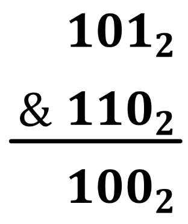
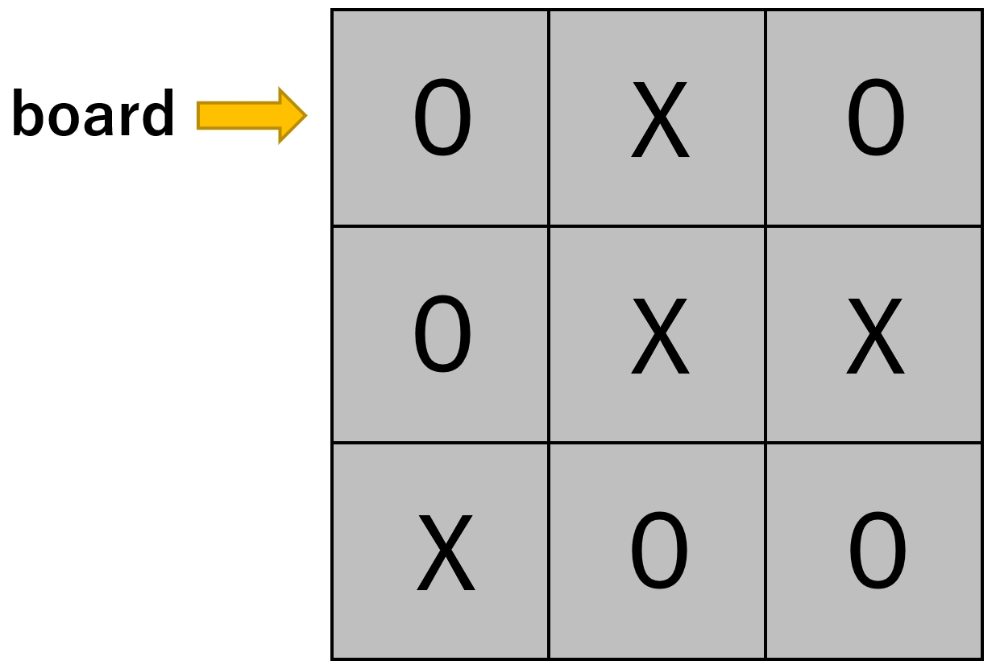
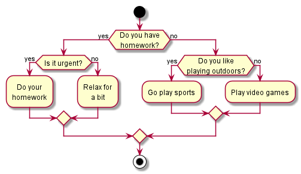
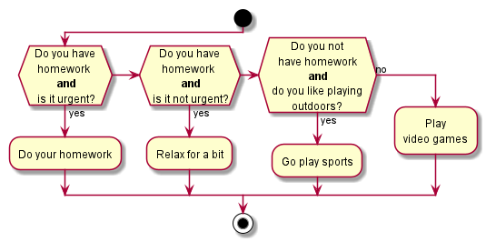
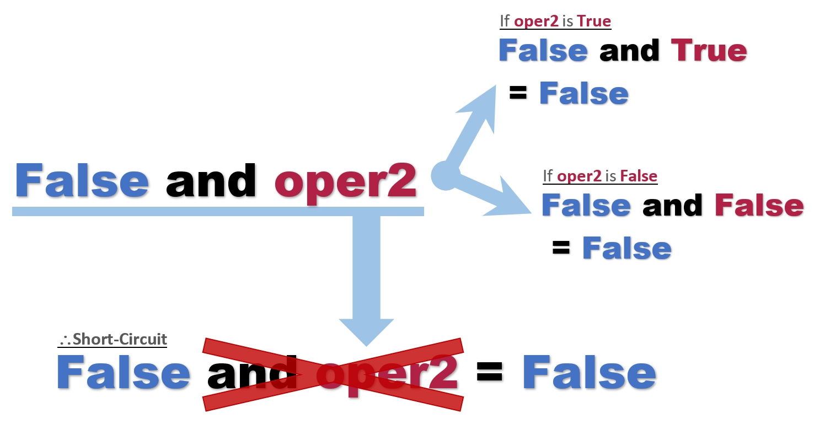
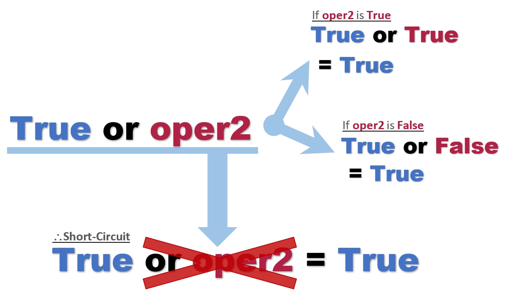

CSM Python Book
- 1. Chapter 1
- 2. Chapter 2 - Manipulating Variables
- 3. Chapter 3 - Lists, Strings, and More
- 4. Chapter 4 - Conditional Statements
- 5. Chapter 5 - for and while Loops
- 6. Chapter 6 - Functions
- 7. Chapter 7 - Object-Oriented Programming
1. Chapter 1
2. Chapter 2 - Manipulating Variables
2.1. Variable
Variables are a very important and powerful tool that programmers use to store and manage data. The definition of variable is something that can change or take different values. For example, let’s say an experiment was done on a group of teenagers of age 15. The names of each test subject will be different, so each subject’s name can be treated as a variable. On the other hand, every subject’s age are the same (15), therefore, age cannot be treated as a variable, but rather, a constant.
In programing, a variable is like a box that can store different values, such as numbers and words, inside.
Suppose there is a number 15. It can refer to anything, like someone’s age or someone’s quiz score. To clarify what the value means, the box, or the variable, is given a name. In the example above, the variable is named age to signify that 15 refers to someone’s age.
Today, there exists tons of different data, which would be very hard to distinguish and organize without meaningful specifiers. Therefore, we store them inside variables with relevant names.
2.1.1. Basic Data Types in Python
It was mentioned that we can store different types of data in variables. But what are the different data types that exist in Python? The three basic types are numbers, strings, and boolean values.
1. Number
Numbers are a familiar concept of data to all of us. We use it daily, whether it is to pay for an item at a supermarket or to do our math homework. In Python, numbers are split into two parts: integers and floating point numbers.
Integers, or int for short, are numbers that do not have decimal points.
-
1 -
10 -
253 -
2,147,483,648
Floating point numbers, or float for short, are numbers with decimal points.
-
1.0 -
3.14159 -
171.3 -
1713e-1 -
1.713E2
|
Note
|
|
We can use the built-in type(x) function to check the data type of x. Try the following examples on Python shell and check the output.
type() Example>>> type(1) <class 'int'> >>> type(2_147_483_648) <class 'int'> >>> type(1.0) <class 'float'> >>> type(1713e-1) <class 'float'>
|
Note
|
Line 3 says 2_147_483_648 instead of 2,147,483,648. This is because commas have a special role in Python. We use underscores (_) in Python to increase readability of numbers instead of commas.
|
2. String
Strings refers to any sequence of characters - a 'string' of characters. To express something as text, we would use strings to do that. In Python, in order to specify that something is a string, we surround the sequence of characters in single quotation marks.
-
'strings' -
'Hello World' -
'I am 15 years old' -
'15'
Like the last example, if numbers are surrounded by single quotation marks, Python will treat them as words, or strings, instead of a number.
Let’s use the type(x) function again to check the data type of x.
type() Example>>> type('Hello World')
<class 'str'>
>>> type('I am 15 years old')
<class 'str'>
>>> type('15')
<class 'str'>
3. Boolean
Boolean values traditionally take two values only, 0 and 1. In computer programming, Booleans are used to express two values, True and False.
-
False(0) -
True(1)
In certain cases, Python will treat True/False as 1/0 and vice versa.
Let’s use the type(x) function again to check the data type of x.
type() Example>>> type(True) <class 'bool'> >>> type(False) <class 'bool'>
As of now, it may not be clear how to use this data type. Later, we will use this data type to evaluate conditional expressions (e.g. if-else statements).
2.1.2. Variable Assignments
To effectively use variables, we must assign values to them. In this assignment step, we create a new variable with an appropriate name and give them a value.
1 age = 15
2 pi = 3.14159
3 name = 'John Doe'
4 is_same = True
5 print(age, pi, name, is_same)15 3.14159 John Doe True
The above example showcases the variable assignments of different data types. Line 1 assigns the integer value 15 to the variable named age. Line 2 assigns the floating point number approximate of π to the variable pi. Line 3 assigns the string value 'John Doe' to the variable name. Line 4 assigns the boolean value True to the variable is_name. As this example shows, with meaningful variable names, others can see what the values are referring to.
The print() statement in line 5 is used to display the values of each variable on the computer screen for us to see. The Output section shows how each data type looks like when printed. As shown, if the values/variables are listed by commas, they are separated by one whitespace and printed. The print() statement will be covered in more depth under Section 2.3, “Printing”.
Evaluate the output of the following Python program.
1 num_int = 123
2 print('Data type of', num_int, 'is:', type(num_int))
3
4 num_float = 1618e-3
5 print('Data type of', num_float, 'is:', type(num_float))
6
7 str1 = 'Python is Fun'
8 print('The variable str1 is storing the following value:', str1)Answer
Data type of 123 is: <class 'int'> Data type of 1.618 is: <class 'float'> The variable str1 is storing the following value: Python is Fun
A. Multiple Assignment
We have showed that we can use 4 lines to create 4 variables, but can we do it in less? The answer is yes.
1 a, b = 1, 2
2 age, pi, name = 15, 3.14159, 'John Doe'Line 1 assigns the integer value 1 to the variable a and the integer value 2 to the variable b. The number of variables and values to assign must be equal, unless there is only one variable. But as line 2 shows, the types of values to assign may be different.
1 a = 1, 2, 3If multiple values are assigned to one variable, that variable will be interpreted as a tuple by Python. A tuple is another data type supported by Python, not covered currently.
1 a, b = 1, 2, 3
2 a, b, c = 1, 2Running the above lines of codes will cause Python to throw an error.
Write a Python program to assign the values 'John Doe', 175, 68, True to the variables name, height, weight, has_siblings in one line. Check your work using the print() statement. Values: 'John Doe', 175, 68, True Variables: name, height, weight, has_siblings
Answer
1 name, height, weight, has_siblings = 'John Doe', 175, 68, True
2 print(name, height, weight, has_siblings)B. Equal Sign
Another point to note is that the equal sign (=) has a different meaning in programming than in mathematics.
In mathematics, equal sign signifies that the values on both sides are equal. x = y means that the value of variable x is the same as the value of variable y.
On the other hand, in computer programming, equal sign signifies that we are storing the value on the right side of the = sign to the variable written on the left side of the = sign. Therefore, x = y in Python means that the value of y is stored in variable x.
1 y = 10
2 x = yIn the above snippet of code, since the value of y is 10, line 2 is storing the integer value 10 to the variable x.
C. Naming Conventions of Variables
Capitalized, PascalCase, camelCase are all valid variable names. However, to standardize variable names, Python has a set of rules when naming variables.
1. Not allowed
-
Cannot contain any characters other than alphabets, numbers, and underscores
-
Cannot start with a number
-
Cannot be a word reserved by Python (called a keyword)
Below shows all 35 keywords reserved by Python:
|
|
|
|
|
|
|
|
|
|
|
|
|
|
|
|
|
|
|
|
|
|
|
|
|
|
|
|
|
|
|
|
|
|
|
Are the variable names listed below valid (Yes/No)? Q1. valid_variable Q2. name1_ Q3. 1place Q4. safe_password@1^ Q5. class Q6. elif_if
| Answer | ||
|---|---|---|
Question |
Answer |
Explanation |
Q1 |
Yes |
|
Q2 |
Yes |
|
Q3 |
No |
Starts with a number |
Q4 |
No |
Contains characters other than letters, numbers, and underscores |
Q5 |
No |
|
Q6 |
Yes |
Even though |
2. Recommended
-
Variable names should all be lowercase
-
Words in variable names should be separated by a single underscore (_)
-
Variable names should be concise while being sufficiently descriptive
-
Generally, should not start with an underscore (_)
age, full_name, height1 are all acceptable variable names in Python.
Should you be using the following variable names (Yes/No)? Q1. my_friends_best_friends_cats_name Q2. myName Q3. cpu_name Q4. device__name Q5. animal_type
| Answer | ||
|---|---|---|
Question |
Answer |
Explanation |
Q1 |
No |
Variable name is to wordy Better: cat_name, name |
Q2 |
No |
Better: my_name, name |
Q3 |
Yes |
Specifies what 'name' it is referring to |
Q4 |
No |
Words should be separated using one underscore Better: device_name |
Q5 |
Yes |
Specifies what 'type' it is referring to |
2.2. Operators and Expressions
2.2.1. Expressions
An expression is a line of code that consists of values, variables, and/or operators. An operator is used to manipulate the values of the operands. In the expression a + b, + is the operator and a and b are the operands.
1 3
2 x
3 x + 32.2.2. Operators
A. Arithmetic Operators
| Operator | Example | Description |
|---|---|---|
|
|
Signifies that the value/variable that follows |
|
|
Adds the two operands together |
|
|
Concatenates the second string to then end of the first string |
|
|
Signifies that the value/variable that follows |
|
|
Subtracts the right hand operand from the left hand operand |
|
|
Multiplies the two operands |
|
|
Repeats the string operand by the number of times specified by the right hand operand |
|
|
Divides the left hand operand by the right hand operand |
|
|
Raises the left hand operand to the power of the right hand operand |
|
|
Evaluates the remainder when left hand operand is divided by the right hand operand |
|
|
Performs a floor division, which means the portion after the decimal point of the quotient is discarded. 3 divided by 2 is 1.5, so |
1 x, y = 10, 20
2
3 c = x + y
4 print('x + y =', c)
5
6 c = x - y
7 print('x - y =', c)
8
9 c = x * y
10 print('x * y =', c)
11
12 c = x / y
13 print('x / y =', c)
14
15 c = x ** y
16 print('x ** y =', c)
17
18 c = x % y
19 print('x % y =', c)
20
21 c = x // y
22 print('x // y =', c)
23
24 bool = True
25 c = x + bool
26 print('x + bool =', c)x + y = 30 x - y = -10 x * y = 200 x / y = 0.5 x ** y = 100000000000000000000 x % y = 10 x // y = 0 x + bool = 11
Additional Explanation |
Most of the examples are self-explanatory. However, lines 24-26 seem pretty confusing. How can we add a boolean value to an integer value? Remember that Python can interpret boolean values as either |
|
1 str1, str2 = 'Hello', 'World'
2
3 s = str1 + str2
4 print('str1 + str2 =', s)
5
6 s = str1 * 3
7 print('str1 * 3 =', s)str1 + str2 = HelloWorld str1 * 3 = HelloHelloHello
Additional Explanation |
Line 3 concatenates |
Line 6 repeats |
Evaluate the following expressions.
Q1. 2 ** 10
Q2. (10 + 40) / (12 / 3)
Q3. (3 * 2) % 4
Q4. (True * 10) // 3
Q5. ('a' + 'bc') * 5
| Answer | |
|---|---|
Q1. 1024 |
|
Explanation |
2 to the power of 10 is 1024 |
Q2. 12.5 |
|
Explanation |
(10 + 40) / (12 / 3) |
Q3. 2 |
|
Explanation |
(3 * 2) % 4 |
Q4. 3 |
|
Explanation |
(True * 10) // 3 |
Q5. 'abcabcabcabcabc' |
|
Explanation |
('a' + 'bc') * 5 |
B. Relational Operators
These operators are used to compare the two operands and return their relationship. In programming, such relationship will always be a boolean value: True or False.
| Operator | Example | Description |
|---|---|---|
|
|
If the two operands are equal in value, then the expression evaluates to True. |
|
|
If the two operands are not equal in value, then the expression evaluates to True. |
|
|
If the left hand operand is greater than the right hand operand, then the expression evaluates to True. |
|
|
If the left hand operand is less than the right hand operand, then the expression evaluates to True. |
|
|
If the left hand operand is greater than or equal to the right hand operand, then the expression evaluates to True. |
|
|
If the left hand operand is less than or equal to the right hand operand, then the expression evaluates to True. |
1 x, y, z = 10, 20, 10
2 str1, str2 = 'aa', 'ab'
3
4 print('(x == z) =>', x == z)
5 print('(str1 == str2) =>', str1 == str2)
6 print('(x == str1) =>', x == str1)
7
8 print('(x != z) =>', x != z)
9 print('(str1 != str2) =>', str1 != str2)
10 print('(x != str1) =>', x != str1)(x == z) => True (str1 == str2) => False (x == str1) => False (x != z) => False (str1 != str2) => True (x != str1) => True
Additional Explanation |
Lines 6 and 10 show that we can compare the equality of a numerical value to a string value. Comparing the equality of a number and a string will always evaluate to |
11 print('(x > y) =>', x > y)
12 print('(x > z) =>', x > z)
13 print('(str1 > str2) =>', str1 > str2)
14
15 print('(x < y) =>', x < y)
16 print('(x < z) =>', x < z)
17 print('(str1 < str2) =>', str1 < str2)
18
19 print('(x >= y) =>', x >= y)
20 print('(x >= z) =>', x >= z)
21 print('(str1 >= str2) =>', str1 >= str2)
22
23 print('(x <= y) =>', x <= y)
24 print('(x <= z) =>', x <= z)
25 print('(str1 <= str2) =>', str1 <= str2)(x > y) => False (x > z) => False (str1 > str2) => False (x < y) => True (x < z) => False (str1 < str2) => True (x >= y) => False (x >= z) => True (str1 >= str2) => False (x <= y) => True (x <= z) => True (str1 <= str2) => True
Additional Explanation |
Lines 13 and 17 checks if |
Unlike the equality operators, if we try to use the comparison operators to compare the relationship between a number and a string, Python will throw an error. For example, |
26 bool = True
27 print('(x > bool) =>', x > bool)
28 print('(x <= bool) =>', x <= bool)(x > bool) => True (x <= bool) => False
Additional Explanation |
As explained before, numerical values can be compared to boolean values. Python will convert the boolean value to its corresponding numerical value. Therefore, essentially, line 27 is the same as writing |
Evaluate the following expressions. Q1. 'A' > 'a' Q2. 'A' > '1' Q3. 'catc' + 'atc' + 'at' == 'cat' * 3 Q4. 33 // 3 < 9 + 2 Q5. 2 ** 10 >= 10 ** 3
| Answer | |
|---|---|
Q1. False |
|
Explanation |
Uppercase letters have lower ASCII values than lowercase letters. |
Q2. True |
|
Explanation |
Numbers (represented as strings) have lower ASCII values than alphabets (both lower and uppercase). |
Q3. True |
|
Explanation |
'catc' + 'atc' + 'at' == 'cat' * 3 |
Q4. False |
|
Explanation |
33 // 3 < 9 + 2 |
Q5. True |
|
Explanation |
2 ** 10 >= 10 ** 3 |
C. Logical Operators
Whereas Relational Operators compared the values of the two operands, Logical Operators are mainly used to manipulate two boolean values. The resulting value will always be a boolean value. In Python, there are 3 logical operators, which are and, or, and not.
Let’s think of the and and or operators as function that takes in two inputs, the two operands as inputs to the function, and the result as the output. The and operator outputs True if and only if the two inputs are True. The or operator outputs True if and only if at least one of the two inputs is True.
Unlike the two operators above, the not operator is unary, meaning it takes only one operand. The not operator negates the boolean value. So if the input is True, the output will be False, and vice versa.
| Input | Output | |||
|---|---|---|---|---|
X |
Y |
X and Y |
X or Y |
not X |
|
|
|
|
|
|
|
|
|
|
|
|
|
|
|
|
|
|
|
|
1 a, b, c = 10, 20, 10
2
3 x = a > b
4 y = a == c
5 print('x is', x, 'and y is', y)
6 print('x and y =>', x and y)
7
8 x = a <= b
9 y = a > b
10 print('x is', x, 'and y is', y)
11 print('x or y =>', x or y)
12
13 x = a < b or b == c
14 print('x is', x)
15 print('not x =>', not x)x is False and y is True x and y => False x is True and y is False x or y => True x is True not x => False
Additional Explanation |
Lines 1 - 11 should be pretty straightforward if you look at it step-by-step. |
But Line 13 may be a bit confusing at first glance. In one statement, there are both relational and logical operators. In such cases, always evaluate the relational operations first, then the logical operations. Order of operations will be covered in more depth later. |
Evaluate the following expressions. Q1. 'A' > 'a' and 'A' > '1' Q2. not (33 // 3 < 9 + 2) Q3. False or 2 ** 10 >= 10 ** 3
| Answer | |
|---|---|
Q1. False |
|
Explanation |
'A' > 'a' and 'A' > '1' |
Q2. True |
|
Explanation |
not (33 // 3 < 9 + 2) |
Q3. True |
|
Explanation |
False or 2 ** 10 >= 10 ** 3 |
D. Bitwise Operators
Bit operators are ones that operator on binary numbers. ACS Theory Lesson 6 will help in understanding this section.
Basic Explanation of Binary Numbers
It is convenient for us to count in base 10 because we have 10 fingers. However, computers do not have fingers to count with. Instead, they can 'count' in base 2 using electricity.
Suppose there is a little light bulb inside computers that lights up if there is electricity and turns off if there is no electricity. If the light bulb lights up, the computer interprets it as a 1, and if the light bulb is off, the computer interprets it as a 0.
The above picture is a rough demonstration of how numerical data is represented inside computers. Each 0/1 is called a bit, similar to how each number in decimal is called digits. Let’s compare binary (base 2) numbers to decimal (base 10) numbers.
If 10110 is a decimal:
1011010 = 1 * 104 + 0 * 103 + 1 * 102 + 1 * 101 + 0 * 100
If 10110 is a binary number:
101102 = 1 * 24 + 0 * 23 + 1 * 22 + 1 * 21 + 0 * 20 = 2210
Additional Example
Likewise, if 10110 is in base n:
10110n = 1 * n4 + 0 * n3 + 1 * n2 + 1 * n1 + 0 * n0
|
Note
|
In Python, we can represent binary numbers by preceding the binary number with |
Bitwise Operators
For bitwise operators, the two operands must be integer (or boolean) values. The three bitwise operators are & (and), | (or), ^ (xor), and ~ (not).
xor is another logical operator (not in Python) that evaluates to True if the two boolean operands have different values.
| Input | Output | |
|---|---|---|
X |
Y |
X xor Y |
|
|
|
|
|
|
|
|
|
|
|
|
If a base-10 integer is converted to a binary number, it will contain only 0s and 1s. Then, bitwise operators interpret each 0/1 bit as False/True and performs operations shown under Section C. Logical Operators. The resulting boolean value is converted back to 0/1.
| Operator | Example | Description |
|---|---|---|
& |
|
Performs bitwise AND on |
| |
|
Performs bitwise OR on |
^ |
|
Performs bitwise XOR on |
~ |
|
Performs bitwise NOT on |
|
Note
|
x and y are integers (or booleans)
|
1 x, y = 5, 6 # 5 -> 101, 6 -> 110
2
3 print('x & y is', x & y, 'in base 10')
4 print('x & y is', bin(x & y), 'in base 2')
5
6 print('x | y is', x | y, 'in base 10')
7 print('x | y is', bin(x | y), 'in base 2')
8
9 print('x ^ y is', x ^ y, 'in base 10')
10 print('x ^ y is', bin(x ^ y), 'in base 2')
11
12 print('~x is', ~x, 'in base 10')
13 print('~x is', bin(~x), 'in base 2')x & y is 4 in base 10 x & y is 0b100 in base 2 x | y is 7 in base 10 x | y is 0b111 in base 2 x ^ y is 3 in base 10 x ^ y is 0b11 in base 2 ~x is -6 in base 10 ~x is -0b110 in base 2
Additional Explanation |
The |
The |
Let’s analyze how

Remember that Python treats |
|
Tip
|
If you need to check whether a number x is even or not, check the following condition x & 1 == 0. This is slightly faster than using the arithmetic modulus operator x % 2 == 0. This works because a binary number is even if the last bit is 0 and odd if the last bit is 1.
|
Evaluate the following expressions. Q1. 24 & 1 Q2. 25 & 17 Q3. 45 | 29 Q4. 13 ^ 7
| Answer | |
|---|---|
Q1. 0 |
|
Explanation |
24 & 1 |
Q2. 17 |
|
Explanation |
25 & 17 |
Q3. 61 |
|
Explanation |
45 | 29 |
Q4. 10 |
|
Explanation |
13 ^ 7 |
E. Bitwise Shift Operators
Bitwise shift operators also operate on binary numbers. More precisely, the left hand operand is converted to a binary number and the right hand operand is left as a decimal number. Bitwise shift operators shift the left hand operand (represented in binary) either to the left or right by the number of bits specified by the right hand operand.
| Example |
|---|
Shift 510 to the left by 3 bits Do you see a relationship between the two numbers? 40 is 8 (= 23) times 5. Do you think this is a coincidence? No, it’s not. In decimal, if we shift a number Likewise, in binary, if we shift a number |
Shift 1010 to the right by 1 bit Similar to left shift, if we shift a number |
| Operator | Example | Description |
|---|---|---|
|
|
Shifts |
|
|
Shifts |
1 x, y = 5, 2 # 5 -> 101
2
3 print('x << y is', x << y, 'in base 10')
4 print('x << y is', bin(x << y), 'in base 2')
5
6 print('x >> y is', x >> y, 'in base 10')
7 print('x >> y is', bin(x >> y), 'in base 2')x << y is 20 in base 10 x << y is 0b10100 in base 2 x >> y is 1 in base 10 x >> y is 0b1 in base 2
|
Tip
|
If you ever need to multiply or divide a number by a power of 2, using bitwise shift operators will be slightly faster than using arithmetic operators. |
Evaluate the following expressions. Q1. 2 << 9 Q2. 45 >> 3 Q3. 9 << 2 Q4. 64 >> 6
| Answer | |
|---|---|
Q1. 1024 |
|
Explanation |
2 << 9 |
Q2. 5 |
|
Explanation |
45 >> 3 |
Q3. 36 |
|
Explanation |
9 << 2 |
Q4. 1 |
|
Explanation |
64 >> 6 |
F. Assignment Operators
We met one assignment operator so far, which was =. The other assignment operators we are going to explore is a combination of = and assignment operators.
| Operator | Example | Description |
|---|---|---|
|
|
Stores the value |
|
|
Same as |
|
|
Same as |
|
|
Same as |
|
|
Same as |
|
|
Same as |
|
|
Same as |
|
|
Same as |
1 x, y = 10, 20
2
3 x += y
4 print('After x += y, x is', x)
5
6 x = 10
7 x -= y
8 print('After x -= y, x is', x)
9
10 x = 10
11 x *= y
12 print('After x *= y, x is', x)
13
14 x = 10
15 x /= y
16 print('After x /= y, x is', x)
17
18 x = 10
19 x **= y
20 print('After x **= y, x is', x)
21
22 x = 10
23 x %= y
24 print('After x %= y, x is', x)
25
26 x = 10
27 x //= y
28 print('After x //= y, x is', x)After x += y, x is 30 After x -= y, x is -10 After x *= y, x is 200 After x /= y, x is 0.5 After x **= y, x is 100000000000000000000 After x %= y, x is 10 After x //= y, x is 0
Evaluate the final value stored inside x.
1 x = 5
2 x **= 3
3 x //= 4
4 x %= 11
5 x -= 4| Answer |
|---|
Q1. 5 |
Explanation
|
G. Ternary Operators
As the name suggests, ternary operators have three operands in the following form:
value1 if boolean_condition else value2As the above code snippet shows, if-else is the ternary operator while value1, boolean_condition, and value2 are the three operands. If the boolean_condition evaluates to True, the operator returns value1 and returns value2 otherwise.
1 age = 10
2 youth = 'young' if age <= 25 else 'old'
3 print('My brother is 10 years old, so he is', youth)
4
5 x, y = 5, 7
6 big = x if x > y else y
7 small = x if x < y else y
8 print(big, 'is greater than', small)My brother is 10 years old, so he is young 7 is greater than 5
Q1. Suppose we have a variable x with an integer value. Write a program using ternary operators to print 'Up' if x is greater than or equal to 50 and 'Down' otherwise. Assume that variable x already has an integer value stored inside (or you can assign an arbitrary value). Q2. Suppose we have a variable x with an integer value. Write a program using ternary operators to print 'Even' if x is even and 'Odd' if x is odd. Assume that variable x already has an integer value stored inside (or you can assign an arbitrary value). Q3. Suppose we have a variable s with a string value. Write a program using ternary operators to print 'Before' if s is lexicographically lower than the string 'programming'. Assume that variable s already has a string value stored inside (or you can assign an arbitrary value).
| Answer |
|---|
ex2_11.py
|
2.2.3. Type Conversion
In Section 1.1, we took a look at some of the basic data types in Python. If we add two integers together, the resulting value will be an integer type. If we add two strings together, the resulting value will be a string type.
However, if we look at the division example shown in Section A. Arithmetic Operators, 3 / 2 resulted in 1.5. At first glance, this does not seem important at all. But if we look closely, we can see that an operation with two integer operands resulted in a floating point number. This change of data type is called a type conversion.
Also, in the same section, we saw that if we add two string values, the second value is concatenated to the first value. What if we want to concatenate a number to a string? For example, if I want to say I am 12 years old, will 'I am ' + 12 + ' years old' work? Let’s find out in the following sections.
A. Implicit Type Conversion
What does the word 'implicit' mean?
| Implicit |
|
In other words, if something is expressed implicitly, others will be able to assume the meaning without a straightforward explanation. As such, implicit type conversion is one that Python assumes and automatically does for us.
3 / 2 → 1.5 is an example of implicit type conversion in Python. In some other languages, like Java or C/C++, 3 / 2 will yield 1. Because it is an operation involving two integer values, the resulting value is also an integer value. But Python will automatically convert, or implicitly convert, integer into a float data type.
Another example of an implicit type conversion in Python is operations involving booleans and numbers. We have seen that if boolean values are used in arithmetic operations, Python will treat them as either 0 (if False) or 1 (if True). Python is implicitly converting boolean values to integers (or floats).
In Python, the data types have a rank. Some of them are shown below.
boolean < integer < float
We can see that boolean is of lower rank than numbers, and integer is of lower rank than floating point numbers. When Python implicitly converts data types, it will always convert from lower to higher rank, in order to avoid data loss.
What are the results of the following expressions? Also check the data type of the result using type() statement if applicable (read Section 1.1 if you forgot what type() statement is). Q1. 10 / 4 Q2. 10 // 4 Q3. 314 / 1 Q4. True + 12 Q5. False + True Q6. '100 + 1 is ' + 101
| Answer | |
|---|---|
Q1. 2.5, <class 'float'> |
|
Explanation |
Plain division in Python will always yield a float data type. Since |
Q2. 2, <class 'int'> |
|
Explanation |
Floor division discards the numbers after the decimal point and only returns the integer value. Since |
Q3. 314.0, <class 'float'> |
|
Explanation |
As explained before, division in Python will always result in a float data type, even if it is a division without a remainder. |
Q4. 13, <class 'int'> |
|
Explanation |
Since |
Q5. 1, <class 'int'> |
|
Explanation |
|
Q6. TypeError: unsupported operand type(s) for +: 'int' and 'str' |
|
Explanation |
Python will not implicitly convert numbers to strings, unlike some other languages. Since Q6 attempted to concatenate the integer |
B. Explicit Type Conversion
If you attempted Exercise 2.12, you have seen that Q6. '100 + 1 is ' + 101 did not work. This means that concatenating a number to a string by using the plus (+) operator does not work. Then what should we do in these kinds of situations?
We can use the built-in str(), int(), and float() functions.
str(x)-
str(x)function will convertxinto its corresponding string value.1 str(10) # yields '10' 2 type(str(10)) # yields '<class 'str'>' 3 str(3.14) # yields '3.14' 4 str(1 + 2 + 3) # yields '6' 5 'I am ' + str(15) + ' years old' # yields 'I am 15 years old' int(x)-
int(x)will convertxinto its corresponding integer value.1 int('13') # yields 13 2 type(int('13')) # yields '<class 'int'>' 3 int(' 14 ') # yields 14 4 int(3.14) # yields 3 5 10 + int('15') # yields 25 int(x, b)-
int(x, b)will interpret the string valuexas a number in baseband yield the corresponding integer value (in base 10).1 int('10', 2) # yields 2 2 int('1011', 2) # yields 11 3 int('13', 8) # yields 11 4 int('b', 16) # yields 11 float(x)-
float(x)will convertxinto its corresponding float value.1 float(10) # yields 10.0 2 type(float(10)) # yields '<class 'float'>' 3 float('3.14') # yields 3.14 4 float(' 1 ') # yields 1.0 5 1.0 + float('2.0') # yields 3.0
Explicit type conversion can also be called type casting because we are casting, or forcefully imposing, another data type to the values.
What are the results of the following expressions?
Also check the data type of the result using type() statement if applicable (read Section 1.1 if you forgot what type() statement is).
Q1. int('13' + '14')
Q2. int('13' + ' 14')
Q3. int(13 + '14')
Q4. str(123) + '456'
Q5. 123 + int('456')
Q6. str(int('1010', 2))
Q7. 4 / 2 == float(2)
| Answer | |
|---|---|
Q1. 1314, <class 'int'> |
|
Explanation |
First, the expression inside the parentheses is evaluated. |
Q2. ValueError: invalid literal for int() with base 10: '13 14' |
|
Explanation |
The expression inside the parentheses evaluates to |
Q3. TypeError: unsupported operand type(s) for +: 'int' and 'str' |
|
Explanation |
As explained before, a number cannot be added to a string value, so Python throws an error. |
Q4. '123456', <class 'str'> |
|
Explanation |
The integer value |
Q5. 579, <class 'int'> |
|
Explanation |
The string value |
Q6. '10', <class 'str'> |
|
Explanation |
|
Q7. True, <class 'bool'> |
|
Explanation |
The left hand side of the equation evaluates to |
2.2.4. Order of Operations
Now that we have looked at seven types of operators, if you saw the following statement, how would you solve it?
not (1 + 3 * 2) >= 3 ** 3 * 2 // 6 and 35 & 12 < 25It is not immediately clear which operation you should start with. This is why Python designated the order in which the operations will be solved in, called Order of Operations or Operator Precedence.
| Priority[1] | Operator | Example | Name |
|---|---|---|---|
1 |
|
|
Parenthesized Expression |
2 |
|
|
Exponentiation[2] |
3 |
|
|
Positive (number) |
|
|
Negation (of a number) |
|
|
|
Bitwise NOT |
|
4 |
|
|
Multiplication |
|
|
Division |
|
|
|
Floor division |
|
|
|
Modulus (Remainder) |
|
5 |
|
|
Addition |
|
|
Subtraction |
|
6 |
|
|
Bitwise left shift |
|
|
Bitwise right shift |
|
7 |
|
|
Bitwise AND |
8 |
|
|
Bitwise XOR |
9 |
|
|
Bitwise OR |
10 |
|
|
Less than |
|
|
Less than or equal to |
|
|
|
Greater than |
|
|
|
Greater than or equal to |
|
|
|
Equal to |
|
|
|
Not equal to |
|
|
Omitted |
Membership and Identity tests (not covered) |
|
11 |
|
|
Boolean NOT |
12 |
|
|
Boolean AND |
13 |
|
|
Boolean OR |
14 |
|
|
Assignment operator |
|
Omitted |
Shorted assignment operators |
|
Note
|
Like mathematics, arithmetic expressions in programming also follow the PEMDAS (Parentheses-Exponent-Multiplication-Division-Addition-Subtraction) rule. |
Q1. 10 - 6 + 3 * 4 // 4 Q2. -5 - --6 * 9 / (2 - 1) * 3 Q3. not (1 + 3 * 2) >= 3 ** 3 * 2 // 6 and 35 & 12 < 25
| Answer | |
|---|---|
Q1. 7 |
|
Explanation |
10 - 6 + 3 * 4 // 4 |
Q2. -167.0 |
|
Explanation |
-5 - --6 * 9 / (2 - 1) * 3 |
Q3. |
|
Explanation |
not (1 + 3 * 2) >= 3 ** 3 * 2 // 6 and 35 & 12 < 25 |
2.3. Printing
When we are programming, we may want to display information on screen, whether it is to check the output or debug. Since computers cannot talk, displaying information on screen is sometimes a convenient way to communicate with the computer while coding.
To achieve this, we can use the built-in print() function. We have seen this function a few times in previous examples and exercises. Now, let’s take a deeper look at this function.
2.3.1. print(x)
print(x) will first convert x into its corresponding string value. If x is an expression, the expression will be evaluated first, then converted to a string value. Then, the string value will be printed on screen, and the cursor moves to the next line.
1 print('Hello World')
2 print(1 + 2 + 3)
3 print('I have ' + str(3) + ' cats')Hello World 6 I have 3 cats
Additional Explanation |
|
If the Hello World6I have 3 cats |
Write a Python program to print the following sentences using 3 print() statements. Python is fun. To become better at Python, you should spend at least 1 hour each day practicing.
| Answer |
|---|
ex2_15.py
|
Escape Characters
What if we want to print single quotations with the print() statement? Can we write the following?
print('I said, 'Hello'')
To achieve this task, we can use a special character, called backslash (\). Below lists some of the most commonly used escape characters (characters used with a backslash). If you want to learn more, Google is your best friend.
| Escape Character | Name | Description |
|---|---|---|
|
newline |
Moves the cursor to the next line |
|
tab |
Prints the ASCII Horizontal Tab (TAB) |
|
Single quote |
Prints a single quote |
|
Double quote |
Prints a double quote |
1 print('Hello World\n')
2 print('\ta')
3 print('I said, \'Hello\'')
4 print('I said, \"Hello\"')Hello World
a
I said, 'Hello'
I said, "Hello"
Additional Explanation |
The output from Line 1 results in a blank line. Why is this so? If we include the escape character |
|
Note
|
Since we use single quotes to represent strings, using double quotes without the backslash character is also fine. For example, print('I said, "Hello"') will also print I said, "Hello".The reason why there is a \" is because, in Python, we can represent strings with double quotes as well (although this is discouraged). If we used double quotation marks, then we would have to write print("I said, \"Hello\""), in order to print I said, "Hello".Similarly, we can use single quotes without the backslash character if we represent strings with double quotation marks. For example, print("I said, 'Hello'") will print I said, 'Hello'.
|
Write a Python program to print the following sentences using 3 print() statements and escape characters.
The start of a paragraph should be indented.
Can I write one sentence in
two lines using one print statement?
We can print quotation marks, like ' and ", using print statements.
| Answer |
|---|
ex2_16.py
|
2.3.2. print(x1, x2, …)
This is the statement that was used often in previous exercises. The values to be printed are separated by commas. Then Python will print all of the values separated by a single whitespace.
1 print(1, 2, 3)
2 print('I have', 3, 'cats')1 2 3 I have 3 cats
Additional Explanation |
Line 1 is trying to print three integer values. |
Line 2 shows that you can print strings together with numbers by listing them with commas. This is a clearer and more concise alternative to writing |
Write a Python program to print the following sentences using 2 print() statements. I want to have 2 puppies 1 plus 1 is 2
| Answer |
|---|
ex2_17.py
|
2.3.3. print(x, end=s)
print(x, end=s) will concatenate s to the end of x and print the resulting value without moving the cursor to the next line.
It was mentioned before that the print() statement automatically moves the cursor to the next line. This was a very simplified way of explaining the print() statement. In reality, when we use the print() statement, s is set to '\n' by default. Therefore, print(x) is equivalent to print(x, end='\n'). In any case where the value for end is not specified, it is set to '\n' by default.
1 print('Hello World', end='\n')
2 print('1 2 3', end='\n\n')
3 print('Hello', end='World ')
4 print('The line does not change.', end='Weird!\n')Hello World 1 2 3 HelloWorld The line does not change.Weird!
Additional Explanation |
Line 1 is equivalent to saying |
Line 2 concatenates two newline characters to the end of |
Line 3 concatenates |
Write a Python program to print the following sentences using 3 print() statements. This print statement has no line change.This is the next print statement ending in ** The last print statement ending in HelloWorld
| Answer |
|---|
ex2_18.py
|
2.3.4. print(x…, sep=s)
print(x..., sep=s) will separate the given values x... by the given string s. For example, if we say print(x1, x2, x3, sep=s), it equivalent to saying print(x1 + s + x2 + s + x3), assuming x1, x2, and x3 are all string values.
Remember that if we list multiple values with commas, the values are printed separated by a single whitespace. This is because sep value is set to ' ' by default.
1 print('Hello', 'World', sep=' ')
2 print(1, 2, 3, sep='+')
3 print('apples', 'banana', 'oranges', sep=', ')
4 print('Nothing happens if there is only one value', sep='What would happen?')Hello World 1+2+3 apples, banana, oranges Nothing happens if there is only one value
Additional Explanation |
Line 1 is equivalent to saying |
Line 2 is equivalent to saying |
Nothing happens in Line 4 because there is only one value. This |
Write a Python program to print the following sentences using 2 print() statements. We can separate values by commas like A, B, C. Parentheses->Exponent->Multiplication->Division->Addition->Subtraction.
| Answer |
|---|
ex2_19.py
|
2.4. Input
So far, to store a value inside a variable, we specified it directly in the program. For example, if we wanted to store the value 10 in the variable a, we would have to write a line in our program as such: a = 10. However, say we have a program to store personal data. We would have hundreds or thousands of users using our program. To store each user’s information, such as their name, age, and gender, we cannot be updating our program directly each time. We need the users to input their own information and a way for our program to interpret and store the users' inputted information.
To do this, we use the built-in input() function.
2.4.1. input(prompt)
To see what input(prompt) function does, let’s take a look at an example.
1 name = input('What is your name: ')
2 print('User\'s name is ' + name)What is your name: John Doe User's name is John Doe
|
Note
|
CLI (command line interface) is a platform where you can interact with your program. |
Explanation |
|
The user types his/her input on the CLI. In this example, the user typed |
When Python sees the newline character, Python takes all the characters from after the prompt message and before (and not including) the newline character and stores it in the variable |
Line 2 prints the user’s name along with some explanatory text. |
input() treats all user inputs as a string. In order to treat them as other data types, such as integers or floats, we have to type cast them (covered under Section 2.2.3.2, “B. Explicit Type Conversion”).
1 # Input section
2 name = input('Write your name: ')
3 age = int(input('Write your age: '))
4 letter = input('Write a letter: ')
5 pi_approx = float(input('Write the pi approximate: '))
6
7 # Output section
8 print('Your name is', name)
9 print('You are', age, 'years old')
10 print('Your letter is', letter)
11 print('Pi is approximately', pi_approx)Write your name: John Doe Write your age: 24 Write a letter: A Write the pi approximate: 3.14159 Your name is John Doe You are 24 years old Your letter is A Pi is approximately 3.14159
Additional Explanation |
Lines 3 and 5 are casting the user input into an integer and float, respectively. In the example program above, there is no reason to type cast the user input, but in other situations, you might need to. |
Q1. Suppose there is a new amusement park built in your city. You are asked to make a program that calculates the ticket price. The price of each ticket is $5. Prompt the user how many tickets they need and calculate the price for them. Example interaction: How many tickets do you need: 5 Total ticket price is $25 Q2. The ticket pricing has changed. Now, the ticket price for children under the age of 7 is $3, and for everyone else, it is $5. Write a program that calculates the ticket price. (Hint: use more than one input() statement with meaningful prompt messages)
| Answer |
|---|
ex2_20.py
|
2.5. Tips
This section covers some tips on how you can become a better programmer.
2.5.1. Coding Style
Just like how spoken languages have grammar, programming languages have syntax. And no matter how your code is written, as long as it correctly follows the syntax, the Python interpreter will be able to understand it. However, it might not be the case for humans. If you start working, you will not be the only one looking at your code. Others would have to take a look and make corrections or give feedback on your work. Suppose you saw the following block of code:
1 A= 3
2 B=5
3
4 a= int(input())
5 b = int(input() )
6
7 c = a+b
8 d= a *A + b*B
9
10 print(c , d)Can you tell what this snippet of code is trying to achieve? It can be an example showcasing the use of different arithmetic operators, or it can be a program to calculate something more meaningful, like ticket prices. Also, the code does not look clean overall. The following snippet of code would be more appreciated by your peers or coworkers:
1 # Calculate and display the total number of visitors coming to this zoo
2 # and the total ticket price.
3
4 CHILD_TICKET_PRICE = 3 # in dollars
5 ADULT_TICKET_PRICE = 5 # in dollars
6
7 num_child = int(input('Number of children: '))
8 num_adult = int(input('Number of adults: '))
9
10 total_visitor = num_child + num_adult
11 total_price = num_child * CHILD_TICKET_PRICE + num_adult * ADULT_TICKET_PRICE
12
13 print('Total number of visitors:', total_visitor)
14 print('Total ticket price:', total_price)How well a code can be understood by other people is called readability, and Python has a set of styling guidelines to make your code more readable to others. Let’s take a look at some of them.
A. Variable Naming Conventions
* Included from Section 2.1.2.3, “C. Naming Conventions of Variables”
Capitalized, PascalCase, camelCase are all valid variable names. However, to standardize variable names, Python has a set of rules when naming variables.
1. Not allowed
-
Cannot contain any characters other than alphabets, numbers, and underscores
-
Cannot start with a number
-
Cannot be a word reserved by Python (called a keyword)
Below shows all 35 keywords reserved by Python:
|
|
|
|
|
|
|
|
|
|
|
|
|
|
|
|
|
|
|
|
|
|
|
|
|
|
|
|
|
|
|
|
|
|
|
2. Recommended
-
Variable names should all be lowercase
-
Words in variable names should be separated by a single underscore (_)
-
Variable names should be concise while being sufficiently descriptive
-
Generally, should not start with an underscore (_)
age, full_name, height1 are all acceptable variable names in Python.
Also, there is a difference when naming constants and variables. As covered before, constants are values that do not change, like pi and speed of light, and variables are values that can change. As shown above, variable names should be in lowercase.
Constants should follow the same rules as other variables, but they should all be capitalized.
4 CHILD_TICKET_PRICE = 3 # in dollars
5 ADULT_TICKET_PRICE = 5 # in dollarsWe know that ticket prices for children and adults will not change, so we set them as constants when we write our code. When we do so, we capitalize their names to let others know that the corresponding variable is storing a constant value.
B. Spacing
Remember the first code example? It looked like the following:
1 A = 3
2 B = 5
3
4 a = int(input())
5 b = int(input() )
6
7 c = a+b
8 d = a *A + b*B
9
10 print(c , d)See lines 5, 7, 8, and 10? What do they all have in common? They have spacing issues.
Generally, for expressions, we separate operands and operators (except for unary operators) with one whitespace.
# Binary operators operand_a operator operand_b # Ternary operators operand_a operator operand_b operator operand_c
Below are some examples.
# Unary operators (no space)
+x
-x
~x
# Binary operators
# Bad
x+y
x- y
x * y
a=6
# Good
x + y
x - y
x * y
a = 6
# Ternary operator
# Bad
x if boolean_condition else y
# Good
x if boolean_condition else yWhen we are listing things with a comma, we place the comma right after the previous element with no space and separate the next element with one space.
A, B, C, D, ...
Below are some examples.
# Bad
print(x,y,z)
print(x , y , z)
# Good
print(x, y, z)C. Comments
It was briefly mentioned before that whatever comes after # is called a comment. A comment is not recognized by the Python interpreter and will have no effect whatsoever on your code.
Then why should we write comments? After finishing a long piece of code, if you leave it and come back a few months later, chances are, you will not be able to understand what you wrote. To help you and others understand what your code is talking about, it is necessary to write meaningful comments.
The two types of comments that we are going to cover are block comments and inline comments.
Block Comments
What is a block? Let’s look at the previous example again and find out.
1 # Calculate and display the total number of visitors coming to this zoo
2 # and the total ticket price.
3
4 CHILD_TICKET_PRICE = 3 # in dollars
5 ADULT_TICKET_PRICE = 5 # in dollars
6
7 num_child = int(input('Number of children: '))
8 num_adult = int(input('Number of adults: '))
9
10 total_visitor = num_child + num_adult
11 total_price = num_child * CHILD_TICKET_PRICE + num_adult * ADULT_TICKET_PRICE
12
13 print('Total number of visitors:', total_visitor)
14 print('Total ticket price:', total_price)You can see that all the code in Lines 1-14 are performing one task: to calculate the total number of visitors and ticket price. Likewise, a block in Python can be loosely defined as a set of code that serves the same purpose or task.
Another way to think of a block is to check if a chunk of code has the same indentation. Later, you will learn if-statements and while-loops that will have different indentations. Those would also be containing distinct blocks of code.
Then what is a block comment? It is a comment explaining what the subsequent code block is trying to do.
1 # Calculate and display the total number of visitors coming to this zoo
2 # and the total ticket price.This block comment explains what Lines 4-14 are trying to achieve. As such, meaningful block comments can help others understand what your program is doing without dissecting each line of code.
Block comments should be placed in the same indentation level as the following block. Also, each block comment should generally start with a # followed by a single whitespace. For example:
# Bad
# Calculate and display the total number of visitors coming to this zoo
# and the total ticket price.
# Calculate and display the total number of visitors coming to this zoo
# and the total ticket price.
# Good
# Calculate and display the total number of visitors coming to this zoo
# and the total ticket price.Inline Comment
Like the name suggests, an inline comment is one that is written in the same line as the statement you are trying to explain.
4 CHILD_TICKET_PRICE = 3 # in dollars
5 ADULT_TICKET_PRICE = 5 # in dollarsThis is an example of inline comments. # in dollars explains that the written price is measured in dollars.
As shown in the example, inline comments should be written at least two spaces from the statement you are trying to explain. Also, like block comments, they should start with a # followed by a single whitespace.
However, try to avoid overusing inline comments, especially if the line of code is very obvious.
# Bad
x = x + 1 # increment x by 1
name = input() # Get user's name
print(name) # print the user's name2.6. Practice Problems
2.6.1. Problems
A. Variable Naming Convention
A-1 Are the following variable names acceptable? If not, explain why.
| Variable | Yes/No | Explain (if applicable) |
|---|---|---|
first name |
||
cpu_price |
||
_distance |
||
child-age |
||
PI |
||
name_of_my_new_cpu |
Answer
| Variable | Yes/No | Explain (if applicable) |
|---|---|---|
first name |
No |
Variable names cannot contain spaces. Multiple words should be separated with an underscore. |
cpu_price |
Yes |
|
_distance |
No |
It is a valid name, but variable names generally should not start with an underscore. |
child-age |
No |
Variable names cannot contain hyphens. Multiple words should be separated with an underscore. |
PI |
Yes |
Constant names should be all capitalized. |
name_of_my_new_cpu |
No |
Variable name is too lengthy |
B. Evaluate the displayed output
B-1
f = 100.32;
a = int(f)
s = str(f + a)
print('f =', f, 'a =', a, 's =', s)Answer
f = 100.32 a = 100 s = 200.32
B-2
a = 10
mystery = str(a) * 2
print(int(mystery, 2))Answer
10
B-3 What is the following the program doing? What would the output be if the input was 12? 28? 32? 45?
mystery_num = int(input('Mystery number: '))
mystery_condition = mystery_num % 3 == 0
print('Yes :)' if mystery_condition else 'No :(')Answer
The program is checking if the inputted number is divisible by 3 (prints Yes :)) or not (prints No :().
Mystery number: 12 Yes :) Mystery number: 28 No :( Mystery number: 32 No :( Mystery number: 45 Yes :)
B-4
x = 1
print(True and (3 > 4))
print(not x > 0)
print(x != 1 or x < 1)
print(x >= 0 or not x == 1)Answer
False False False True
B-5
print(4 << 2)
print(10 & 5)
print(23 ^ 13)
print(15 | 4)Answer
16 0 26 15
B-6
a, b, c, d, e = 3, 2, 1, 4, 5
num1 = a * b + d / c % e
num2 = -a * (b+b) - c * d // (4 - 2) * e
num3 = (a - b) * 10 % 3 + c * d - (4 - 2)
print('num1 =', num1)
print('num2 =', num2)
print('num3 =', num3)Answer
num1 = 10.0 num2 = -22 num3 = 3
C. Find any errors in following Python programs
C-1
var.name = 1
print(var.name + 9)Answer
var.name = 1 # -> var_name = 1
print(var.name + 9) # -> print(var_name + 9)C-2
int x = 1
int y = 2
print(x + y)Answer
int x = 1 # -> x = 1
int y = 2 # -> x = 2
print(x + y)C-3
num1 = input('Type first number: ')
num2 = input('Type second number: ')
print('The average of the two numbers are', (num1 + num2) / 2)Answer
num1 = input('Type first number: ') # -> num1 = int(input(...))
num2 = input('Type second number: ') # -> num2 = int(input(...))
print('The average of the two numbers are', (num1 + num2) / 2)
# or print('...', (int(num1) + int(num2)) / 2)D. Write your own program
D-1
You are making a program to register users in a game company. Get the user’s profile and print their information in the following manner:
Name: John Doe Age: 15 E-mail: johndoe@zmail.com Phone: 4082839123 John Doe, 15 years old, johndoe@zmail.com, 4082839123
Answer
name = input('Name: ')
age = input('Age: ')
email = input('E-mail: ')
phone = input('Phone: ')
print(name, age + ' years old', email, phone, sep=', ')D-2
Before the actual construction, a building company needs to find out the volume of the intended building. The building designer Sam who has to build thousands of buildings does not want to calculate volume of each building by hand. So, he plans to make a program that calculates the volume if a user inputs the width, length, height. Write this program.
Width: 200 Length: 200 Height: 400 Volume: 16000000
Answer
width = int(input('Width: '))
length = int(input('Length: '))
height = int(input('Height: '))
vol = width * length * height
print('Volume:', vol)D-3
CSM Pizza wants to provide a differentiated service to customers. So they have decided to make pizzas in sizes that the customers want, instead of the standard small, regular, and large size. Make a program that gets the preferred radius from customers and tell them the area and the price of the pizza ($1.5 per 1 cm). Use 3.14 for the value of pi.
Welcome to CSM Pizza! Preferred radius of your pizza (in cm): 10 The area of your pizza is 314.0 cm^2 It is 15.0 dollars.
Answer
PI = 3.14
PRICE_PER_CM = 1.5
print('Welcome to CSM Pizza!')
radius = int(input('Preferred radius of your pizza (in cm): '))
area = PI * radius * radius # same as PI * radius ** 2
price = PRICE_PER_CM * radius
print('The area of your pizza is', area, 'cm^2')
print('It is', price, 'dollars')3. Chapter 3 - Lists, Strings, and More
3.1. Lists
3.1.1. What is a List?
Suppose there is a school with a class size of 26 students. As a member of the IT department, it is your responsibility to organize and manage student data. So if you want to store all the students' names of each class, how would you do it? Should you make 26 name variables and store each student’s name, like the following?
The answer is we can use a list. A list is a collection, or a sequence, of elements. For the above example, instead of creating 26 separate variables for each student, we can create one list object that can hold 26 different values, whether it be names, ages, or genders.
3.1.2. Initialization
A list is a data type supported by Python, like numbers, strings, and booleans. To create lists in Python, we use square brackets ([]).
1 [1, 2, 3, 4] # list of 4 integers
2 ['Alice', 'Bill', 'Charlie', 'Zoe'] # list of 4 strings
3 [1, 'Alice', 2, 'Bill'] # a list can contain values/variables of different typesAll three lines are examples of a list in Python. As it shows, each element is separated with a comma (,), and the elements of a list can be of different types. We can also assign a list to a variable.
1 numbers = [1, 2, 3, 4]
2 names = ['Alice', 'Bill', 'Charlie', 'Zoe']
3 empty_list = []Assigning is the same as you would do for other data types, such as numbers, strings, and booleans. If you look carefully at the variable names, you can see that they are plural (except for line 3). Generally, for names of list variables, you should use the plural form of the kind of data you are storing in that list.
1 # only storing one 'name'
2 name = 'Alice'
3 # storing multiple 'names'
4 names = ['Alice', 'Bill', 'Charlie', 'Zoe']Python also allows you to print lists using the print() statement.
1 numbers = [1, 2, 3, 4]
2 names = ['Alice', 'Bill', 'Charlie', 'Zoe']
3 print(numbers)
4 print(names)[1, 2, 3, 4] ['Alice', 'Bill', 'Charlie', 'Zoe']
Q1. Create an empty list. Q2. Create a list with only even numbers from 1 to 10 (inclusive). Q3. Create a list with 5 arbitrary string values. Q4. Create a list with 5 random values (of any variable types).
1 # Q1
2 empty_list = []
3 # Q2
4 even_nums = [2, 4, 6, 8, 10]
5 # Q3
6 lst_strings = ['a', 'b', 'c', 'd', 'e'] # any strings
7 # Q4
8 rand_lst = [1, 'abc', True, [2, 3], 10] # any valuesNested Lists
Since a list can contain elements of any type, can a list contain a list? The answer is yes, and we call those nested lists.
1 nested_list = [[1, 2, 3], [4, 5, 6], [7, 8, 9]]The important thing to note is that nested_list is a list with 3 elements (not 9), where each element is another list containing 3 elements.
We also call lists with similar structures as nested_list 2D lists because they can be used to describe a 2 dimensional board. For example, we can use a 2D list to describe a tic-tac-toe board.
2D List Example
|

|
Similarly, we can have 3D, 4D, and other higher dimensional lists, but as of now, you only need to know 1D and 2D lists.
3.1.3. Accessing List Elements
Now we know how to create lists, but how do we access the information inside the list? Just like how we created the list, we can use the square bracket operator ([]) to access the list elements. We also call this the index operator. But first, we have to become comfortable with how list indices work in Python (and other languages as well).
Let’s look at the example list we covered before:
In the non-programming world, if we were to give indices to the elements in name_list, we would do it as follows:
'Alice' would be at index 1, 'Bill' would be at index 2, and so on.
However, Python (and most other languages) uses a zero-based indexing system, which means the start index is 0, like the following:
Notice that for 26 elements, the index starts from 0 and ends at 25. As such, for any list with n elements, the index will go from 0 to n - 1.
|
Note
|
n is the length of the list
|
So if we want to access the elements in name_list, we can do the following:
# Suppose name_list is already initialized and filled with values
name_list[0] # -> 'Alice'
name_list[1] # -> 'Bill'
name_list[25] # -> 'Zoe'Out of Range Indices
Now we know that the index system of a list with n elements will go from 0 to n - 1. What would happen if we tried to access an index that is less than 0 or greater than n - 1? Let’s try it out in Python shell.
>>> numbers = [1, 2, 3, 4, 5] # index: 0 ~ 4 >>> numbers[-1] 5 >>> numbers[-5] 1 >>> numbers[-6] Traceback (most recent call last): File "<stdin>", line 1, in <module> IndexError: list index out of range >>> numbers[5] Traceback (most recent call last): File "<stdin>", line 1, in <module> IndexError: list index out of range
The description and name of the exception do not matter, but the results seem strange, doesn’t it? Why do some negative numbers work while others cause errors? If negative numbers work, why don’t numbers greater than 4 work?
Python is unique in that it allows some range of negative index numbers to allow accessing of elements in reverse order. In fact, for a list with n elements, the index does not start from 0, but from -n to n - 1. Therefore, the list numbers has the following indexing system:
You can also think of negative indices as the following:
1 # a has 5 elements
2 a = [1, 2, 3, 4, 5]
3 n = 5 # length of a
4
5 # Negative index can be offset by the list's length
6 a[-5] # equivalent to a[-5 + n] = a[0]
7 a[-1] # equivalent to a[-1 + n] = a[4]Now, try comparing this figure with the shell output above. The reason why numbers[-6] and numbers[5] caused errors is because they were out of the valid index range (-5 to 4). For any list with n elements, if you try to access an index that is out of range (from -n to n - 1), Python will raise an exception.
>>> a = ['a', 'b', 'c', 1, 2, 3, True, False] >>> a[1] ...? >>> a[8] ...? >>> a[-1] ...? >>> a[-5] ...? >>> a[3] ...? >>> a[6] ...? >>> a[-3] ...?
'b' ...IndexError... False 1 1 True 3
3.1.4. List Operations, Functions, and Methods
To use lists more effectively, we need to know the different operators, functions, and methods we can use with lists.
A. List Operators
| Operator | Name | Example | Description |
|---|---|---|---|
|
Index Operator |
|
Accesses element at specified index. |
|
|
|
Concatenates the second list to the end of the first list. |
|
|
|
Repeats the list by the specified number of times. |
|
Equivalence Operator |
|
Checks if the two lists are equal. |
|
Membership Operator |
|
Checks if the list contains the specified element. |
|
Slice Operator |
|
Slices the list from index |
|
|
|
Deletes specified element(s) from the list. |
|
Note
|
del operator will be covered more in depth later.
|
+ Operator Further Example1 a = [1, 2, 3]
2 b = [4, 5, 6]
3 c = a + b
4 print(c)
5
6 d = ['a', 'b', 'c']
7 e = a + d
8 print(e)[1, 2, 3, 4, 5, 6] [1, 2, 3, 'a', 'b', 'c']
For any expression in the form a + b, where a and b are lists, b will be concatenated to the end of a.
In line 3, since b (= [4, 5, 6]) is concatenated to the end of a (= [1, 2, 3]), the list [1, 2, 3, 4, 5, 6] is assigned to the variable c.
In line 7, d (= ['a', 'b', 'c']) is concatenated to the end of a (= [1, 2, 3]), so the list [1, 2, 3, 'a', 'b', 'c'] is assigned to the variable e.
1 print([] + ['a', 'b', 'c'])
2 print([1, 2] + ['Hello' + 'World'])
3 print([10] + [20] + [30])['a', 'b', 'c'] [1, 2, 'HelloWorld'] [10, 20, 30]
* Operator Further Example1 a = [1, 2, 3]
2 b = a * 3
3 print(b)[1, 2, 3, 1, 2, 3, 1, 2, 3]
For any expression in the form a * b, where a is a list and b is an integer, a will be repeated b times.
In line 7, since a (= [1, 2, 3]) is repeated b (= 3) times, the list [1, 2, 3, 1, 2, 3, 1, 2, 3] is assigned to the variable b.
We can see that a * b is the same as adding a to each other b times. For example, in line 2, b = a * 3 would be equivalent to writing b = a + a + a.
1 print([] * 3)
2 print(2 * [10, 'a', 'csm'])
3 print([0] * 10)[] [10, 'a', 'csm', 10, 'a', 'csm'] [0, 0, 0, 0, 0, 0, 0, 0, 0, 0]
Like in line 3, "lst = [0] * 10" is the Python "equivalent" to Java's "int[] lst = new int[10]". In Python, the * operator can be used to intialize a list (of immutable data types, like int, float, string, and boolean) of a fixed length.
[0] * 10 <==> int[] lst = new int[10]
[0.0] * 10 <==> double[] lst = new double[10]
[''] * 10 <==> char[] lst = new char[10]
[None] * 10 <==> String[] lst = new String[10]
[False] * 10 <==> boolean[] lst = new boolean[10]
1 a = [1, 2, 3]
2 b = [1, 2, 3]
3 c = [1, 2, 3, 4]
4
5 print(a == b)
6 print(a == c)True False
For any expression in the form a == b, where a and b are lists, it will evaluate to True if for all index i, a[i] == b[i] is True. In other words, the elements of a and b must be equal and in the same order.
In line 5, we check if the contents of a (= [1, 2, 3]) and b (= [1, 2, 3]) are equal and in the same order. Since they are, True is printed.
In line 6, we check if the contents of a (= [1, 2, 3]) and c (= [1, 2, 3, 4]) are equal and in the same order. Since they are not, False is printed (a[3] is invalid while c[3] is 4, so a[i] == c[i] is False when i is 3).
Similarly, we can use != to check if the two lists are not equal.
1 a = ['a', 'b', 'c']
2 b = ['b', 'b', 'b']
3 a += b
4 b = a + b
5 print(a == b)
6 print(a != b)False True # a -> ['a', 'b', 'c', 'b', 'b', 'b'] # b -> ['a', 'b', 'c', 'b', 'b', 'b', 'b', 'b', 'b']
1 a = [1, 2, 3]
2 b = 1 in a
3 print(b)
4
5 c, d = ['a', 'b', 'c'], 'd'
6 e = d in c
7 f = d not in c
8 print(e, f)True False True
For any expression in the form a in b, where a is any value and b is a list, it will return the boolean value True if a is present in b, and False if otherwise.
In line 2, since it is checking if the integer value 1 is present in a (= [1, 2, 3]), the boolean value True is assigned to the variable b.
In line 6, since it is checking if d (= 'd') is present in c (= ['a', 'b', 'c']), the boolean value False is assigned to the variable e. Line 6 shows that we can use variables with membership operators.
In line 7, it shows that we can use the not operator with in to check if the element is not present in the list. Since d (= 'd') is not present in c (= ['a', 'b', 'c']), the boolean value True is assigned to the variable f.
1 a = ['1', '2', '3', 'a', 'b']
2 print(1 in a)
3 print(['a', 'b'] in a)
4 print('a' in a)False False True
1 a = [1, 2, 3, 4, 5, 6] # a has length of 6
2 print(a[2:5])
3 print(a[0:6])
4 print(a[:])
5
6 # Can also use negative indices
7 print(a[-1:1])
8 print(a[-6:6])
9
10 # Index can also be out of valid range
11 print(a[4:100])[3, 4, 5] [1, 2, 3, 4, 5, 6] [1, 2, 3, 4, 5, 6] [] [1, 2, 3, 4, 5, 6] [5, 6]
For any expression in the form a[x:y], where a is a list and x, y are integers, it will return a list containing elements of a from index x (inclusive) to index y (exclusive). This means element at index y will not be included.
In line 2, the list a (= [1, 2, 3, 4, 5, 6]) is sliced from index 2 to index 5. Element at index 2 is 3, and element at index 5 is 6. So the resulting sliced list is [3, 4, 5], excluding 6.
In line 3, the list a is sliced from index 0 to index 6. If you recall, when accessing elements, the valid index range for a list with 6 elements is -6 to 5. However, since the element at second index is excluded when slicing, we can use the index 6 to include the last element of the list a. Therefore, for any list, say lst, with n elements, lst[0:n] is equal to lst (i.e. lst[0:n] == lst evaluates to True).
In line 4, no indices are specified. If the first index is not specified, it is defaulted to 0, and if the second index is not specified, it is defaulted to n (length of list). In the case of line 4, since both indices are not specified, a[:] is defaulted to a[0:6], thus printing the whole list. Similarly, a[:4] would be equivalent to a[0:4], and a[4:] would be equivalent to a[4:6].
Lines 7 and 8 show that we can use negative indices when slicing. Line 7 is equivalent to writing print(a[5:1]). Since the start index is greater than the end index, it returns an empty list ([]). Line 8 is equivalent to writing print(a[0:6]), which is the same as line 3.
Line 11 shows that we can use any integer when slicing. The indices do not have to be in the valid range. Suppose a list has a length of n. If the number provided is greater than n, it will default to n. If the number provided is less than -n, it will default to -n (or 0). Therefore, line 11 is equivalent to writing print(a[4:6]).
1 lst = ['c', 's', 'm', 'csm', 'p', 'y', 'py'] # n = 7
2 print(lst[3:6])
3 print(lst[-5:4])
4 print(lst[:-1])
5 print(lst[5:10])
6 print(lst[-8:-4])['csm', 'p', 'y'] ['m', 'csm'] ['c', 's', 'm', 'csm', 'p', 'y'] ['y', 'py'] ['c', 's', 'm']
B. Lists and Functions
These are some functions that can take lists as a parameter:
| Function | Example | Description |
|---|---|---|
|
|
Returns the length of list |
|
|
Returns the maximum element of list |
|
|
Returns the minimum element of list |
|
|
Returns the sorted list of list |
|
|
Returns the sum of all elements of list |
1 a = [4, 2, 5, 1, 3, 6]
2 b = ['c', 'a', 'A', 'C', 'b', 'B']
3
4 print('len(a) =', len(a))
5 print('len(b) =', len(b), '\n')
6
7 print('max(a) =', max(a))
8 print('max(b) =', max(b), '\n')
9
10 print('min(a) =', min(a))
11 print('min(b) =', min(b), '\n')
12
13 print('sorted(a) =', sorted(a))
14 print('sorted(b) =', sorted(b), '\n')
15
16 print('sum(a) =', sum(a))len(a) = 6 len(b) = 6 max(a) = 6 max(b) = c min(a) = 1 min(b) = A sorted(a) = [1, 2, 3, 4, 5, 6] sorted(b) = ['A', 'B', 'C', 'a', 'b', 'c'] sum(a) = 21
The following was not covered yet, but to check if a given list, However, in Python, writing the following is more accepted: |
for all index Basically, the maximum element will always be greater than or equal to ( |
for all index In line 11, since the ASCII value for uppercase letters is less than that of lowercase letters, |
|
Notice that there is no example of |
>>> a = [1, 2, 3, True] >>> len(a) ...? >>> max(a) ...? >>> min(a) ...? >>> sorted(a) ...? >>> sum(a) ...?
4 3 1 [1, True, 2, 3] 7
The boolean value True is equivalent to the integer value 1. So when min(a) is executed, both 1 and True can be thought of as the minimum element. In this case, since 1 is located before True, min(a) evaluates to 1. Likewise, for sorted(a), 1 is placed before True. If a = [True, 1, 2, 3], min(a) would evaluate to True and sorted(a) would evaluate to [True, 1, 2, 3]. So if there are multiple possible minimum (or maximum) elements, the one with the lowest index is chosen.
>>> a = [1, 2, 3, 'a', 'b', 'c'] >>> len(a) ...? >>> max(a) ...? >>> min(a) ...? >>> sorted(a) ...?
6 ...TypeError: '>' not supported between instances of 'str' and 'int' ...TypeError: '<' not supported between instances of 'str' and 'int' ...TypeError: '<' not supported between instances of 'str' and 'int'
When defining max(), min(), and sorted(), it was stated that the condition M >= a[i] or m <= a[i] must be True. This means that each element of the list must be comparable to one another. In this case, the list a contains integers and strings, which cannot be compared, so using the functions max(), min(), and sorted() cause the interpreter to raise a TypeError.
C. List Methods
What is a method? A method is a function that is associated with an object. So what is the difference between a function and a method?
Suppose we have a list lst, a function f(), and a method m().
To use the function f(), we would write f(lst). The function takes lst as a parameter, or input. On the other hand, to use the method m(), we would write lst.m() because the method m() is associated with the list lst object. The method m() does not take lst as a parameter.
We will cover this in more depth later. For now, you can think of it as something similar to a function.
These are some of Python’s built-in list methods:
| Method | Example | Description |
|---|---|---|
|
|
Adds the element |
|
|
Extends the list |
|
|
Adds the element |
|
|
Returns the index of element |
|
|
Returns the number of elements |
|
|
Sorts |
|
|
Reverses the order of elements in |
|
|
Removes all elements of list |
|
|
Removes |
|
|
If index |
| [1] |
Iterables are basically objects that can be iterated, like strings, lists, tuples, and dictionaries. You can think of them as sequences of elements. |
|
Note
|
clear(), remove(), and pop() methods will be covered more in depth later.
|
append(), extend(), and insert() Examples 1 a = [1, 2, 4]
2 a.append(5)
3 a.insert(2, 3)
4 print(a)
5
6 # Difference between append() and extend()
7 lst1 = ['a', 'b', 'c']
8 lst2 = ['a', 'b', 'c']
9 it = [1, 2, 3]
10
11 lst1.append(it)
12 print(lst1)
13 lst2.extend(it)
14 print(lst2)[1, 2, 3, 4, 5] ['a', 'b', 'c', [1, 2, 3]] ['a', 'b', 'c', 1, 2, 3]
At first glance, the methods append() and extend() seems identical. However, lines 6-14 show the difference between the two. a.append(el) treats el as one element. This is why at line 12, the list [1, 2, 3] is the fourth element of lst1. len(lst1) would evaluate to 4 instead of 6. extend(it) will add each element of it as its own separate element, which is why len(lst2) would evaluate to 6. If you want to add the elements of one list to the end of another, you should use the extend() method.
Since strings are also iterables, appending and extending a string will have different effects.
Suppose the two methods are executed independently of each other:
a = [1, 2, 3]
a.append('py') # a → [1, 2, 3, 'py']
a.extend('py') # a → [1, 2, 3, 'p', 'y']
After executing a.insert(i, el), the element originally at index i would be pushed back one slot. This is why after line 3, the element 4, which was at index 2, is pushed back to index 3. Since el is placed at index i, to add el to the front, you should write a.insert(0, el), and to add el to the end, you should write a.insert(len(a), el) (which is equivalent to a.append(el)).
For all three methods, the return value is None. If you do something like a = [1, 2, 3].append(4), None will be stored in a instead of [1, 2, 3, 4].
>>> a, b, c = [1, 2, 3], [4, 5, 6], ['csm', 'python'] >>> a.extend([4, 5, 6]) >>> a ...? >>> b.insert(0, [1, 2, 3]) >>> b ...? >>> c.append([]) >>> c ...?
[1, 2, 3, 4, 5, 6] [[1, 2, 3], 4, 5, 6] ['csm', 'python', []]
index() and count() Examples1 a = [1, 2, 3, 1, 4, 1, 5]
2
3 print('Number of 1s:', a.count(1))
4 print("Number of 'str's:", a.count('str'))
5
6 print('Index of 1:', a.index(1))
7 print('Index of 1 from index 2:', a.index(1, 2))
8 print('Index of 1 from index 1 to index 3', a.index(1, 1, 3))Number of 1s: 3 Number of 'str's: 0 Index of 1: 0 Index of 1 from index 2: 3 ...ValueError: 1 is not in list
From line 4, we can see that the parameter el to be specified in the count() method does not have to be present in the list. In contrast, the parameter el to be specified in index() should be present in the list. To ensure that the element is in the list, line 6 should be written as such:
if 1 in a:
print(a.index(1))
# else:
# print('1 not present in a')Lines 7-8 introduce other parameters the index() method can take. The full parameters of the method is a.index(el[, start[, end]]). The square brackets, [], signifies that the parameter(s) inside is/are optional. If all three parameters are provided, el is searched within the range from start to end (exclusive).
Also, since [, end] is nested inside the outer list, start (located in the outer list) takes priority over end. This means that if two parameters are provided for the index() method, it would be assigned to el and start, instead of el and end (this notation is used in official Python documentation, so it would be good to get used to it).
For example, in line 7, two parameters are provided. Therefore, the element to search is 1 and the start index is 2. This is why 1 at index 0 is skipped. In line 8, the interpreter tries to search for 1 from index 1 to 3 of a, which is [2, 3], because end index is excluded. Since there is no 1, ValueError is raised by the interpreter.
>>> a = [4, 6, 1, 3, 1, 5, 4, 1, 1] >>> a.index(1) ...? >>> a.index(1, 2) ...? >>> a.index(4, 1, 5) ...? >>> a.count(1) ...?
2 2 ...ValueError: 4 is not in list 4
sort() and reverse() Examples1 a = [4, 2, 5, 1, 3, 6]
2 b = [4, 2, 5, 1, 3, 6]
3
4 a.sort()
5 print('Sort a:', a)
6 a.reverse()
7 print('Then reverse a:', a)
8 b.sort(reverse=True)
9 print('Sort b in reverse:', b)Sort a: [1, 2, 3, 4, 5, 6] Then reverse a: [6, 5, 4, 3, 2, 1] Sort b in reverse: [6, 5, 4, 3, 2, 1]
These two methods are pretty self-explanatory, but the sort() method has an optional reverse parameter. This parameter takes in a boolean value. When passing a boolean value, you must put reverse= and specify the parameter name, like it was done in line 8. If it is set to True (like in line 8), the list would be sorted in reverse, or descending, order. Therefore, lines 7 and 9 print the same resulting list.
One question you may have now is what is the difference between the sort() method and the sorted() function? a.sort() sorts and changes a directly and returns nothing, or None. On the contrary, sorted(a) returns the sorted list of a without changing a.
sort() and sorted() 1 a = [4, 2, 5, 1, 3, 6]
2 print('a.sort() results')
3 c = a.sort()
4 print('a:', a)
5 print('c:', c)
6
7 print('\nsorted(a) results')
8 a = [4, 2, 5, 1, 3, 6]
9 c = sorted(a)
10 print('a:', a)
11 print('c:', c)a.sort() results a: [1, 2, 3, 4, 5, 6] c: None sorted(a) results a: [4, 2, 5, 1, 3, 6] c: [1, 2, 3, 4, 5, 6]
You can see that for a.sort(), the list a is sorted while nothing is stored in c, whereas for sorted(a), a remains unchanged while c holds the sorted version of a.
>>> a = ['dog', 'cat', 'Bird', 'rat', 'Raccoon'] >>> a.sort() >>> a ...? >>> b = [4, 5, 2, 9, 1, 3] >>> b.sort(True) ...?
['Bird', 'Raccoon', 'cat', 'dog', 'rat'] ...TypeError: sort() takes no positional arguments # Must specify parameter name: b.sort(reverse=True)
3.1.5. Editing List Elements
A. Updating Elements
To update list elements, we use a combination of assignment and index operators.
1 lst = [1, 2, 6, 4, 5]
2 lst[2] = 3
3 print(lst)[1, 2, 3, 4, 5]
In the above example, line 2 is where the update is happening. If we look at the line closely, we can see that we are assigning the integer value 3 to the 2nd index of the list lst. Since indexing in Python is zero-based, the third element 6 is changed to 3.
It is also possible to use expressions as list indices.
1 i = 2
2 lst = [1, 2, 6, 4, 5]
3 lst[i] = 3
4 lst[i + 1] = 10
5 lst[1 + 3] = 1
6 print(lst)[1, 2, 3, 10, 1]
We can also use the slice operator to update a range of elements.
1 a = [1, 2, 3, 4, 5, 6]
2 a[2:4] = [10, 11]
3 print(a)
4
5 a = [1, 2, 3, 4, 5, 6]
6 a[2:4] = [10, 11, 12]
7 print(a)
8
9 a = [1, 2, 3, 4, 5, 6]
10 a[2:4] = [10]
11 print(a)[1, 2, 10, 11, 5, 6] [1, 2, 10, 11, 12, 5, 6] [1, 2, 10, 5, 6]
In lines 2, 6, and 10, we are updating a range of elements of list a, specifically from index 2 to index 4 (exclusive). In other words, we are updating [3, 4] of a (= [1, 2, 3, 4, 5, 6]).
In line 2, we are updating [3, 4] with [10, 11]. Hence, a is changed from [1, 2, 3, 4, 5, 6] to [1, 2, 10, 11, 5, 6].
Lines 6 and 10 show that the numbers of elements to update can be different. For example, a[2:4] corresponds to 2 elements, but in line 6, we are assigning a list of 3 elements. As a result, [3, 4] of a is changed to [10, 11, 12], ultimately updating a from [1, 2, 3, 4, 5, 6] to [1, 2, 10, 11, 12, 5, 6].
Similarly, in line 10, a is changed from [1, 2, 3, 4, 5, 6] to [1, 2, 10, 5, 6].
Look at the before and after of each list and write a program to reflect the changes. Name | Before | After a | ['a', 'x', 'c', 'd'] | ['a', 'b', 'c', 'd'] b | [2, 4, 5, 7, 8] | [2, 4, 6, 8] c | [1, 2, 3, 4] | [1, 2, []]
1 a = ['a', 'x', 'c', 'd'] # Before
2 a[1] = 'b' # After
3
4 b = [2, 4, 5, 7, 8] # Before
5 b[2:4] = [6] # After
6
7 c = [1, 2, 3, 4] # Before
8 c[2:] = [[]] # After
9 print(a, b, c, sep='\n')B. Deleting Elements
There are multiple ways to delete list elements. The first is to use the del operator.
del Operator Example1 a = [1, 2, 3, 4, 5, 6]
2 del a[1]
3 print(a)
4
5 # Can also use splice operator to delete a range of elements
6 a = [1, 2, 3, 4, 5, 6]
7 del a[2:5]
8 print(a)[1, 3, 4, 5, 6] [1, 2, 6]
The del operator is a reserved Python keyword, shown in a chart earlier in Chapter 2. It deletes the specified element(s).
In line 2, we are telling Python to delete the element at index 1 of the list a. As a result, a is changed from [1, 2, 3, 4, 5, 6] to [1, 3, 4, 5, 6].
In line 7, we are telling Python to delete the elements in the range of index 2 to index 5 (exclusive). As a result, a is changed from [1, 2, 3, 4, 5, 6] to [1, 2, 6].
There are 3 additional methods we can use besides the del operator. The first is the clear() method.
clear() Example1 a = [1, 2, 3, 4]
2 a.clear() # equivalent to del a[:]
3 print(a)[]
As shown, the clear() method removes all elements of the list. Line 2 shows that using del a[:] has the same effect as writing a.clear() since a[:] corresponds to the whole list. This is different from writing del a because this will delete the list object a.
del a[:] and del a>>> a = [1, 2, 3] >>> del a[:] >>> a [] >>> del a >>> a Traceback (most recent call last): ... NameError: name 'a' is not defined
The second way is to use the pop() method.
pop() Example (Python Shell)>>> a = [1, 2, 3, 4] >>> a.pop() 4 >>> a [1, 2, 3] >>> a.pop(1) 2 >>> a [1, 3]
a.pop() removes the last element of list a and returns it, whereas a.pop(i) removes the element at the i-th index and returns it. In this example, at the start, since 4 was the last element of a, a.pop() removed and returned 4. Then, since the element 2 was at index 1, a.pop(1) removed and returned 2.
The last way is to use the remove() method.
remove() Example (Python Shell)>>> a = [1, 2, 3, 4, 2] >>> a.remove(4) >>> a [1, 2, 3, 2] >>> a.remove(2) >>> a [1, 3, 2] >>> a.remove(5) Traceback (most recent call last): ... ValueError: list.remove(x): x not in list
a.remove(el) removes the element el from the list a. Therefore, a.remove(4) and a.remove(2) each removed the elements 4 and 2, respectively, from the list a. If there are duplicate elements in list, the element with the lowest index will be removed. This is why a.remove(2) resulted in [1, 3, 2], instead of [1, 2, 3]. However, if the element el is not in the list, the interpreter raises a ValueError as shown in the last line. Hence, it is a safe practice to check if the element is in the list before trying to remove it.
1 a = [...] # arbitrary values
2 if el in a:
3 a.remove(a)The obvious difference between pop() and remove() is that pop() uses index to determine the element to remove, and remove() uses the value of the element. The second is that pop() will return the removed element while remove() will not. remove() does not need to return the element because the user will know which element is getting removed anyway.
Look at each situation and decide which of del, pop(), or reverse() is the best to use. Explain the reason for your choice.
Q1. You are making a card game program. Each player has a deck of cards (implemented as a list). When the opponent chooses an index, you have to remove that card from your deck and give it to your opponent. Which should you use?
Q2. You are creating a music player program. You want the user to be able to search for the name of a song and remove it from the current playlist. Which should you use?
(Assume the user will always search for a song that exists in the playlist)
Q3. In a luck-based game, you have to roll a dice (suppose the number is n) and throw away first n items from your bag. Which should you use?
Q1. Answer: pop()
Reason: reverse() is not the best choice because the opponent chooses the index of the card. del is not optimal because you need to give the card to your opponent. Using del would delete the card altogether. Using pop() will allow you to get the removed card (as the return value).
Q2. Answer: remove()
Reason: You do not know the index of the song, so you cannot use pop() and del.
Q3. Answer: del or pop()
Reason: remove() is not the best choice as you are throwing the first n items (i.e. index 0 to n - 1). You do not know the value of items that are being discarded. del may be a slightly simpler solution as you can use the slice operator to delete multiple items at once. If you use pop(), you would need to use a loop.
3.1.6. Challenge: Mutability of Lists
In Python, a list is mutable, but what does that mean? Let’s look deeper and find out what implications this has on the use of lists in Python.
A. What is Mutability?
In Python, everything is an object, which means the variables refer to its values instead of directly holding it. For example, when the interpreter executes the statement a = 5, a space in the computer’s memory is created in order to store the value 5 first. Then, the variable a will point to the location, or memory address, of the value 5 in the computer’s memory. Each object is given a unique ID that can be checked with the built-in function id(). This ID can be thought of as something similar to the object’s memory address.
id() Example (Python Shell)>>> a = 5 >>> b = 'Hello World' >>> id(a) 140704463574176 >>> id(b) 2104611965104
The numbers may be different for you, but the point is that id() can be used to check the unique ID of the object a variable is pointing to.
Going back to mutability, if an object is said to be mutable, it means the object’s value can be changed. In contrast, if an object is immutable, it means the object’s value cannot be changed. Examples of immutable values are integers, floats, strings, and booleans. Let’s look at the following example:
>>> a = 5 >>> b = a >>> a, b (5, 5) >>> id(a), id(b) (140704463574176, 140704463574176) >>> id(a) == id(b) True >>> a = a + 1 >>> a, b (6, 5) >>> id(a), id(b) (140704463574208, 140704463574176) >>> id(a) == id(b) False
Now because the value of a changed, you can question why and how integers are immutable. And indeed the value, or object, that a was referring to has changed, but the integer object 5 did not. We can see that the ID of a has changed, indicating that the object a is referring to has changed, but that the ID of b has not, indicating that the object 5 was not altered. The following picture may better explain what happened:
As the image shows, the object 5 is never changed. Instead, a new object 6 is created, which is then referred by a. If integers were mutable, at step 3, instead of creating a new object 6 and having a point to it, 5 would be changed to the object 6 (at the memory address …176), pointed to by both a and b.
Since lists are mutable, how would they behave?
>>> a = [1, 2, 3] >>> b = a >>> a, b ([1, 2, 3], [1, 2, 3]) >>> id(a), id(b) (2104611963656, 2104611963656) >>> id(a) == id(b) True >>> a[1] = 10 >>> a, b ([1, 10, 3], [1, 10, 3]) >>> id(a), id(b) (2104611963656, 2104611963656) >>> id(a) == id(b) True
We can see that the ID of a did not change even though the content of the list a has, which indicates that the list object ([1, 2, 3]) created in the first line was changed, or mutated. The following picture shows what happened:
Since lists are mutable, the object is directly mutated instead of creating a new list. Also, since both the variables a and b were pointing to the same mutable object (with the same ID), when we imposed a change on the variable a, it was reflected onto the variable b as well. This is one of the side-effects mutable objects cause, and we are going to look at some more in the following sections.
B. Alias and Clone
Let’s look at the following example:
1 s1 = 'Hello World'
2 s2 = s1
3 s1 += '!!'
4 print(s1, s2)
5
6 lst1 = [1, 2, 3]
7 lst2 = lst1
8 lst1 += [4]
9 print(lst1, lst2)We can see that on line 2, the string s1 is assigned to s2, and on line 7, the list lst1 is assigned to lst2. What do you think the output will be? Since we changed s1, would it be reflected on s2? How about for lst1 and lst2?
Hello World!! Hello World [1, 2, 3, 4] [1, 2, 3, 4]
We can see that changes on s1 did not affect s2, but changes on lst1 had effect on lst2. Why is it so? This also comes down to the mutability of these data types. Since strings are immutable, when '!!' was added to s1 on line 3, a new string was created and assigned to s1. The original string 'Hello World' was not changed, and therefore, no change happened to s2. However, since lists are mutable, on line 8, the element 4 was added to the same list lst1 was pointing to originally. And since lst2 was also pointing to the same list, the change was reflected onto lst2 as well.
As such, the act of assigning an already referenced object (such as lists) to another variable is called aliasing. For example, line 7 is an example of aliasing because two variables (lst1 and lst2) are referencing the same object. This may be useful in some cases where you want a change in one object to be reflected on the other. But generally, this behavior would not be desirable. If you want multiple copies of a same list, you should consider cloning it.
There are several ways to clone, or copy, lists to other variables.
copy() Method1 a = [1, 2, 3]
2 b = a.copy()
3 print(a, b)
4
5 a[1] = 10
6 print(a, b)[1, 2, 3] [1, 2, 3] [1, 10, 3] [1, 2, 3]
1 a = [1, 2, 3]
2 b = a[:]
3 print(a, b)
4
5 a[1] = 10
6 print(a, b)[1, 2, 3] [1, 2, 3] [1, 10, 3] [1, 2, 3]
list() Function1 a = [1, 2, 3]
2 b = list(a)
3 print(a, b)
4
5 a[1] = 10
6 print(a, b)[1, 2, 3] [1, 2, 3] [1, 10, 3] [1, 2, 3]
All three methods can be used to copy over lists to other variables. However, let’s look at the following example:
1 a = [[1, 2], 3, 4]
2 b = a.copy()
3 a[0][0] = 0
4 print(a, b)[[0, 2], 3, 4] [[0, 2], 3, 4]
In this case, the change is reflected across all instances of the list. This is because all three aforementioned methods are creating shallow copies of the original list. This means that the list itself is a different object (with different IDs), but its elements may not be different. Let’s look in more detail:
>>> inner = ['a', 'b'] >>> a = [inner, 'c'] >>> b = a.copy() >>> print(a, b) [['a', 'b'], 'c'] [['a', 'b'], 'c'] >>> >>> id(a) 1827986301576 >>> id(b) 1827986800072 >>> id(a[0]) 1827986301512 >>> id(b[0]) 1827986301512
We can see that the IDs of the lists a and b are different, but the IDs of their first element are equal. This means that if the list contains mutable elements, changes to those elements will be reflected on other shallow copied instances of that list. Because lists are mutable, change to the list a under the List Cloning example also resulted in a change to the list b.
The cloning method that creates a different object for each element is called deep copying, which will not be covered right now.
>>> a = ['a', 'b', 'c'] >>> b = a >>> a += ['d'] >>> print(a, b) ...? >>> a = ['string', True, 1, 1.1] >>> b = a[:] >>> a[0] = 'STRING' >>> print(a, b) ...? >>> a = [[1, 2, 3], 4] >>> b = list(a) >>> a[1] = 5 >>> print(a, b) ...? >>> a = [[1, 2, 3], 4] >>> b = list(a) >>> a[0] = 5 >>> print(a, b) ...?
['a', 'b', 'c', 'd'] ['a', 'b', 'c', 'd'] ['STRING', True, 1, 1.1] ['string', True, 1, 1.1] [[1, 2, 3], 5] [[1, 2, 3], 4] [5, 4] [[1, 2, 3], 4] For the last example, list b was not changed because the nested list itself was not changed. The number 5 was simply assigned to the first index of list a.
3.2. Strings
We covered strings before but only the surface. Python has various tools to manipulate strings, so let’s look at the different ways on how to do just that.
As mentioned before, strings are also iterables, which means they can be iterated through. Thus, strings share lots of similarities to lists. Strings are basically lists with each character as elements. You can actually use the list() function to transform strings to a character array:
>>> list('Hello')
['H', 'e', 'l', 'l', 'o']
In the next section, we will cover operators, functions, and methods that can be used with strings, and you may notice that they function similarly with strings as they do with lists.
3.2.1. String Operations, Functions, and Methods
A. String Operators
The following are operators that can be used with strings in Python.
| Operator | Name | Example | Description |
|---|---|---|---|
|
Index Operator |
|
Accesses the character at specified index |
|
|
|
Concatenates the second string to the end of the first string |
|
|
|
Repeats the string by the specified number of times |
|
Equivalence Operator |
|
Checks if the two strings are equal |
|
Membership Operator |
|
Checks if the string contains the specified character(s) |
|
Slice Operator |
|
Slices the string from index |
You can see that the operators and their functions are almost identical for both strings and lists. Since the +, *, and == operators were covered in Chapter 2, they will not be covered here. Let’s look at the others one by one.
1 s = 'abcdef'
2 print(s[0], s[1], s[2], s[3], s[4], s[5], sep=', ')
3 print(s[-1], s[-2], s[-3], s[-4], s[-5], s[-6], sep=', ')a, b, c, d, e, f f, e, d, c, b, a
As you can see, by using the index operator, we can access a specific character at given index. The indexing system of strings are the same as lists (i.e. zero-based index) and also allows for negative indices. Therefore, since s is a 6-character string, the valid index range is -6 to 5 (both inclusive).
1 s = 'Hello World'
2 new_s = s[8] + s[1] + s[10] + s[5]
3 new_s += s[-1] + s[-7] + s[-9] + s[-2]
4 print(new_s)red doll
>>> s = 'Hello World' >>> 'd' in s True >>> 'ello' in s True >>> 'world' in s False >>> 1 in s ... TypeError: 'in <string>' requires string as left operand, not int
The in operator is used to check if a string contains a character or a sequence of characters. If you look at the fourth example, you can see that the case of the characters matter. Also, the last example shows that the left operand must be of type string. Although obvious, you cannot check if an integer (or any other types) is present in a string.
>>> s = 'Python' >>> 'yt' in s ...? >>> 'py' in s ...? >>> s[6] in s ...?
True False IndexError: string index out of range
>>> s = 'slice operator :' >>> s[:] 'slice operator :' >>> s[2:7] 'ice o' >>> s[10:] 'ator :' >>> s[-8:-2] 'erator' >>> s[11:100] 'tor :'
The slice operator also functions identically for strings as they do for lists. They allow the use of negative, empty, and out of range indices. If an index is left empty or is out of range, it is defaulted to either the first or last character. You can use this operator to select a meaningful portion of the original string and assign it to a new variable.
1 s = 'Python is Fun' # 13
2 print(s[:4])
3 print(s[-11:-8])
4 print(s[-6:10])
5 print(s[-14:15])Pyth tho is Python is Fun
B. Strings and Functions
There are not many functions that are well-used with strings, but one important function is the len function.
len() Examples (Python Shell)>>> len('Hello World')
11
>>> len('string')
6
>>> len(' ')
3
The len function returns the length of the string passed as the parameter. There are no exceptions or special cases to remember, just that each character adds 1 to a string’s length count.
There are also the float(), int(), and list() functions that we covered earlier, which can be used to transform strings into floating point numbers, integers, and lists, respectively. The other functions mentioned under Section B. Lists and Functions can also be used with strings, with the exception of sum(). They would function identically to lists but would serve less importance for strings.
>>> len('python')
...?
>>> len('python'[1:3])
...?
>>> list('abcd')
...?
>>> int('1' + '2')
...?
6 2 ['a', 'b', 'c', 'd'] 12
C. String Methods
There are a lot of useful methods for strings in Python that we are not going to cover all of them, but you can always go to Google to find out more. Still, there’s a lot to cover, and with enough practice and use, they should come naturally to you with time. Here are some useful string methods:
| Method | Example | Description |
|---|---|---|
|
|
Converts |
|
|
Converts |
|
|
Returns |
|
|
Returns |
|
|
Returns the lowest index where |
|
|
Same as |
|
|
Splits |
|
|
Joins the string(s) in the iterable |
|
|
Removes the leading and trailing whitespaces and newline characters of |
|
|
Returns |
|
|
Returns |
|
|
Returns |
|
|
Replaces all occurrences of |
|
|
Returns the number of occurrences of |
|
|
Formats |
|
Note
|
All string methods returns new string values and do not change the original string (because strings are immutable) |
upper() and lower() Examples (Python Shell)>>> 'hello world'.upper() HELLO WORLD >>> 'CAPS LOCK'.lower() caps lock >>> 'Python123'.lower() python123
Both methods are pretty self-explanatory, but their use may not be. One common usage of these methods is to compare two strings, ignoring case. Let’s say, for example, you want to let the user quit your program by inputting the command word quit in any form. In other words, quit, Quit, qUiT, and so on must all allow the user to quit the program. Then you can write the following in your code:
user_command = input('Command: ')
if user_command.lower() == 'quit':
# quit the program
# or if user_command.upper() == 'QUIT':Then regardless of what the user inputs, as long as it is the word quit (in any case), the program will quit.
Other similar methods include capitalize() and title(). capitalize() will convert the first character of the string into uppercase, whereas title() will convert the first characters of each word of the string into uppercase. Their use is situational, which is why these are not covered in detail.
>>> 'CUpcAkEs'.lower() ...? >>> 'csm PythON'.upper() ...?
cupcakes CSM PYTHON
startswith() and endswith() Examples (Python Shell)>>> 'Learning Python'.startswith('Lear')
True
>>> 'Learning Python'.startswith('learn')
False
>>> 'Learning Python'.startswith('Py', 9)
True
>>> 'Learning Python'.endswith('hon')
True
>>> 'Learning Python'.endswith('ing', 0, 8)
True
Both methods check if a string either starts with or ends with a certain sequence of characters. The optional parameter start is inclusive whereas the optional parameter end is exclusive. Let’s look at the last example. If the string 'Learning Python' is sliced from index 0 to 8, the resulting string is 'Learning'. Since it ends with 'ing', the method returns True. The second example also shows that the method is case-sensitive.
>>> s = 'I like donuts'
>>> s.startswith('I')
...?
>>> s.startswith('like', 1)
...?
>>> s.startswith('don', 7, 9)
...?
>>> s.endswith('nuts')
...?
>>> s.endswith('ts', 4)
...?
>>> s.endswith('e', 1, 7)
...?
True False False True True False
find() and index() Examples (Python Shell)>>> 'blue glue'.find('blue')
0
>>> 'blue glue'.index('blue')
0
>>> 'blue glue'.find('B')
-1
>>> 'blue glue'.index('B')
...
ValueError: substring not found
>>> 'blue glue'.find('ue')
2
>>> 'blue glue'.find('ue', 3)
7
>>> 'blue glue'.find('ue', 3, 8')
-1
The performance of the two methods are completely identical until the substring is not found in the string. Then, as the third and fourth examples show, find() returns -1 whereas index() raises a ValueError.
The last three examples show how the slice ranges can affect the search. For the third to last, since the first appearance of 'ue' in the string is in the word 'blue', the index 2 is returned. In the second to last example, the string is sliced from index 3 to the end, resulting in 'e glue'. As a result, the first occurrence of the string 'ue' is at index 7. In the last example, since the string is sliced from index 3 to 8 (exclusive), the result is e glu. Therefore, there is no occurrence of the string 'ue', and -1 is returned.
Also, both methods have a second form, rfind() and rindex(). These two methods take in the same parameters as their original counterparts but tries to find the last occurrence of the substring inside the string (instead of the first). Look at the following example to get a better understanding:
>>> 'blue glue'.find('ue')
2
>>> 'blue glue'.rfind('ue')
7
Using index() and rindex() will have the same outcome in this case (may be different in other cases).
>>> order = 'Burger3Coffee5Muffin1'
>>> b, c, m = order.find('Burger'), order.find('Coffee'), order.find('Muffin')
>>> print(b, c, m, sep=',')
...?
>>> int(order[b + len('Burger') : b + len('Burger') + 1])
...?
>>> int(order[c + len('Coffee') : c + len('Coffee') + 1])
...?
>>> order.find('e')
...?
>>> order.rindex('e')
...?
>>> order.find('u', 3)
...?
>>> order.index('ff', 0, 6)
...?
>>> order.find('n', 4, 9)
...?
0, 7, 14 3 5 4 12 15 ...ValueError -1
split(), join(), and strip() Examples (Python Shell)>>> 'many different words'.split()
['many', 'different', 'words']
>>> 'three spaces'.split()
['three', 'spaces']
>>> 'apples, oranges, pears'.split(', ')
['apples', 'oranges', 'pears']
>>> 'apples, oranges, pears'.split(',')
['apples', ' oranges', ' pears']
>>> ', '.join(['apples', 'oranges', 'pears'])
'apples, oranges, pears'
>>> ' + '.join('letters')
'l + e + t + t + e + r + s'
>>> ' padded '.strip()
'padded'
>>> '\nNewline\n\n'.strip()
'Newline'
First, let’s look at split(). In the first and second examples, since no parameter was provided, the method split the string by one whitespace. Consecutive whitespaces are counted as one by Python, which is why 'three spaces' was split into ['three', 'spaces'] instead of ['three', '', '', 'spaces']. The next examples split the string using the parameter provided as the delimiter string.
The join() method joins each element in the iterable provided together with the string associated with the method. Since a string is also an iterable (consisting of each character as each element), the second to last example joined each letter of the string with the delimiter string ' + '.
The strip() method will remove leading and trailing whitespaces and newline characters from the string. Like find() and index(), this method also has alternative forms in lstrip() and rstrip(). lstrip() (left strip) and rstrip() (right strip) will remove leading and trailing whitespaces and newline characters, respectively.
>>> ' padded '.strip() 'padded' >>> ' padded '.lstrip() 'padded ' >>> ' padded '.rstrip() ' padded'
>>> '1 2 3 4 5'.split()
...?
>>> 'csmpython@gmail.com'.split('@')
...?
>>> 'aaaaa'.split('aa')
...?
>>> ', '.join([3, 2, 1]) + ' Blast off!'
...?
>>> 'I like ' + ' and '.join(['cats', 'dogs'])
...?
>>> ' wrong input '.strip()
...?
['1', '2', '3', '4', '5'] ['csmpython', 'gmail.com'] ['', '', 'a'] TypeError: sequence item 0: expected str instance, int found 'I like cats and dogs' 'wrong input'
Write a program to answer the following questions:
Q1. Split the following URLs into www, domain, and top-level domain:
www.google.com
www.youtube.com
www.facebook.com
Q2. Write the equivalent of the following print statements with join():
print(1, 2, 3, 4, sep='+')
print('hello', 'world')
print('255', '255', '255', '0', sep='.')
1 # Q1
2 a, b, c = 'www.google.com', 'www.youtube.com', 'www.facebook.com'
3 a, b, c = a.split('.'), b.split('.'), c.split('.')
4 print(a, b, c, sep='\n') # for aesthetics
5
6 # Q2
7 print('+'.join(['1', '2', '3', '4']))
8 print(' '.join(['hello', 'world']))
9 print('.'.join(['255', '255', '255', '0']))isalnum(), isalpha(), and isnumeric() Examples (Python Shell)>>> ''.isalnum() False >>> 'Hello123'.isalnum() True >>> 'Hello 123'.isalnum() # False bc of whitespace False >>> ''.isalpha() False >>> 'python'.isalpha() True >>> 'python!!'.isalpha() False >>> ''.isnumeric() False >>> '123'.isnumeric() True
These three methods are also self-explanatory. Remember that for all three methods, empty strings and any string with whitespaces will cause the methods to return False.
In addition, Python provides two more methods to check if a string contains only numbers: isdecimal() and isdigit(). These two and isnumeric() have slight differences when managing specific Unicode characters, but for us, all three can be used interchangeably more or less.
>>> 'cake'.isalpha()
...?
>>> 'cake'.isalnum()
...?
>>> 'password1'.isalpha()
...?
>>> ('12' * 3).isnumeric()
...?
>>> '12 * 3'.isnumeric()
...?
True True False True False
replace() and count() Examples (Python Shell)>>> s = 'aaaaa'
>>> s.replace('a', 'c')
'ccccc'
>>> s.replace('aa', 'c')
'cca'
>>> s.replace('a', 'c', 2)
'ccaaa'
>>> s = 'aaabbaaa'
>>> s.count('a')
6
>>> s.count('a', 4)
3
>>> s.count('a', 2, 6)
2
The replace() method will replace all occurrences of given string with the new string. In the first replace example, we are telling the interpreter to replace all occurrences of the string 'a' with 'c', so the resulting string is 'ccccc'. In the second example, we want to replace 'aa' with 'c'. Since the interpreter replaces from lowest index to highest, s is replaced in the following steps: 'aaaaa' → 'caaa' → 'cca'. The third example wants the interpreter to replace the first two appearances of 'a' with 'c', which is why the resulting string is 'ccaaa'.
The count() method will return the number of appearances of the string passed as parameter in the original string. You can also pass optional start and end parameters to define the range of search. In the second count example, the parameter 4 is assigned to start, which ultimately slices the string from index 4 to the end. This results in s being sliced to baaa, which contains 3 'a's. In the last count example, s is sliced from index 2 to 6 (exclusive), resulting in 'abba', and there are 2 'a's.
>>> 'I read books'.replace('I', 'You')
...?
>>> 'aaaa'.replace('b', 'c')
...?
>>> 'yyy.youtube.com'.replace('y', 'w', 3)
...?
>>> 'banana'.count('a')
...?
>>> 'llama'.count('ll', 1)
...?
>>> 'abracadabra'.count('a', 3, 8)
...?
'You read books' 'aaaa' 'www.youtube.com' 3 0 3
String Formatting
String formatting is a simple method of combining different values with strings. Remember when we wanted to combine integers and strings, we had to use the str() function to convert the integer into a string first, like the following example:
str Function1 age = 15
2 print('I am ' + str(age) + ' years old')
3 # prints 'I am 15 years old'However, with string formatting, we can do this in an easier and more elegant way. To do this, we make use of the format() method.
Basic Formatting
The idea of string formatting is that we provide a placeholder in a string where we want to insert a certain value. Let’s see how we would achieve the previous example with string formatting:
1 age = 15
2 print('I am {} years old'.format(age))
3 # prints 'I am 15 years old'In this example, the curly braces {} serve as the placeholder for the variable age. Ultimately, the value 15 is inserted into where the curly braces {} are. Let’s look at more examples to get a better understanding:
>>> '{} + {} = {}'.format('abc', 'def', 'abcdef')
'abc + def = abcdef'
>>> '{} + {} = {}'.format(1, 2, 3)
'1 + 2 = 3'
>>> 'I am {}, and my brother is {}'.format(15, 13)
'I am 15, and my brother is 13'
>>> print('First Name: {}\nLast Name: {}'.format('Jane', 'Doe'))
First Name: Jane
Last Name: Doe
You can also use indices to determine the placement of each parameter.
>>> '{1} {0}'.format(2, 3)
3 2
>>> '{2}, {1}, {0}'.format('Calvin', 'Bob', 'Alice')
'Alice, Bob, Calvin'
>>> '{0} {1} {1} {1}'.format('one', 'two')
'one two two two'
Remember that indices start from 0. This method can be useful if you want to repeat a certain value multiple times, like the last example did.
Named Placeholders
This is similar to using indices except we give each parameter its own unique name.
>>> '{one} {two}'.format(one='Hello', two='World')
'Hello World'
>>> 'I read {title}'.format(title='Harry Potter')
'I read Harry Potter'
>>> print('Name: {name}\nAge: {age}'.format(name='John Doe', age=15))
Name: John Doe
Age: 15
You specify a name, or a specifier, you want to use inside the curly braces {}. Then, you use a variable with the same name inside the parentheses of the format() function to pass along with the parameter value. In the first example, we use two specifiers: one and two. Inside the parentheses, we assign 'Hello' to the variable one and 'World' to the variable two. Then, the value of the variable with matching name is inserted into the corresponding named placeholder, resulting in the string 'Hello World'.
This method is useful because it is clear what the value stands for. In the second example, by looking at the specifier, we can tell that a title of a book (or a magazine, etc.) is going to be formatted into the string.
This is probably all you have to know for now. There are lots of more ways to manipulate strings and numbers, such as padding, truncating, and aligning, which you can learn more about online.
1 c1, c2, c3 = 'pi', 'e', 'golden ratio'
2 v1, v2, v3 = 3.14, 2.718, 1.618
3 s = '{const} is approximately {val}'
4
5 print(s.format(const=c1, val=v1))
6 print(s.format(const=c2, val=v2))
7 print(s.format(const=c3, val=v3))pi is approximately 3.14 e is approximately 2.718 golden ratio is approximately 1.618
Q1. Ask the user to input 10 integers, separated by a whitespace. Find the maximum, minimum, and average, and print them in the following form using the format() method:
max: M min: m mean: a
where M, m, a are numbers
Use the following line of code to convert user input into a list of 10 integers:
lst = list(map(int, input().split()))
i.e. If input is 1 2 3 4, lst will hold [1, 2, 3, 4]
1 lst = list(map(int, input().split()))
2 M, m, a = max(lst), min(lst), sum(lst) / 10 # or / len(lst)
3 print('max: {} min: {} mean: {}'.format(M, m, a))
4 # or print('max: {0} min: {1} mean: {2}'.format(M, m, a))
5 # or print('max: {max} min: {min} mean: {avg}'.format(max=M, min=m, avg=a))3.3. Tuples
Tuples are additional data structures in Python. While they might not be used as prominently as lists or other data types, they have their uses. Tuples are very similar to lists, except they are immutable. First, let’s look at how we can define a tuple.
3.3.1. Creating Tuples
To define a tuple, we use parentheses (()) instead of square brackets ([]) like we do for lists. Also, just like lists, a tuple can contain values of different types.
1 a = (1, 2, 3, 'Hello World')
2 print(a)
3
4 # To create an empty tuple, use the tuple() function
5 empty_tuple = tuple() # empty_tuple = ()
6 print(empty_tuple)
7
8 # To create a tuple with one element, leave a comma
9 b = ('abc',)
10 print(b)(1, 2, 3, 'Hello World')
('abc',)
()
As shown in lines 4-6, to create an empty tuple, you can use the tuple() function with no parameters or just empty parentheses. Also, as shown in lines 8-10, to create a tuple with one element, we leave a trailing comma after the first element. This is because if we do not, the interpreter will interpret the line as just a value in a parentheses operator instead of a tuple. For example,
>>> a = (1 + 2) >>> a 3 >>> type(a) <class 'int'> |
>>> t = (1 + 2,) >>> t (3,) >>> type(t) <class 'tuple'> |
You can also create tuples without using parentheses, which is called tuple packing.
1 t1 = 1, 2, 3, 'Hello World'
2 print(t1)
3
4 t2 = 'abc',
5 print(t2)
6
7 # The reverse is called tuple unpacking
8 a, b, c, d = t1
9 print(a, b, c, d)(1, 2, 3, 'Hello World')
('abc',)
1 2 3 Hello World
If you recall, in Chapter 2, we covered multiple variable assignment. What we were doing there, in fact, was tuple unpacking.
Q1. Create an empty tuple. Q2. Create a tuple with only even numbers from 1 to 10 (inclusive). Q3. Create a tuple with 5 arbitrary string values. Q4. Create a tuple with 5 random values (of any variable types). Q5. Create a tuple with 1 element.
1 # Q1
2 empty_t = tuple() # or empty_t = ()
3 # Q2
4 t1 = (2, 4, 6, 8, 10)
5 # Q3
6 t2 = ('a', 'b', 'c', 'd', 'e')
7 # Q4
8 t3 = (1, 1.1, True, 'abc', [])
9 # Q5
10 t4 = ('abc',)3.3.2. Accessing Tuple Elements
We can use the square brackets ([]) as index operators to access a tuple’s elements.
>>> a = (1, 2, 3, 4, 'a', 'b', 'c', 'd') >>> print(a[0], a[3], a[7]) 1 4 d >>> print(a[-8], a[-5], a[-1]) 1 4 d >>> a[:] (1, 2, 3, 4, 'a', 'b', 'c', 'd') >>> a[2:5] (3, 4, 'a')
Just like lists, we can use positive and negative indices to access elements and the slice operator to create a copy of a range of the original tuple. However, unlike lists, we cannot use the index operator to change a tuple element because a tuple is, as mentioned earlier, immutable.
3.3.3. Tuple Operations, Functions, and Methods
A. Tuple Operators
The following are operators that can be used with tuples in Python.
| Operator | Name | Example | Description |
|---|---|---|---|
|
Index Operator |
|
Accesses the element at specified index |
|
|
|
Concatenates the second tuple to the end of the first tuple |
|
|
|
Repeats the tuple by the |
|
Equivalence Operator |
|
Checks if the two tuples are equal |
|
Membership Operator |
|
Checks if the tuple |
|
Slice Operator |
|
Slices the tuple from index |
Since the index and slice operators were shown in the previous section, here, we will cover the other operators.
+ Operator Further Example (Python Shell)>>> (1, 2, 3) + (4,)
(1, 2, 3, 4)
>>> t1, t2 = ('a', 'b'), ('c', 'd')
>>> t1 + t2
('a', 'b', 'c', 'd')
The plus (+) operator will combine the two tuples and return a new tuple. Because tuples are immutable, the original two tuples are used but not changed to create a new tuple with a different ID (id()) than the original two.
* Operator Further Example (Python Shell)>>> (1, 2, 3) * 3
(1, 2, 3, 1, 2, 3, 1, 2, 3)
>>> t = ('a', 'b', 'c', 'd') * 2
>>> t
('a', 'b', 'c', 'd', 'a', 'b', 'c', 'd')
Similar to the plus operator, if you use the * operator on a tuple, the resulting tuple is a new tuple with a different ID (id()) than the original tuple.
== Operator Further Example (Python Shell)>>> ('a', 'b', 'c') == ('a', 'b', 'c')
True
>>> (1, 2, 3) == (2, 1, 3)
False
>>> ('a',) == ('A',)
False
Like lists and strings, two tuples are considered equal (i.e. == evaluates to True) if all elements are equal and in the same order. For the second example, because the elements are equal but not in the same order, == evaluates to False. For the last example, because the letters are in different cases, the operation yields False.
in Operator Further Example (Python Shell)>>> 'el' in ('a', 'b', 'el')
True
>>> '1' in (1, 2, 3)
False
For the in operator to yield True, the tuple must contain an element that is equal to the value being searched. In other words, if we write the operation in the form of x in tup, the operation will yield True if and only if the tuple tup contains an element el that causes el == x to evaluate to True.
For the first example, assuming t = ('a', 'b', 'el'), since 'el' == t[2] evaluates to True, the in operator also yields True. For the second example, since there is no such element in the tuple, the in operator returns False.
>>> t1, t2 = (1, 2, 3), (3, 6, 9) >>> t1 * 3 ...? >>> t1 + t2 * 2 ...? >>> t2 * 2 + t1 * 2 == (t2 + t1) * 2 ...? >>> 6 in t2 ...? >>> (3, 6) in t2 ...?
(1, 2, 3, 1, 2, 3, 1, 2, 3) (1, 2, 3, 3, 6, 9, 3, 6, 9) False True False # -> True if ((3, 6), 9)
B. Tuples and Functions
Here are some functions that can take tuples as parameters.
| Function | Example | Description |
|---|---|---|
|
|
Returns the length of tuple |
|
|
Returns the maximum element of tuple |
|
|
Returns the minimum element of tuple |
|
|
Returns the sorted version of tuple |
|
|
Returns the sum of all elements of tuple |
|
|
Converts |
The usage and function of these functions are identical to that of lists.
>>> a = (2, 1, 4, 3) >>> len(a) 4 >>> max(a) 4 >>> min(a) 1 >>> sorted(a) [1, 2, 3, 4] >>> sum(a) 10 >>> max((1, 2, 'a', 'b')) ... TypeError: '>' not supported between instances of 'str' and 'int'
Remember that max(), min(), and sorted() functions can only be used on tuples that contain elements that can all be compared with each other. For example, if a tuple contains both integers and strings, using these functions will cause the interpreter to raise an exception. Also, the sum() function can only be used on tuples that contain only numerical elements.
Although these functions can take tuples as parameters, you most likely would not need to use them besides the len() function.
list() Examples (Python Shell)>>> t1 = (1, 2, 3)
>>> list(t1)
[1, 2, 3]
>>> list(('a, 'b', 1, 2))
['a', 'b', 1, 2]
>>> tuple([1, 2, 3])
(1, 2, 3)
The list() function can be used to convert a tuple, or any iterables, into a list with same elements. Similarly, the tuple() can be used to convert a list, or any iterables, to a tuple with same elements.
C. Tuple Methods
Just like functions, the tuple methods' uses and functions are identical to that of lists and strings.
| Method | Example | Description |
|---|---|---|
|
|
Returns the number of appearances of |
|
|
Returns the lowest index of |
>>> a = (1, 2, 3, 1, 1, 'a', 'b', True)
>>> a.count(1)
3
>>> a.index(1)
0
>>> a.index(1, 1)
3
>>> a.index(1, 4, 7)
4
>>> a.index('c')
...
ValueError: tuple.index(x): x not in tuple
Notice that for the index() method, the result changes depending on the range of search. Also, if the element is not in the tuple when using the index() method, the interpreter will raise a ValueError.
>>> t = (1, 1, 2, True, ['abc', 'def'])
>>> t.count(1)
...?
>>> (t * 3).count(1)
...?
>>> (t * 100).count(1)
...?
>>> t.index('abc')
...?
>>> t.index(1, 1)
...?
2 6 200 ValueError 1
3.3.4. Tuples and Lists Differences
The biggest difference between tuples and lists is that tuples are immutable, while lists are mutable. This means, as mentioned before, you cannot change an element of an existing tuple. Also, if you add two tuples via the plus operator, the resulting tuple will be a new one with a different ID. Let’s see some examples:
>>> t1, t2 = (1, 2), (3, 4) >>> new_t = t1 + t2 >>> new_t (1, 2, 3, 4) >>> id(t1) 2714843084296 >>> id(t2) 2714844616584 >>> id(new_t) 2714844602520 >>> new_t[0] = 10 ... TypeError: 'tuple' object does not support item assignment
We can see that the IDs of all three tuples are different. Once tuples are defined, it is final, which means you cannot make any more changes. Therefore, it is better to use tuples over lists when you know you will not be changing their values. One example is creating a variable to represent a color. One of many ways to represent a color with a computer is the RGB value, which stands for red-green-blue. In this case, you should use a tuple to hold the RGB value instead of a list.
1 COLOR_WHITE = (255, 255, 255)
2 COLOR_BLACK = (0, 0, 0)Another use of tuples is to group related information together. For example, you can use a tuple to represent a student (and their information) and a list to represent a class (of students).
1 class_201 = [
2 ('Alice', 'F', 92),
3 ('Bob', 'M', 87),
4 ('Cate', 'F', 100),
5 ('Dan', 'M', 74)
6 ]In the above example, the list refers to all the students of classroom 201, and each tuple represents a single student, containing their name, gender, and test score.
Since tuples are final once they are created, using tuples may sometimes be faster than using lists, but we will not go into detail. For now, you could use lists to accomplish what tuples can, but later on, you may need to differentiate their uses to increase efficiency.
3.4. Dictionaries
Dictionaries are the last data structure in Python that we will be covering in this chapter. Dictionaries are a unique data structure in that they can use specific values to access its elements. For example, they can be used to map the relationship between people’s IDs and passwords, which is why they are sometimes referred to as maps as well. Let’s see how to utilize them in the following sections.
3.4.1. Using Dictionaries
You may have noticed a pattern when creating iterable data structures. Lists used square brackets ([]) and tuples used parentheses (()). Similarly, dictionaries can be created using the curly braces ({}). Remember that dictionaries map the relationship between two values. Let’s look at an example to better understand this:
1 author_book_map = {
2 'Shakespeare' : 'Romeo and Juliet',
3 'J.K. Rowling' : 'Harry Potter',
4 'George Orwell' : '1984'
5 }
6
7 empty_dict = dict() # or empty_dict = {}In this example, the dictionary author_book_map maps the relationship between an author and his/her book. In this case, we call the author, the key, and the book, the value. As such, we say that a dictionary has a key-value pairing (to be written as KV pairing henceforth).
We can also create an empty dictionary using the dict() function with no parameters or just by using empty curly braces.
To access the values of dictionaries, we can use the keys with the index operator ([]). Because we use keys to access values, the keys of a dictionary must be unique. There cannot be two of the same keys in one dictionary.
8 print(author_book_map)
9 print(author_book_map['J.K. Rowling'])
10 print(author_book_map['George Orwell']){'Shakespeare': 'Romeo and Juliet', 'J.K. Rowling': 'Harry Potter', 'George Orwell': '1984'}
Harry Potter
1984
Similarly, we can create new entries or update existing KV pairs in similar fashion.
11 # Create new entries
12 empty_dict['A'] = 1
13 empty_dict['B'] = 2
14
15 # Update exsiting entries
16 author_book_map['George Orwell'] = 'Animal Farm'
17
18 print(empty_dict)
19 print(author_book_map){'A': 1, 'B', 2}
{'Shakespeare': 'Romeo and Juliet', 'J.K. Rowling': 'Harry Potter', 'George Orwell': 'Animal Farm'}
The key takeaway is that instead of using the zero-based indexing system, dictionaries use the keys to access the values.
Q1. Create a dictionary that maps the relationship between countries and their capitals. Let keys be countries and values be capitals. Include at least 3 entries.
Q2. Print each element of the dictionary in the following form:
key1 : capital1
key2 : capital2
key3 : capital3
...
Q3. Add one more entry to the existing dictionary.
1 # Q1
2 cntry2cap = {
3 'USA' : 'Washington DC',
4 'South Korea' : 'Seoul',
5 'England' : 'London'
6 }
7
8 # Q2
9 s = '{} : {}'
10 print(s.format('USA', cntry2cap['USA']))
11 print(s.format('South Korea', cntry2cap['South Korea']))
12 print(s.format('England', cntry2cap['England']))
13
14 # Q3
15 cntry2cap['Japan'] = 'Tokyo'
16 print(cntry2cap) # check with print() statement3.4.2. Dictionary Operations, Functions, and Methods
A. Dictionary Operations
Here are the operators that can be used with dictionaries.
| Operator | Name | Example | Description |
|---|---|---|---|
|
Index Operator |
|
Accesses the value with the specified key |
|
Equivalence Operator |
|
Checks if the two dictionaries are equal |
|
Membership Operator |
|
Checks if the dictionary |
|
|
|
Deletes the KV pair with specified |
Because we have covered the index operator, we will go over the others in this section.
>>> d1 = {'A': 1, 'B': 2, 'C': 3}
>>> d2 = {'B': 2, 'C': 3, 'A': 1}
>>> d1 == d2
True
>>> d1 == {'A': 2, 'B': 2, 'C': 3}
False
>>> 'A' in d1
True
>>> 1 in d1
False
>>> del d1['A']
>>> d1
{'B': 2, 'C': 3}
Two dictionaries are considered equal if and only if they have the same KV pairs. The order does not matter because, as mentioned earlier, dictionaries inherently do not maintain a set order of its elements. The mapping between keys and values of both d1 and d2 are equal. Therefore, using the equivalence operator on the two dictionaries yield True. However, in the second == example, the right hand dictionary contains the 'A': 2 pair, which d1 does not have. Therefore, the operation yields False.
The in operator will check if the dictionary contains the mentioned key, not the value. Therefore, 'A' in d1 yields True because 'A' is a key. On the other hand, 1 in d1 yields False because 1 is a value (of the KV pair). It is also possible to use not with the in operator.
The del operator will delete the KV pair with specified key. It is similar to how it works with lists. This shows that dictionaries are mutable just like lists are. It is possible to add, delete, and update KV pairs of a dictionary without creating a new one (in the computer’s memory).
B. Dictionaries and Functions
| Function | Example | Description |
|---|---|---|
|
|
Returns the length of dictionary |
|
|
Returns a list of all the keys of dictionary |
|
|
Returns the maximum element of the keys of dictionary |
|
|
Returns the minimum element of the keys of dictionary |
|
|
Returns the sorted list of the keys of dictionary |
|
|
Returns the sum of all elements of the keys of dictionary |
These functions operate only on the keys of a dictionary. However, you would almost never need to use these functions with dictionaries except for the len() and list() function. Like lists and tuples, the function yields the length of the dictionary. You can think of it as the number of KV pairs, or simply as the number of keys.
len() and list() Further Examples (Python Shell)>>> len(dict())
0
>>> d1, d2 = {1: 1, 2: 2, 3: 3}, {'a': [1, 2, 3], 'b': [4, 5, 6]}
>>> len(d1)
3
>>> len(d2)
2
>>> list(d1)
[1, 2, 3]
>>> list(d2)
['a', 'b']
C. Dictionary Methods
These are some of the well-used dictionary methods.
| Method | Example | Description |
|---|---|---|
|
|
Deletes all KV pairs of dictionary |
|
|
Returns a shallow copy of dictionary |
|
|
Returns the value with specified |
|
|
Removes and returns the value with specified |
|
|
If |
clear() Further Examples (Python Shell)>>> d = {1: 'a', 2: 'b', 3: 'c'}
>>> d
{1: 'a', 2: 'b', 3: 'c'}
>>> d.clear()
>>> d
{}
>>> d = {1: 'a', 2: 'b', 3: 'c'}
>>> del d
>>> d
...
NameError: name 'd' is not defined
Using the clear() method will delete all the KV pairs of the associated dictionary. The difference between clear() and del is that the del operator will delete the dictionary itself, rather than its elements. The above example shows the difference in action. After you delete the dictionary, using the del operator, if you try to call the original dictionary variable, the interpreter will raise an exception because that variable does not exist anymore. On the other hand, if you call the variable after using the clear() method, it will yield an empty dictionary ({}).
copy() Further Examples (Python Shell): Values are immutable>>> d1 = {'first': 'John', 'last': 'Doe'}
>>> d2 = d1.copy()
>>> print(d1, d2)
{'first': 'John', 'last': 'Doe'} {'first': 'John', 'last': 'Doe'}
>>> id(d1) == id(d2)
False
>>> d1['first'] = 'Jane'
>>> print(d1, d2)
{'first': 'Jane', 'last': 'Doe'} {'first': 'John', 'last': 'Doe'}
copy() Further Examples (Python Shell): Values are mutable>>> d1 = {1: [1, 2, 3]}
>>> d2 = d1.copy()
>>> print(d1, d2)
{1: [1, 2, 3]} {1: [1, 2, 3]}
>>> d1[1][0] = 10
>>> print(d1, d2)
{1: [10, 2, 3]} {1: [10, 2, 3]}
The copy() method will return a shallow copy of the associated dictionary. As covered earlier, this means the resulting dictionary will have a differed ID from the original, but the elements may have the same ID. If we look at the second half of the previous example, both d1 and d2 have a KV pair that points to the same list object, [1, 2, 3]. This is why when we impose a change on d1, it is reflected on d2 as well.
get() and pop() Further Examples (Python Shell)>>> d = {'a': 3, 'b': 1, 'n': 2} # 'banana'
>>> d.get('a')
3
>>> print(d.get('c'))
None
>>> d.get('c', -1)
-1
>>> d
{'a': 3, 'b': 1, 'n': 2}
>>> d.pop('n')
2
>>> d
{'a': 3, 'b': 1}
>>> d.pop('n')
KeyError: 'n'
>>> d.pop('n', -1)
-1
Both get() and pop() will return the value associated with given key. The difference is that pop() will remove the KV pair with given key. Another difference between the two methods is that if the optional parameter val is not specified for get() and key does not exist in dictionary, None is returned. In the previous example, after the third input line (>>>), since d does not have a key 'c', None is returned and printed. However, if the optional parameter val is not specified for pop() and key does not exist, the interpreter will raise an exception, namely KeyError.
The optional parameter val can be used to give additional meaningful information. If you have not noticed already, the keys of d were the unique letters of the string 'banana', and the values were the count of those letters in the string. In the fourth input line, -1 was passed as the optional parameter val. So if the method outputs a -1, we know that d does not contain such key. Since the value associated with each key is the number of appearances of that key in the string 'banana', getting -1, a number, makes much more sense than getting None as the output.
setdefault() Further Examples (Python Shell): key not in dict>>> d = {1: 10, 2: 20, 3: 30}
>>> print(d.setdefault(4))
None
>>> d
{1: 10, 2: 20, 3: 30, 4: None}
>>> d.setdefault(5, 50)
50
>>> d
{1: 1, 2: 2, 3: 3, 4: None, 5: 50}
If key is not in the associated dictionary when using the setdefault() method, the method will create a new KV pair with given key and return val. If the optional parameter val is provided, it will become the value of given key. If not, None will be assigned as value of given key. Then that value is returned.
In d.setdefault(4), since val was not specified, None was set as the value of the key 4, and None was returned. After d.setdefault(5, 50) was called, because val was specified, 50 was assigned as value of key 5 and returned.
setdefault() Further Examples (Python Shell): key in dict>>> d = {1: 10, 2: 20, 3: 30}
>>> d.setdefault(1)
10
>>> d.setdefault(1, 100)
1
>>> d
{1: 10, 2: 20, 3: 30}
If key is in the associated dictionary, this method will simply return the value associated with the key. No additional changes are made to the dictionary and no other operations are carried out.
3.5. Practice Problems
A. Evaluate the output
A-1
1 a = b = [1, 2, 3, 4, 5, 6]
2 a[-5:4] = [10, 11]
3 print(a, b)
4
5 c = ['a']
6 c.append(['b'])
7 c.extend(['c'])
8 c.append('def')
9 c.extend('ghi')
10 print(c)Answer
[1, 10, 11, 5, 6], [1, 10, 11, 5, 6] ['a', ['b'], 'c', 'def', 'g', 'h', 'i']
A-2
1 email = 'csm.python@gmail.com'
2 i1 = email.find('@')
3 i2 = email.find('.', i1)
4
5 part1 = email[:i1]
6 part2 = email[i1 + 1 : i2]
7 part3 = email[i2 + 1:]
8
9 print('::'.join((part1, part2, part3)))
10 print('Name: {}\nDomain: {}'.format(part1, part2 + '.' + part3))Answer
csm.python::gmail::com Name: csm.python Domain: gmail.com
A-3
1 a = b = (1, 2, 3)
2 a += (4,)
3 print(a, b)
4
5 t = ('hello', 'world', '!!')
6 print('h' in t)
7 t *= 2
8 print(t.index('world', 2))Answer
(1, 2, 3, 4) (1, 2, 3) False 4
A-4
1 a = b = {'a': 'A', 'b': 'B', 'c': 'C'}
2 b['d'] = 'D'
3 print(a, b, sep='\n')
4
5 color2rgb = {
6 'white': (255, 255, 255),
7 'black': (0, 0, 0),
8 'brown': (165, 42, 42)
9 }
10 print(color2rgb.setdefault('blue', (0, 0, 255)))
11 print(color2rgb.pop('brown', (255, 0, 0)))
12 print(color2rgb)Answer
{'a': 'A', 'b': 'B', 'c': 'C', 'd': 'D'}
{'a': 'A', 'b': 'B', 'c': 'C', 'd': 'D'}
(0, 0, 255)
(165, 42, 42)
{'white': (255, 255, 255), 'black': (0, 0, 0), 'blue': (0, 0, 255)}
B. Find any errors in following Python programs
B-1
1 a = [3, 11, 2, 6, 17]
2 # Sort list a
3 a = a.sort()
4
5 med = a[2]
6 avg = sum(a) / len(a)
7 rng = a[4] - a[0]
8
9 s = 'Median: {}\nMean: {}\nRange: {}'
10 print(s.format(avg, rng, med))Answer
Line 3: a.sort()
Line 10: print(s.format(med, avg, rng))
or
Line 9: s = 'Median: {2}\nMean: {0}\nRange: {1}'
B-2
1 t = (1, 2, 3)
2 t.extend((4, 5))
3
4 s1 = ','.join('1', '2', '3', '4', '5')
5 s2 = ','.join(t)
6
7 print(s1 == s2)Answer
Line 2: t += (4, 5) # no extend() method for tuples
Line 4: s1 = ','.join(('1', '2', '3', '4', '5'))
or : s1 = ','.join(['1', '2', '3', '4', '5'])
or : s1 = ','.join('12345') # bc tuples, lists, strings are iterables
Line 5: # values inside iterables must be string values
# line 5 will cause an error because t contains integer values
B-3
1 d = {'Hello': 'World', 'foo': 'bar', 'x': 'y'}
2 # print the first entry
3 print(d[0])
4
5 d.pop(foo)
6 d.set('abc', 'def')
...Answer
Line 3: print(d['Hello'])
Line 5: d.pop('foo')
Line 6: d.setdefault('abc', 'def')
C. Write your own program
C-1
Get user input of one or more sentences. Then output a list containing all words of the sentences in alphabetical (lexicographical) order. For example, Input : I like cake Output: ['I', 'cake', 'like'] Do not worry about the periods at the end of sentences (if any).
Answer
1 s = input()
2 words = s.split()
3 print(sorted(words))C-2
Suppose a client request for a website is of the following form:
GETwebsite
For example, GETwww.google.com will be a request for the Google website.
Get a user input of three back-to-back website requests (assume input is always correct). Print the three websites requested by the client in list form. For example,
Input : GETgoogle.comGETwww.facebook.comGETdocs.python.org
Output: [google.com, www.facebook.com, docs.python.org]
Answer
1 request = input()
2 websites = []
3
4 # first website
5 start = request.find('GET') + 3 # len('GET')
6 end = request.find('GET', start)
7 websites.append(request[start:end])
8
9 # second website
10 start = end + 3
11 end = request.find('GET', start)
12 websites.append(request[start:end])
13
14 # third website
15 start = end + 3
16 websites.append(request[start:])
17
18 print(websites)Additional Explanation
start and end are indices that indicate the start and endpoints of the websites. The 3 that is being added to start (in lines 5, 10, 15) is to take into consideration the length of the GET command. Line 16 says request[start:] instead of request[start:end] because the last website will extend until the end of the string.
4. Chapter 4 - Conditional Statements
Conditional, also known as branching statements, can be used to allow your program make decisions based on certain conditions…but what does this mean? Let’s look at an example.
Let’s look at the decisions you might make during your typical day.
| Condition | Action |
|---|---|
If you are hungry |
Then you eat food |
If you are thirsty |
Then you drink water |
If you have homework |
Then you finish your homework |
If you are bored |
Then you play games |
If you are tired |
Then you go to sleep |
As shown above, based on some conditions, the actions you may take are different. However, what if you are bored and have homework? What will you do? To account for such situations, you need to establish a more concrete set of conditions. As such, it is essential to come up with appropriate conditions and the actions that follow.
4.1. if Statements
An if statement in Python has the following structure:
if Statement1 if <condition>:
2 <action>The part indicated by <condition> must be a boolean value, variable holding a boolean value, or an expression that evaluates to a boolean value, and the part marked as <action> can be anything, ranging from variable assignments to writing print() statements. <action> is executed if and only if <condition> evaluates to the boolean value True. For example:
1 x = 5
2 y = 10
3
4 if x > y: # False
5 print('x is greater than y')
6 if x < y: # True
7 print('x is less than y')x is less than y
Let’s take a look at the example line by line.
-
At lines 1-2, the interpreter creates two variables,
xandy. -
At line 4, the interpreter evaluates the expression inside the if statement, and we can see that
x > yevaluates toFalse. -
Since the condition evaluates to
False, the interpreter does not read line 5 and skips to line 6. For any if statement, if the condition evaluates toFalse, the interpreter will skip the if block and go straight to the next section. -
At line 6, the condition evaluates to
True. Therefore, the interpreter will enter the block and read line 7, thus printingx is less than yon the CLI.
Hence, only line 7 is executed.
Also, a crucial part to note is that codes you write for the <action> section must be one indent rightward compared to the <condition> statement. For example:
1 if is_hungry:
2 print('Get up')
3 print('Go to kitchen')
4 print('Cook food')
5 print('Eat food')In the above example, lines 2-5 would be executed if the variable is_hungry is holding the boolean value True. It is different, however, to the next example.
1 if is_hungry:
2 print('Get up')
3 print('Go to kitchen')
4 print('Cook food')
5 print('Eat food')In this example, lines 2-4 would be executed if is_hungry is True. However, line 5 would be executed regardless of the boolean value that is stored in is_hungry.
If is_hungry is False:
Eat food
1 x = 5
2 if x % 2 == 0:
3 print('x is even')
4 if x % 2 != 0:
5 print('x is odd')x is odd
1 name = 'John'
2 if name == 'Steve' or name == 'John':
3 print('Hi', name)
4 if name.startswith('J'):
5 print('Your name starts with a J')Hi John Your name starts with a J
4.2. else and elif Statements
else and elif (short for else if) statements are used when we want to designate an action for the program to take when the condition for if statement is not taken. Hence, they are also referred to as alternative executions.
if <cond1>:
<action1>
elif <cond2>:
<action2>
else:
<action3><action1>(if block) is executed if and only if:-
<cond1>evaluates toTrue <action2>(elif block) is executed if and only if:-
<cond1>evaluates toFalse, and<cond2>evaluates toTrue <action3>(else block) is executed if and only if:-
<cond1>and<cond2>both evaluate toFalse
This means that the above is equivalent to writing:
if <cond1>:
<action1>
if <not cond1 and cond2>:
<action2>
if <not cond1 and not cond2>:
<action3>This may seem trivial at first, but it is crucial that you understand this concept well to correctly utilize if statements in larger programs.
So suppose that <cond1> evaluates to True:
-
The interpreter moves to line 1 and sees that condition is
True. So it moves to line 2 and executes<action1>. -
Since the if block was entered, the interpreter skips the corresponding
elifandelseblocks. Hence, none of<action2>or<action3>is executed.
Likewise, in the chain of conditional statements, if the interpreter enters one block, it will skip all the subsequent blocks. This is an example of short-circuiting and will be covered below.
Evaluate the output of the following program:
1 x, y = 5, 10
2 if x < y:
3 print('This is the if block')
4 print('x < y')
5 elif x <= y:
6 print('This is the elif block')
7 print('x <= y')
8 else:
9 print('This is the else block')
10 print('x >= y')This is the if block x < y
Even though both x < y (line 2) and x <= y (line 4) are true, since the interpreter enters the if block first, the elif block is skipped and thus, not executed.
Short-Circuiting
Short-circuiting is the act of terminating an operation or a check prematurely for optimization purposes. Remember that in a chain of if-elif-else statements, if one block is entered, Python will prematurely terminate the condition checks of the rest of the if statements and skip over to the next section.
Let’s look at the following example:
1 x, y = 5, 10
2
3 if x < y: # True
4 print('if-block is entered')
5 elif what_is_this: # not checked
6 print('This condition is not checked')if-block is entered
Even though we do not have a variable named what_is_this, the Python interpreter does not raise an exception when we execute the program. This blatantly shows that since the condition in the if statement on line 3 was True, the interpreter executed the action in line 4 and skipped over the rest of the chain. Although you should not do something like this in your program, this example effectively shows what short-circuiting is doing.
Get a user input for an integer number. If the number is divisible by 3, print the quotient, and if it is not, print the resulting remainder when the number is divided by 3.
1 num = int(input('Please enter an integer number: '))
2 if num % 3 == 0:
3 print(num // 3)
4 else:
5 print(num % 3)Get user input of two strings. Print the first string if the first string is a substring of the second string. If it is not, print the second string. A string is a substring of another if it is contained inside the other string. For example, 'cat' is a substring of 'catnip', and 'dog' is a substring of 'hotdog'
1 str1, str2 = input(), input()
2 if str1 in str2:
3 print(str1)
4 else:
5 print(str2)Get a user input of a number between 0 and 100 (inclusive). This number represents a student's score. Print the letter grade that corresponds to the number value in the following scale: * A (90 <= grade <= 100) * B (80 <= grade < 90) * C (70 <= grade < 80) * D (60 <= grade < 70) * F ( 0 <= grade < 60) Assume user input is always correct.
1 grade = int(input("Enter student's score (0-100): "))
2 if grade <= 100 and grade >= 90:
3 print('A')
4 elif grade >= 80:
5 print('B')
6 elif grade >= 70:
7 print('C')
8 elif grade >= 60:
9 print('D')
10 else:
11 print('F')4.3. Nested If Statements
It is possible to use if statements inside an if statement, which is called a nested if statement.
if <cond>:
<action1>
else:
if <inner_cond>:
<action2>
else:
<action3>The two inner if-else blocks will be reached if and only if <cond> evaluates to False.
This would be the same as writing:
if <cond>:
<action1>
elif <inner_cond>:
<action2>
else:
# Or elif <not cond and not inner_cond>:
<action4>As you can see, the second example has only one level of indentation, while the first had two levels. Whenever appropriate, the second method is preferred. However, in some cases, the first example may be more readable and useful to group certain conditions together. For example, look at the following case:

|
|

|
|
The first image is a depiction of a nested if statement, while the second image is a depiction of a chained if statement. In this case, the first image is much more readable and easy to understand than the second. If we were to write a chained if statement, we would have to check the condition has_hw twice (first in line 1 and second in line 3). As such, you should avoid nested ifs when possible but use them when appropriate.
1 # What is the output when i = 2, 4, 25, 50, 100
2 i = 2
3 if i % 2 == 0:
4 if i % 4 == 0:
5 print('First print statement')
6 else:
7 print('Second print statement')
8 else:
9 print('Third print statement')i = 2 : Second print statement i = 4 : First print statement i = 25 : Third print statement i = 50 : Second print statement i = 100: First print statement
Rewrite the program shown in Exercise 4.6 using three if statements (if, elif, else count as one).
1 i = 2
2 if i % 4 == 0: # or if i % 2 == 0 and i % 4 == 0
3 print('First print statement')
4 elif i % 2 == 0: # or if i % 2 == 0 and i % 4 != 0
5 print('Second print statement')
6 else: # or if i % 2 != 0
7 print('Third print statement')4.4. Challenge: if and Different Data Types
In Python, all values of every data type correspond to a boolean value.
| Value | Corresponding Boolean Value |
|---|---|
|
|
|
|
|
|
|
|
|
|
|
|
|
|
|
|
The rest |
|
|
Note
|
The keyword None represents a null value (different to 0, 0.0, '', etc). Any variable with a None value is essentially empty and void.
|
Such values evaluate to their corresponding boolean value when used with the keywords if, elif, else, and not, and the Python function bool(). You can memorize this by remembering that all the "empty" values of each data type corresponds to False, and the rest is True.
1 empty_int, empty_float, empty_str = 0, 0.0, ''
2 empty_list, empty_tup, empty_dict = [], (), {}
3
4 print(bool(empty_int))
5 print(not empty_float)
6 if not empty_str:
7 print('str is empty!')
8 if not empty_list:
9 print('list is empty!')
10 if not empty_tup:
11 print('tuple is empty!')
12 if not empty_dict:
13 print('dictionary is empty!')False True str is empty! list is empty! tuple is empty! dictionary is empty!
As such, this property can be used to check if an iterable is empty (i.e. does not contain any elements/characters), just like the example did with the if-statements.
4.5. Challenge: Short-Circuiting of Logical Expressions
|
Note
|
Short-circuiting was explained briefly before in this section. |
Remember logical expressions? They are expressions with logical operators, which, in Python, are and, or, and not.
To briefly recap, and and or are binary operators, which means they operate on two operands, and not is a unary operator, which means it has one operand. The and operator evaluates to True if both operands are True, and on the contrary, the or operator evaluates to False if both operands are False.
In other words, if any one of the operands of the and operator is False, the expression will evaluate to False. Likewise, if any one of the operands of the or operator is True, the expression will evaluate to True. How can we use this information to optimize the speed of the and and or operations?
Let’s look at the following example:
1 # 1 / 0 -> division by zero should cause Python to raise an exception
2 print(False and 1 / 0)
3 print(True or 1 / 0)False True
First of all, for any logical operators, the operands must be of a boolean type (which 1 / 0 is not), and second of all, 1 / 0 is dividing by zero, which should cause Python to raise the ZeroDivisionError (Try it out yourself on Python shell!). So judging by these facts, Python should have raised an exception when we tried to execute the previous program, but why were False and True printed without any problem?
This is because Python exhibits a behavior called short-circuiting when performing logical operations, which means the interpreter prematurely terminates the evaluation of logical expressions on certain occasions.
Short-circuiting for |
|
|---|---|

|
For an
Therefore, Python skips the evaluation of the second operand all together. |
Short-circuiting for |
|

|
For an
Therefore, Python skips the evaluation of the second operand all together. |
Use Cases
Example 1
Let’s say at CSM Amusement Park, a ticket is discounted by 15% for people with ages under 7 or over 60. As the IT manager, you implement the following piece of code:
1 age = int(input('What is your age? '))
2 if age < 7 or age > 60:
3 # Discount ticket priceIf the user inputs 6 as their age, at line 2, Python will evaluate age < 7 and see that it is True. Since the user already qualifies to get a discount, there is no reason for Python to check if the user’s age is over 60 (age > 60) once more.
Example 2
In order to graduate from CSM University, you need to have taken at least 120 credits of courses and have written a thesis paper. The program that checks if a student is eligible to graduate has the following piece of code:
1 std_id = # get student ID
2 if course_crd(std_id) >= 120 and has_written_thesis(std_id):
3 # Allow student to apply for graduation|
Note
|
Suppose course_crd(std_id) returns the course credits of the student with corresponding std_id, and has_written_thesis(std_id) returns True if that student has written a thesis paper and False if not.
|
Suppose the student applying for graduation has taken 80 credits of courses. Then, the student is already ineligible for graduation, so there is no need for Python to check once more whether the student has written a thesis paper or not.
|
|
|
|
||
|---|---|---|---|---|---|
Output |
Will |
Output |
Will |
||
|
|
||||
|
|
||||
|
|
||||
|
|
||||
|
|
|
|
||
|---|---|---|---|---|---|
Output |
Will |
Output |
Will |
||
|
|
|
Yes |
|
No |
|
|
|
Yes |
|
No |
|
|
|
No |
|
Yes |
|
|
|
No |
|
Yes |
4.6. Practice Problems
A. Evaluate the output
A-1
1 a = 10
2 if a & 1 == 0:
3 a //= 2
4 else:
5 a = 3 * a + 1
6 print(a)Answer
5
A-2
1 lst = ['dog', 'cat', 'bird', 'mouse']
2 s = ''.join(sorted(lst))
3 if s.startswith('dog'):
4 print('Woof')
5 elif s.startswith('cat'):
6 print('Meow')
7 elif s.startswith('bird'):
8 print('Chirp')
9 else:
10 print('Squeak')Answer
Chirp
A-3
1 s = 'alpha'
2 if s.isalpha():
3 print('s only has alphabets')
4 if s.isalnum():
5 print('s has alphabets or numbers')
6 if s.isnumeric():
7 print('s only has numbers')Answer
s only has alphabets s has alphabets or numbers
B. Find any errors in following Python programs
B-1
1 grade = int(input()) # Assume input is correct
2 if grade >= 90 and grade <= 100:
3 print('A')
4 if grade >= 80:
5 print('B')
6 if grade >= 70:
7 print('C')
8 else:
9 print('F')Answer
Line 4, 6: Change if to elif
B-2
1 num = int(input()) # Assumer input is correct
2 if num % 2 == 1:
3 print('num is even')
4 else:
5 print('num is odd')Answer
Line 2: if num % 2 == 0: or Switch lines 3 and 5
B-3
1 lst = input().split()
2 if lst:
3 print('User input is empty')
4 else:
5 print('User input has {} words'.format(len(lst)))Answer
Line 2: Change to if not lst:
C. Write your own program
C-1
Suppose you are a teacher at an elementary school. Ask the students to input their hours of volunteer activities in integer forms. Give them extra credit points based on their volunteer hours:
Hours | Extra Credit
-------|-------------
0 | 0
1-4 | 5
5-8 | 10
9+ | 15
The range is inclusive. Print the extra credit earned. If their input is not valid, print an error message.
Answer
1 h = input('Volunteer Hours: ')
2 if not h.isnumeric():
3 print('Please enter a nonnegative integer value')
4 else:
5 h = int(h)
6 if h == 0:
7 print(0)
8 elif h <= 4:
9 print(5)
10 elif h <= 8:
11 print(10)
12 else:
13 print(15)C-2
Q1. Ask the user to input a nonnegative integer. If the input is correct, print a smiley face. If it is not, then print a sad face.
E.g. Input: 10 Output: :)
Input: hello Output: :(
Q2. Ask the user to input a nonnegative floating point number. If the input is correct, print a smiley face. If it is not, then print a sad face.
E.g. Input: 1.0 Output: :)
Input: 1 Output: :(
Input: 0.1 Output: :)
Input: .1 Output: :(
Hint: What makes an input a floating point number?
Answer
1 # Q1
2 num1 = input('Input a positive integer: ')
3 if num1.isnumeric():
4 print(':)')
5 else:
6 print(':(')
7
8 # Q2
9 num2 = input('Input a positive floating point number: ')
10 nums = num2.split('.')
11 if len(nums) == 2 and nums[0].isnumeric() and nums[1].isnumeric():
12 print(':)')
13 else:
14 print(':(')Additional Remarks
In order for the input to be a valid floating point number, the string must consist of all numbers except one decimal point. To check that, we can split the string by the decimal point and see if the first and second element of the list are numbers. len(nums) == 2 at line 11 is an example of utilizing short-circuiting. After the string is split by its decimal point, if the length is not 2, it means the user input is not a valid floating point number. Then there is no reason to check if nums[0] and nums[1] are numeric and can move onto the else block without evaluating the rest.
C-3
Suppose you built a program that performs different functions depending on the user commands. Take user input of two integers and a command word. How you take in the input is up to you. The following are the command words and the function your program will perform:
Command | Function
--------|------------------------------------------------------------
Add | Print the sum of the two numbers
Sub | Print the difference of the two numbers (in order of input)
Mult | Print the product of the two numbers
Div | Print the quotient of the two numbers (in order of input)
Your program should be case-insensitive. In other words, AdD, add, aDD should all trigger the Add command. Suppose for Div, the second number will never be zero. If the command is invalid or the first two inputs are not integers, print an error message.
Ex1) Input: 0, 1, Add
Output: 1
Ex2) Input: 3
2
div
Output: 1
Answer
1 a = input('Input an integer: ')
2 b = input('Input an integer: ')
3 c = input('Command: ').lower()
4
5 # Error check 1
6 if not a.isnumeric() or not b.isnumeric():
7 print('The first two inputs must be integers')
8 else:
9 a, b = int(a), int(b)
10 if c == 'add':
11 print(a + b)
12 elif c == 'sub':
13 print(a - b)
14 elif c == 'mult':
15 print(a * b)
16 elif c == 'div':
17 print(a // b)
18 else:
19 # Error condition 2
20 print('Command must either be add, sub, mult, or div')5. Chapter 5 - for and while Loops
In computer programming, the basic building blocks of any program are variables, conditional statements, and iterations. We have learned the first two, and now, let’s take a look at iterations in programming.
5.1. for Loops
The first example of iterations in programming is for loops. The structure is as follows:
1 for var in range(start*, stop, step*):
2 <action>|
Note
|
* next to a variable indicates that it is optional.
|
start, stop, and step are parameters for the range function that take in integer values.
-
start - starting integer of the range of numbers (optional)
-
stop - stopping integer of the range of numbers that is excluded (necessary)
-
step - increment integer value between two consecutive numbers in the range
-
Cannot be set to zero (Python will raise an exception if done so)
-
If start and step are not specified, start is defaulted to 0, and step is defaulted to 1. Also, only integer values must be passed to all three parameters.
var will iterate, or loop, over the numbers generated by the range function. To understand this better, let’s look at some examples.
1 print('for i in range(3):')
2 for i in range(3): # stop = 3
3 print(i, end=' ')
4
5 print('\nfor j in range(3, 5):')
6 for j in range(3, 5): # start, stop = 3, 5
7 print(j, end=' ')
8
9 print('\nfor k in range(0, 8, 2):')
10 for k in range(0, 8, 2): # start, stop, step = 0, 8, 2
11 print(k, end=' ')for i in range(3): 0 1 2 for j in range(3, 5): 3 4 for k in range(0, 8, 2): 0 2 4 6
Explanation
For lines 2-3, the variable i is iterating over a range of numbers from 0 to 2 - because 3 is exclusive. Therefore, in the output, 0 1 2 is printed.
If we go in more depth, range(3) returns a list-like object, which looks like [0, 1, 2]. The difference between a list and a range object is that the elements of a list is created first before use, and the numbers of a range object is created on the fly. This means that for a list with numbers from 0 to 999, all 1000 numbers are created and allocated a space in the computer’s memory, but for range(1000), each number is created one by one at the start of each iteration.
|
Note
|
The list() function can be used to transform a range object to a list. For example, list(range(3)) will give the list [0, 1, 2].
|
Regardless, ultimately, for i in range(3) means that i will be iterating over the sequence [0, 1, 2].
| Loop 1 | Loop 2 | Loop 3 | ||
|---|---|---|---|---|
var |
i |
|
|
|
<action> |
print(i, end=' ') |
|
|
|
Output at end of each loop |
|
|
|
|
At the start of loop n, the value of the nth element of the sequence is assigned to i. This means that the sequence is iterated through in the order of its elements. Therefore, the two sequences [0, 1, 2] and [2, 0, 1] will cause different behaviors when i iterates over them.
|
Tip
|
for var in range(stop) can also be used to loop through certain actions stop number of times. For example, for i in range(3) will cause the for loop to loop 3 times.
|
For lines 6-7, for j in range(3, 5) indicates that j will be iterating over the sequence [3, 4], where 5 is excluded. Therefore, 3 4 is printed.
For lines 10-11, all start, stop, and step are specified in range(0, 8, 2). If we unravel this, the range function will return a sequence that starts from 0 and ends before 8 in steps of 2. Therefore, the sequence would look like this [0, 2, 4, 6]. So 0 2 4 6 is printed.
If you are familiar with arithmetic sequences, you can think of the range function as one that returns an arithmetic sequence where,
-
n =
ceil((end - start) / step) -
a0 =
start -
an =
end -
d =
step
Things to Note
-
start and step are optional parameters. If not provided, start will be
0, and step will be1.-
If one number is provided, it is assigned to stop. For example, in
range(3), start is 0, stop is 3, and step is 1. -
If two numbers are provided, they are assigned to start and stop, in that order. For example, in
range(3, 5), start is 3, stop is 5, and step is 1. -
If all three numbers are provided, they are assigned to each parameter in given order. For example, in
range(1, 9, 2), start is 1, stop is 9, and step is 2.
-
-
If step is negative, then you can iterate through a range of numbers in a reverse order.
for i in range(3, 0, -1): print(i, end=' ') # this will output '3 2 1 ' -
If start is greater than or equal to stop (or less than if step is negative), then the
rangefunction will return an empty sequence. Therefore, there will be nothing to iterate through, and essentially, that for loop would be doing nothing.-
For example, both
range(3, 1)andrange(-3, -1, -1)would return an empty sequence
-
-
<action>inside the for loop must be indented one level farther rightward than the for loop statement.-
For example, in the following for loop:
for var in range(stop): <action1> <action2> <action3> <action4>Actions 1-3 are iterated over
stopnumber of times. After the for loop is exited,<action4>is executed once.
-
-
You can have a for loop inside a for loop (called a nested for loop), generally used to traverse two-dimensional lists (which is not important as of now).
Q1. Write a for loop that prints out all negative odd numbers from -1 to -9 (both inclusive).
Q2. Write a for loop that prints out the square of numbers from 1 to 5 (inclusive).
ex) Should print the numbers 1, 4, 9, 16, 25
Q3. Challenge: Write a for loop that prints out the following:
*
**
***
****
Hint: Create another variable and change its value inside the loop.
1 # Q1
2 for i in range(-1, -10, -2):
3 print(i)
4 # Q2
5 for x in range(1, 6):
6 print(x * x) # or print(x ** 2)
7 # Q3
8 for i in range(4):
9 print('*' * i)1 # Q1
2 mystery_num = 0
3 for i in range(5):
4 mystery_num += i
5 print(mystery_num)10
For Exercise 5.1 Q3, the student can use a nested for loop:
for i in range(4):
for j in range(i + 1):
print('*', end='')
print('')
but the preferred answer is faster.
For Exercise 5.2:
Q1 is a standard way to calculate the sum of all numbers in a list. range(5) can be replaced with any list with numbers.
5.1.1. for Loop with break and else
As you code more and more programs, there will come a time when you will want to end a loop early when a certain condition is met. For example, let’s say you are searching for a student with a certain name. You have a list containing names of all the students of a school. If you write a program that allows the user to search for a student with a certain name, it may look like this:
1 students = [...] # filled with names as strings
2 name_to_search = input('Name of student to search: ')
3 for name in students:
4 if name == name_to_search:
5 print('Student found. Name:', name)
6 ...Now, let’s assume the name you are searching for is 'John', and the list students looks like ['John', 'Anna', 'Simon', 'Justin', 'Rachel', 'Kevin']. Then, the program will find the student in one iteration, which means the last 5 iterations are meaningless. We want the for loop to stop iterating once we find the student we want. In order to do this, we can use the break keyword.
1 students = [...] # filled with names as strings
2 name_to_search = input('Name of student to search: ')
3 for name in students:
4 if name == name_to_search:
5 print('Student found. Name:', name)
6 breakWhat break does is that once the interpreter reads the keyword, it will break out of the current loop. So once the interpreter reaches line 6, it will break out of the for loop (at line 3). This enhances efficiency and reduces meaningless iterations. If break is used inside nested for loops, the interpreter will break out of the innermost for loop that the keyword break is contained in.
for i in range(3):
for j in range(3): # break
if j == 1:
break
for i in range(3): # break
for j in range(3):
print(j)
if i == 1:
breakFill in the empty lines of the following programs.
i until i = 3.1 for i in range(10):
2 print(i)
3 ...
4 ...
5 # Output is equivalent to print(0, 1, 2, 3, sep='\n')1 lst = [3, 1, 11, 5, 4, 9, 12, 13]
2 for el in lst:
3 ...
4 ...
5 print(el)
6 # Output is equivalent to print(3, 1, 11, 5, sep='\n')1 lst = [3, 1, 11, -5, 4, 9, -12, -13]
2 ...
3 ...
4 ...
5 ...
6 # Output is equivalent to print(3, 1, 11, sep='\n')# Part (a)
3 if i == 3:
4 break
# Part (b)
3 if el % 2 == 0:
4 break
# Part (c)
2 for el in lst:
3 if el < 0:
4 break
5 print(el)You can also pair a for loop with an else statement to check if your loop has finished normally without breaking prematurely.
for i in range(3):
print(i)
else:
print('did not break out of for loop')0 1 2 did not break out of for loop
for i in range(3):
print(i)
if i == 1:
break
else:
print('did not break out of for loop')0 1
As these examples show, the else block is evaluated only if the for loop completed without breaking. This can be useful when checking if all and if any conditions. if all conditions check if all elements of a sequence satisfy a certain condition. Likewise, if any conditions check if at least one element of a sequence satisfies a certain condition.
Let’s say you want to check if a list contains only even numbers. You want to print True if it does, and False if it does not. You can rephrase this into two equivalent statements:
-
Print
Trueif all elements of a list are even, andFalseif not. -
Print
Falseif any element of a list is odd, andTrueif not.
Or if combined:
-
Print
Trueif all elements of a list are even, andFalseif any element of a list is odd.
When programming, we usually follow the logic of the second statement.
1 lst = [...]
2 for el in lst:
3 if el % 2 == 1: # if any element is odd, print False
4 print(False)
5 break
6 else: # if not, print True
7 print(True)You can fill in the values for lst at line 1 and check the resulting output. In summary, the else block in conjunction with for loops will allow you to check if the loop was terminated without breaking. However, later on, when dealing with if all and if any conditions, you may want to write a function/method instead (to be covered later).
Q1. Check if a list contains only odd numbers. Print ':)' if it does, and ':(' if it does not. You may create a list filled with arbitrary values.
Q2. Get a user input of one positive integer, and check if the number is prime or not. Print whether or not the number is a prime number. Assume that the user input is always valid.
1 # Q1
2 lst = [...] # arbitrary values
3 for el in lst:
4 if el % 2 == 0:
5 print(':(')
6 break
7 else:
8 print(':)')
9
10 # Q2
11 n = int(input())
12 for i in range(2, int(n ** 0.5) + 1): # or range(2, n)
13 if n % i == 0:
14 print(n, 'is not a prime number')
15 break
16 else:
17 print(n, 'is a prime number')5.1.2. for Loop with Iterables
Let’s say we have a list with all the names of the students in a school, and we want to find a student named Peter. To do this, we need to check each item in the list one by one until we find the student with the name Peter. The act of going over each element of a list is called traversing or iterating through the list, and we can do this with for loops.
range(n) can be used to iterate through a set pattern of numbers or to loop through n times, but we can use other iterables in place of range() to traverse through each element of that iterable.
Let’s look at lists first:
1 a = ['Hello', 'World', '!!']
2 for s in a:
3 print(s, end=' ')Hello World !!
Let’s try to imitate the behavior of the count() method with for loops.
count() Execution1 def my_count(lst, x):
2 count = 0
3 for el in lst:
4 if el == x:
5 count += 1
6 return countAt line 3, we traverse over lst by assigning each element of lst to el one by one. At lines 4-5, if el is equal in value to the x we are trying to count, we increment the count variable by 1. After all elements are iterated through, we return the value of the count variable at line 6. As such, we can use for loops to traverse through and operate on lists.
One common use of for loops with lists is to find the maximum or minimum element of that list. Here is the example to find the maximum element of a list:
1 def my_max(lst):
2 max_el = lst[0]
3 for el in lst:
4 if el > max_el:
5 max_el = el
6 return max_elAt line 2, max_el is set to the first element of lst. While iterating through the list, line 4 checks if each element el is greater than the current max_el. If it is, then max_el is updated. At the end of each loop, max_el will be the maximum of all the elements currently covered. When the for loop is finished, it would have iterated through all the elements. Hence, max_el will be the maximum element of the whole list.
Tuples and strings can be iterated through in a similar manner as lists. Doing so for tuples will iterate through each element whereas doing so for strings will iterate through each character. However, in order to iterate through a dictionary, you need to do things differently.
Remember that dictionaries have a key-value pairing, so there are two values to iterate through. There are many ways to iterate through a dictionary, and we will cover two of them.
Here is the general format of the first method:
1 dct = {...} # filled with arbitrary values
2 for key in dct:
3 # use dict[key] to access valueIn this format, we are iterating through all the keys of a dictionary. To access the value, we need to retrieve it by using the key as the index. Here is an example of its use:
1 idt_pw_map = {
2 'user1' : 'abc123',
3 'user2' : 'def456',
4 'user3' : 'ghi789'
5 }
6 for idt in idt_pw_map:
7 print('ID: {} PW: {}'.format(idt, idt_pw_map[idt]))ID: user1 PW: abc123 ID: user2 PW: def456 ID: user3 PW: ghi789
However, this method does not explicitly show that we are looping through a dictionary because it shares the same format as other iterables. The following format is a more preferred method in Python:
1 dct = {...} # filled with arbitrary values
2 for key, value in dct.items():
3 # ...actionIn this example, we use items(), a dict method. By using the items() method, we can iterate through both the key and value entries, explicitly showing that we are iterating through a dictionary. Here is an example of its use:
1 idt_pw_map = {
2 'user1' : 'abc123',
3 'user2' : 'def456',
4 'user3' : 'ghi789'
5 }
6 for idt, pw in idt_pw_map.items():
7 print('ID: {} PW: {}'.format(idt, pw))ID: user1 PW: abc123 ID: user2 PW: def456 ID: user3 PW: ghi789
Q1. Write a program to find the minimum element of a given list.
Q2. Write a program to imitate the behavior of the in operator. In other words, make a function that checks if specified element is in the given iterable.
Q3. Challenge: Write a program to count the frequency of each character that appears in a string and return the result as a dictionary. For example, for the string 'banana', the return value would be (not in particular order):
{'b': 1, 'a': 3, 'n': 2}
Hint: Iterate through the string and create new entries if a character is not in the dictionary yet. You can refer back to Chapter 3 for dictionary methods.
Q4. Challenge: Write a program to convert a dictionary to a list. Each KV pair is to be converted to a tuple. For example,
{'b': 1, 'a': 3, 'n': 2} -> [('b', 1), ('a', 3), ('n', 2)]
1 # Q1
2 def my_min(lst):
3 min_el = lst[0]
4 for el in lst:
5 if el < min_el:
6 min_el = el
7 return min_el
8
9 # Q2
10 def contains(it, x):
11 for el in it:
12 if el == x:
13 return True
14 return False
15
16 # Q3
17 def count_char(s):
18 char2freq = {}
19 for c in s:
20 f = char2freq.setdefault(c, 0)
21 char2freq[c] = f + 1
22 return char2freq
23
24 # Q4
25 def dict_to_list(d):
26 lst = []
27 for k, v in d.items():
28 lst.append((k, v))
29 return lst5.1.3. Challenge: List Comprehension
Up until now, you learned a few ways to create lists. These are couple possible ways to define a list containing numbers from 1 through 10:
# Method 1
a = [1, 2, 3, 4, 5, 6, 7, 8, 9, 10]
# Method 2
a = []
for i in range(1, 11):
a.append(i)What if you wanted a list to contain numbers from 1 through 100? Method 1 will be too cumbersome, and method 2 needs three lines just to initialize one list. Can we do better? We can by using list comprehension, which is a more elegant way of defining lists by using the for keyword.
Basic Structure
A list comprehension uses the following format:
[expression for element in iterable]For example, if you wanted to create a list containing numbers from 1 to 100 with list comprehension, it would look like this:
a = [i for i in range(1, 101)]
# Compare to using for loop
a = []
for i in range(1, 101):
a.append(i)You can modify the expression portion to get more specific results. For example, if you wanted a list that contains all the square numbers from 1 to 10, it would look like this:
a = [i * i for i in range(1, 11)]
# or
a = [i ** 2 for i in range(1, 11)]
# Compare to using for loop
a = []
for i in range(1, 11):
a.append(i * i)Q1. Create a list containing each character of the string 'HelloWorld'. Q2. Create a list containing [0.1, 0.2, 0.3, ..., 1.0]. Q3. Create a list containing 5 zeroes (i.e. [0, 0, 0, 0, 0]).
Answer
1 # Q1
2 a = [c for c in 'HelloWorld']
3 # Q2
4 b = [i / 10 for i in range(1, 11)]
5 # Q3
6 c = [0 for i in range(5)]List Comprehension with Conditionals
You can also use conditionals with list comprehension to add more selectivity. It follows this format:
[expression for element in iterable if condition]For example, if you wanted to create a list that contains all even numbers up to 10, it would look like this:
a = [i for i in range(11) if i % 2 == 0]
# Compare to using for loop
a = []
for i in range(11):
if i % 2 == 0:
a.append(i)Q1. a) Create a list containing every odd numbers up to 10 with conditionals.
b) Do part (a) without using conditionals.
Q2. Create a list containing all uppercased words of the list ['abc', 'CAT', 'DOG', 'apple', 'HelLO'].
The resulting list should be ['CAT', 'DOG'].
For more practice, try writing each of them with for loops and compare it with list comprehension. Try to see which part of the for loop corresponds to which of list comprehension.
Answer
1 # Q1 (a)
2 a = [i for i in range(10) if i % 2 == 1]
3 # Q1 (b)
4 a = [i for i in range(1, 10, 2)]
5 a = [i * 2 + 1 for i in range(10 // 2)]
6
7 # Q2
8 lst = ['abc', 'CAT', 'DOG', 'apple', 'HelLO']
9 b = [word for word in lst if word.upper() == word]5.1.4. for Loop Practice Problems
Count the number of even numbers in a list and print the number. You may create a list and fill it with arbitrary values.
1 count, lst = 0, [...] # arbitrary values
2 for n in lst:
3 if n % 2 == 0:
4 count += 1
5 print(count)Get two lines of user input of multiple values separated by a single comma. Convert each line into one list. For example,
Input: a,b,c,d
1,2,3,4
-> Two lists: ['a', 'b', 'c', 'd']
['1', '2', '3', '4']
Using the two lists, create a new dictionary with the elements of the first list as keys and the elements of the second list as values. Assume that there are no duplicate elements in the first list. Print the dictionary. If the lengths of the lists are different, set the length of the smaller list as the length of the dictionary. For example,
Ex1) Input : a,b,c,d
1,2,3,4
Output: {'a': '1', 'b': '2', 'c': '3', 'd': '4'}
Ex2) Input : a,b,c
1,2,3,4,5
Output: {'a': '1', 'b': '2', 'c': '3'}
You may use the built-in min() function to find out the length of the smaller list.
min(3, 2) -> 2
min('a', 'b') -> 'a'
1 lst1 = input().split(',')
2 lst2 = input().split(',')
3 n = min(len(lst1), len(lst2))
4 d = {}
5
6 for i in range(n):
7 d[lst1[i]] = lst2[i]
8 print(d)Get a user input of a postive integer. Check if the number has more than four factors. Print 'more than 4 factors' if it does, and print the number of factors if it does not.
Ex1) Input : 16
Output: more than 4 factors
Explanation: 16 has 5 factors (1, 2, 4, 8, 16)
Ex2) Input : 9
Output: 3 factors
Explanation: 9 has 3 factors (1, 3, 9)
Hint: Start approaching this problem as a prime number problem (Exercise 5.4).
1 n, factors = int(input()), 2 # because 1 and n are factors
2 for i in range(2, n):
3 if n % i == 0:
4 factors += 1
5 if factors > 4:
6 print('more than 4 factors')
7 break
8 else:
9 print(factors, 'factors')5.2. while Loops
Whereas in for loops, you had a variable that iterated over elements of a sequence, while loops will continue to loop as long as a certain condition is fulfilled.
1 while <condition>:
2 <action>A <condition> should be a variable, expression, or something else that evaluates to a boolean value. As long as <condition> evaluates to True, the action inside the loop would be executed.
Step-by-step execution of a while loop is as follows:
-
<condition>is evaluated. -
If the boolean value is
-
True, execute the action and loop back to step 1 -
False, exit while loop
-
1 x = 0
2 while x < 3:
3 print(x)
4 x += 10 1 2
This while loop is printing numbers that is less than 3 (starting from 0). How is this while loop being executed?
| Loop 1 | Loop 2 | Loop 3 | Loop 4 | ||
|---|---|---|---|---|---|
Variable |
|
0 |
1 |
2 |
3 |
Condition |
|
True |
True |
True |
False |
Action |
|
Prints |
Prints |
Prints |
|
|
x = 1 |
x = 2 |
x = 3 |
||
From this table, we can see that even though the <action> (lines 3-4) is executed 3 times, the <condition> is checked 4 times. Before the while loop is exited, the condition has to evaluate to False first. Hence, the <condition> is checked one more time than the number of executions of <action>.
1 num = int(input('Input a number less than 10: '))
2 while num >= 10:
3 num = int(input('Input a number less than 10: '))
4 # ... more actionsWhat is this example doing? Let’s break it down step-by-step. First step was to evaluate the <condition>, which is num >= 10. If num is greater than or equal to 10, line 3 would be executed. On the contrary, if num is less than 10, the interpreter will exit the while loop and continue on to line 4.
The while loop would be executed as long as the variable num is holding a value that is greater than or equal to 10.
We figured out what the condition is. Next, what is the <action> doing? On line 3, the program is asking for a user input. If we read the prompt message, we can see that the program wants the user to input a number that is less than 10. This user input is then stored inside the variable num. If we combine <condition> and <action>, we get:
The while loop would be executed as long as the user inputs a value that is greater than or equal to 10.
The above is one way to do an input check. This is when we try to account for user mistakes. If we look at the previous example, we can tell that the variable num is supposed to hold a number value that is less than 10. But what if the user inputs 11? num would be holding an invalid numerical value. To catch such user mistakes, we can use a while loop to keep asking the user for a valid number.
Take user input of 10 integers. Print out the sum and average of the 10 numbers. Assume the user inputs are correct.
1 i, sum = 0, 0
2 while i < 10:
3 sum += int(input('Input an integer: '))
4 i += 1
5 print(sum, sum / 10)1 # What is the relationship between the user input and the printed output
2 # Assume the user input is a positive integer
3
4 num, mystery_num = int(input()), 1
5 print(num)
6 while num > 0:
7 mystery_num *= num
8 num -= 1
9 print(mystery_num)mystery_num is the factorial of num.
5.2.1. Infinite Loops
Infinite loops are loops that are repeated endlessly, either intentionally or accidentally.
1 x = 1
2 while x >= 0:
3 x += 1The while loop will keep executing as long as x is a positive number. In line 1, the value 1 is stored in x, and line 3 keeps incrementing x's value by 1. Therefore, x will always be positive, causing the loop to repeat continuously. To prevent these kinds of accidents, it is important to use the correct condition.
However, there are intentional uses of infinite loops.
1 print('Input a command')
2 while True:
3 cmd = input()
4 if cmd == 'quit':
5 break
6 # execute command
7 ...The above infinite while loop can be used to continue taking user input until the user wants to 'quit' the program. The loop continues endlessly because the condition is set to True. In this case, the loop will continue until the user inputs the word 'quit'. Then the condition at line 4 will evaluate to True, and the interpreter will break out of the while loop and continue on to line 7.
The previous example can also be written with a non-infinite while loop.
1 print('Input a command')
2 cmd = input()
3 while cmd != 'quit':
4 # execute command
5 cmd = input()
6 ...While they both accomplish the same thing, the thought process behind the two programs are different. The infinite while loop example is a repeat-until loop whereas the second example is a repeat-until loop (or just a while loop).
The infinite loop is called a repeat-until loop because we repeat lines 3-6 until the user inputs 'quit'. If you want to repeat certain actions until a condition is met, you can use the infinte while loop pattern and break once that condition is met.
If you want to convert a repeat-until loop to a non-infinite while loop, you can invert the condition. If we compare the condition in line 4 of the first example (cmd == 'quit') and the condition in line 3 of the second example (cmd != 'quit'), we can see that they are inverted versions of each other.
1 # Q1: Convert the following program to an infinite while loop
2
3 num = int(input('Input a number less than 10: '))
4 while num >= 10:
5 num = int(input('Input a number less than 10: '))1 while True:
2 num = int(input('Input a number less than 10: '))
3 if num < 10:
4 break5.2.2. while Loop Practice Problems
Get a user input of two positive integers, x and y. How you choose to receive the inputs is up to you. Print out the value of x ** y (x raised to the power of y). Evaluate the value using a while loop. You cannot use the ** operator or the math module to evaluate the output. Assume that the inputs are always valid.
1 x, y, power = int(input()), int(input()), 1
2 while y > 0:
3 power *= x
4 y -= 1
5 print(power)Do Question 2 under the for Loop Practice Problems section, except this time, check that the two lists are the same length. If they are not, keep asking the user for valid inputs.
Ex1) Input : Please enter equal number of values
a,b,c,d
1,2,3,4
Output: {'a': '1', 'b': '2', 'c': '3', 'd': '4'}
Ex2) Input : Please enter equal number of values
a,b,c
1,2,3,4,5
Please enter equal number of values
a,b,c,d
1,2,3
Please enter equal number of values
a,b,c
1,2,3
Output: {'a': '1', 'b': '2', 'c': '3'}
The part in blue is the actual user input.
# Method 1
1 lst1 = input('Please enter equal number of values\n').split(',')
2 lst2 = input().split(',')
3 while len(lst1) != len(lst2):
4 lst1 = input('Please enter equal number of values\n').split(',')
5 lst2 = input().split(',')
6 d = {}
7
8 for i in range(len(lst1)): # or len(lst2)
9 d[lst1[i]] = lst2[i]
10 print(d)
# Method 2 - Infinite while loop
1 while True:
2 lst1 = input('Please enter equal number of values\n').split(',')
3 lst2 = input().split(',')
4 if len(lst1) == len(lst2):
5 break
6 d = {}
7
8 for i in range(len(lst1)): # or len(lst2)
9 d[lst1[i]] = lst2[i]
10 print(d)A list has a reverse() method that reverses the list. In this problem, reverse a list using only a while loop and no reverse() method, then print out the reversed list. Receive the original list as user input. Each element will be separated by a single comma. You may reverse the original list directly or create a new reversed list.
Ex) Input : 1,2,3,abc,hello
Output: ['hello', 'abc', '3', '2', '1']
# Option 1: Reverse directly
1 lst = input().split(',')
2 i, n = 0, len(lst)
3 while i < n // 2:
4 lst[i], lst[n - i - 1] = lst[n - i - 1], lst[i]
5 i += 1
6 print(lst)
# Option 2: Create a new list (for loop is better)
1 lst = input().split(',')
2 n, new_lst = len(lst), ['' for i in range(len(lst))]
3 for i in range(n):
4 new_lst[i] = lst[n - i - 1]
5 print(new_lst)5.3. The continue Keyword
While going over infinite loops in the previous section, we covered the break keyword. It was used to prematurely exit a while or for loop once a certain condition was met. Similarly, the continue keyword can be used to prematurely end a single iteration if a certain condition is met.
1 print('break example')
2 for i in range(1, 6):
3 if i % 2 == 0:
4 break
5 print(i)
6
7 print('continue example')
8 for i in range(1, 6):
9 if i % 2 == 0:
10 continue
11 print(i)break example 1 continue example 1 3 5
This example shows the difference of break and continue. Using break will cause the whole loop to be terminated, whereas continue causes the current iteration to be completed. Once the program reaches line 4, the for loop is exited. However, once the program reaches line 10, line 11 is skipped and i moves on to the next number in sequence.
The continue keyword can be used to skip over unnecessary parts when a certain condition is met. While not used too often, it can be helpful in reducing lines of code.
5.4. Difference Between for and while
Both loops are similar in the sense that they, well, loop. They repeat certain actions for a number of times. So why is there two loops, and when should we use which?
1 for i in range(4):
2 print(i)1 i = 0 # assign variable
2 while i < 4:
3 print(i)
4 i += 1 # increment variableImmediately, we can tell that the while loop uses two more lines: one to assign a value to the variable to be used in condition-checking and another to alter the value of that variable. Since the variable created in a for loop iterates over a set sequence of numbers, there is no need to manually change the value yourself.
But what about the following example that we have covered earlier?
1 num = int(input('Input a number less than 10: '))
2 while num >= 10:
3 num = int(input('Input a number less than 10: '))It is hard to come up with an equivalent for the for loop because there isn’t a set sequence a variable can iterate through. As such, if you need to repeat certain actions as long as a non-sequential condition is met, you should use a while loop.
| Difference between for and while | |
|---|---|
for loop |
while loop |
|
|
|
|
5.5. Practice Problems
A. Evaluate the output
A-1
1 n = 0
2 for c in 'helloworld':
3 if c in 'aeiou':
4 n += 2
5 continue
6 n += 1
7 print(n)Answer
13
A-2
1 colors = ['red', 'blue', 'green']
2 objects = ['pen', 'book', 'cup']
3
4 for c in colors:
5 for obj in objects:
6 print(c, obj)Answer
red pen red book red cup blue pen blue book blue cup green pen green book green cup
A-3
1 n = 512
2 while n > 1:
3 print('Looping')
4 n //= 2
5 # How many times would Looping be printed if n = 513? Why?Answer
Looping Looping Looping Looping Looping Looping Looping Looping Looping # 10 times bc it loops ceil(log2(n)) times # e.g. n = 512 = 2^9, so looped 9 times
A-4
1 a = sorted([9, 2, 15, 6, 3, 4, 5, 17, 20, 16, 10])
2 n = 17
3 while True:
4 mid = len(a) // 2
5 if a[mid] == n:
6 print('Found')
7 break
9 if a[mid] > n:
10 a = a[:mid]
11 else:
12 a = a[mid+1:]
13 print(a)Answer
[10, 15, 16, 17, 20] [17, 20] [17] Found
B. Find any errors in following Python programs
B-1
1 lst = list(range(10))
2 for i in range(len(lst)):
3 if lst[i] % 2 == 1:
4 del lst[i]
5 # lst should contain only even numbersAnswer
1 # Should not modify list elements when iterating through it
2 # Alternative 1: Use the while loop
3 lst = list(range(10))
4 count = 0
5 while count < len(lst):
6 if lst[count] % 2 == 1:
7 del lst[count]
8 continue
9 count += 1
10
11 # Alternative 2: Use list comprehension
12 lst = list(range(10))
13 lst = [x for x in lst if x % 2 == 0]
14
15 # Alternative 3: Use step
16 lst = list(range(0, 10, 2))B-2
1 lst = [9, 3, 5, 10, 11, 7]
2 i = 0
3 while i < len(lst) - 1:
4 j = 0
5 while j < len(lst) - i - 1:
6 if lst[j] > lst[j + 1]:
7 lst[j], lst[j + 1] = lst[j + 1], lst[j]
8 # lst is sorted through bubblesortAnswer
The variables i, j are not modified inside the while loop causing the loop to go on infinitely. Add the statements j += 1 and i += 1 between lines 7 and 8.
B-3
1 words = ['apple', 'fruit', 'owl', 'ink']
2 for word in words:
3 result = []
4 if word.startswith(('a', 'e', 'i', 'o', 'u')):
5 result.append(word)
6 # result contains words that start with a vowelAnswer
Because result was defined inside the for loop, it will contain only one element at the end (-> ['ink']). Define result outside the for loop.
C. Write your own program
C-1
Get a user input of words/sentences separated by a single comma. Then output the string containing the greatest number of vowels.
Ex) Input : apple,bananas are tasty,i like pie
Output: bananas are tasty
Answer
1 words = input().split(',')
2
3 max, max_s = -1, ''
4 for s in words:
5 sum = 0
6 for v in 'aeiou':
7 sum += s.count(v)
8 if sum > max:
9 max, max_s = sum, s
10 print(max_s)C-2
Get a user input of one nonnegative integer and check if input is valid. Then print the sum of the digits of that number.
Answer
1 # Example 1
2 n1 = input('Nonnegative integer: ')
3 while not n1.isnumeric():
4 n1 = input('Please input a nonnegative integer: ')
5
6 sum1 = 0
7 for s in n1:
8 sum1 += int(s)
9 print(sum1)
10
11 # Example 2
12 n2 = input('Nonnegative integer: ')
13 while not n2.isnumeric():
14 n2 = input('Please input a nonnegative integer: ')
15
16 n2, sum2 = int(n2), 0
17 while n2 > 0:
18 sum2 += n2 % 10
19 n2 //= 10
20 print(sum2)C-3
The Collatz Conjecture states that for any positive integer, if we repeat the following operations, then the number will eventually reach 1:
* If n is even, divide n by 2
* If n is odd, multiply n by 3 and add 1
Ask the user for a positive integer. Then repeat the above operations until it reaches 1. Make sure to validate the user's input. Print n at the end of each step.
Answer
1 n = input('Positive integer: ')
2 while not n.isnumeric() or n == '0':
3 n = input('Please input a positive integer: ')
4
5 n = int(n)
6 while n != 1:
7 if n % 2 == 0:
8 n //= 2
9 else:
10 n = 3 * n + 1
11 print(n)C-4
Make a program to find the mean and median of some integers. Get user input of integers one by one until the user inputs an empty line (i.e. if input is an empty string). Assume the input is always correct.
Answer
1 numbers = []
2 x, n = input(), 0
3 while x != '':
4 numbers.append(int(x))
5 x, n = input(), n + 1
6
7 # Mean
8 mean = sum(numbers) / n
9
10 # Median
11 numbers.sort()
12 if n % 2 == 0:
13 med = (numbers[n // 2 - 1] + numbers[n // 2]) / 2
14 else:
15 med = numbers[n // 2]
16
17 print('Mean: {}, Median: {}'.format(mean, med))6. Chapter 6 - Functions
To start, what is a function? The first thing you might think of is a mathematical function, and that is correct! A function, whether in mathematics or computer programming, is a mechanism that takes in an input and transforms it somehow to an output.
The following is an example of a mathematical function.
The above function, f(x), will add 3 to the input. Here, 2 is the input of f(x), and 5 is the output of f(x).
We can see that the purpose of f(x) is to increment its inputs by 3. Likewise, in computer programming, each function serves a specific purpose, or a function.
6.1. Function Structure
First, functions in Python have the following format.
1 def <function_name>(<parameters>*):
2 <code_block>
3 return <output>*There are 3 important things to note when defining a Python function. These are required and you must follow these at all times.
-
Every Python function should start with the Python keyword
def -
The name of the function should be followed with parentheses (
()) and a colon (:) -
The code block inside the function must be indented accordingly (4 spaces in most cases)
The following are some standard coding conventions for Python:
-
<function_name>, like variable names, should all be lowercase with separate words linked together with a single underscore (_) -
If the function takes in multiple inputs, or parameters, they should be separated with one comma and whitespace (e.g.
f(param1, param2, …)) -
Keyword
defand<function_name>should be separated with one whitespace -
There should be no whitespace in between
<function_name>,(<parameters>*), and the colon
Additional Explanation:
-
In computer programming, inputs are called parameters or arguments, and outputs are called return values
-
Anything inside the angle brackets (
<>) are to be filled by you -
The
*symbol next to<parameters>indicates that you may have 0 or more parameters -
Similarly, the
*symbol next to<output>indicates that the return statement is optional. In other words, you do not need to include the linereturn <output>(line 3) in your Python function (i.e. it is optional) -
returnis a keyword reserved by Python, and it is used to return the<output>.-
The Python interpreter will exit the function when it encounters the
returnkeyword, so ifreturnis placed before the end of the function, the function will be exited prematurely. -
If no
<output>is specified afterreturnor there is noreturnkeyword inside the function, the function will not return a value. One such example is theprint()function.
-
Now that we have learned the structure of Python functions, let’s look at some examples.
1 def is_even(num):
2 return num % 2 == 0
3
4 def is_same_str(str1, str2):
5 return str1 == str2
6
7 def area_square(length):
8 area = length * length
9 return area
10
11 def message(name):
12 print('Hi! My name is', str(name))Now we have four functions, but how do we use them?
6.2. Function Calls
To use, or call, functions, we use the following form:
<func_name>(<param>*)We use the function name like a variable and follow it with parentheses, containing any necessary parameters. This is called a function call. Up until now, we have actually seen a lot of function calls. For example, print() is a function that takes any value as a parameter.
print('Hello World')This would be a call to the print() function, where print corresponds to <func_name>, and 'Hello World' corresponds to <param>*. In such case, we say that the string 'Hello World' was passed as a(n) parameter/argument_ to the print() function.
Let’s try calling the example functions defined earlier.
1 def is_even(num):
2 return num % 2 == 0
3
4 def is_same_str(str1, str2):
5 return str1 == str2
6
7 def area_square(length):
8 area = length * length
9 return area
10
11 def message(name):
12 print('Hi! My name is', str(name))
13
14 even4 = is_even(4)
15 even5 = is_even(5)
16 print('4 is even:', even4)
17 print('5 is even:', even5)
18
19 check_str = is_same_str('hello', 'Hello')
20 print('\'hello\' == \'Hello\':', check_str)
21
22 length = 10
23 print('Area of square:', area_square(length))
24
25 message('Python Master')4 is even: True 5 is even: False 'hello' == 'Hello': False Area of square: 100 Hi! My name is Python Master
Additional Explanation
is_even(num)
|
Returns |
is_same_str(str1, str2)
|
Returns |
area_square(length)
|
Calculates the area of a square with a side length of |
message(name)
|
Prints a message with provided |
Lines 14, 15, and 19 show that return values of functions can be assigned to a variable.
Lines 14 and 15 show that raw values can be passed as function arguments, while line 23 show that variables can also be passed as function arguments.
Unlike is_even(num), is_same_str(str1, str2), and area_square(length) functions, message(name) does not need a print() statement, firstly, because it is not returning any value, and secondly, because it already has a print() statement inside its function.
Q1. Make a function named foo. It will take one number as a parameter and return a value twice the input. For example,
def foo(num):
...
Q2. Function name: compare
Parameter : Two numbers
Return value : The greater number
If equal, either is fine
Q3. You are working at a zoo. The ticket price is $3 for children and $5 for adults. Make a Python function to calculate the total ticket price given the number of children and adults visiting. Names for the function, parameters, and any other necessary variables are up to you.
| Answer |
|---|
ex6_1.py
|
Call your functions with arbitrary values as parameters. Use the return value to print out meaningful information. The message to print out is entirely up to you but try to briefly explain the relationship between the function arguments and the return value.
For example, if you were describing the built-in sum() function, you can do print('The sum of the numbers in the list is', sum(lst)).
| Answer |
|---|
ex6_2.py
|
6.3. Placement of Functions
In previous examples, functions were placed in the beginning of the code. This is a normal thing to do. Programmers will usually cluster necessary functions in the beginning of the program and access it whenever and wherever necessary.
Remember that if we want to use a variable, you have to create one first and assign a value to it. It is the same with functions. To use a function, we must define it first. Once defined, it can be accessed from anywhere in the code. This also means that a function must be placed before the line where it is used because Python looks at your program from top to bottom.
1 foo()
2
3 def foo():
4 ...... NameError: name 'foo' is not defined
Running any Python program in such structure will cause the interpreter to raise an exception.
...
i def bar():
i+1 print('Hello World')
...
j bar()
...
k bar()This placement is valid for any line numbers i, j, k, such that i (i + 1 to be exact) is less than j and k. The interpreter will start reading your program from line 1 downwards, and when it reaches line i, it will create a function with the name bar. Only then can you call the bar function.
For the sake of comparison, you can define the function bar on line 1 and access it all the way from line 500.
Extra Stuff
Remember the exception Python raises if the function is not defined before use?
NameError: name 'foo' is not defined
Let’s compare this to the error message shown (on Python shell) when variables are not defined before use.
>>> a + 3 ... NameError: name 'a' is not defined
We can see that the error message is pretty much identical. Why is that?
It is because function names are also variables. They are variables that are holding a function object. We will cover objects in more detail later, but let’s look at the following interaction in Python shell:
>>> a = 3
>>> type(a)
<class 'int'>
>>> b = 'hello'
>>> type(b)
<class 'str'>
>>> def c():
... print('')
...
>>> type(c)
<class 'function'>
|
Note
|
The ellipsis (…) indicates that you haven’t finished your code yet. After finishing your function on shell, you can press enter to continue.
|
We can see that c has a type, just like any other variables. A value of type function is assigned to the variable c.
Why is this significant? Since function names are no different to regular variables, maybe we can use function names as we use variables. For example, maybe we can pass a function as an argument for another function? Try it out!
6.4. Why Use Functions?
Having the ability to define my own function is nice and all, but why do we need functions? There are a few reasons.
-
It reduces duplication of code.
For example, let’s say you need to calculate the total ticket price, like in the previous exercise. If you did not use functions, you would need to calculate it each time:
1 num_child, num_adult = 3, 5 2 total = 3 * num_child + 5 * num_adult 3 4 num_child, num_adult = 7, 4 5 total = 3 * num_child + 5 * num_adult ...But if you defined a
calc_total()function, you can do this:1 total = calc_total(3, 5) 2 3 total = calc_total(7, 4) ... -
It increases readability and organizes your code into logical steps.
-
If you need to make a change, you only need to change the function instead of your whole program.
Let’s refer back to the ticket example. Let’s say you wrote the following code:
1 num_child, num_adult = 3, 5 2 total = 3 * num_child + 5 * num_adult 3 4 num_child, num_adult = 7, 4 5 total = 3 * num_child + 5 * num_adult ...But the pricing changed, and now it is $4 for children and $6 for adults. Then, you would need to go change
3to4and5to6in lines 2, 5, and so on.But if you have defined a function, you only need to change the values in the function.
-
You can use functions in other programs as well, like how we use the
print()function in our program even though we did not define it.
6.5. Functions and Mutability
If you recall, some data types, such as lists or dictionaries, are mutable, which means changes made to those values would directly change the object instead of creating a new one. Then what would happen if mutable values that are passed as parameters are changed inside the function?
Let’s look at the following examples:
1 def foo(s):
2 s += '123'
3
4 a = 'Hi'
5 print('Before:', a)
6 foo(a)
7 print('After:', a)Before: Hi After: Hi
On line 6, the string a is passed as the parameter for the function foo, and inside the function, the string value is changed, from 'Hi' to 'Hi123'. However, after the function is exited, we can see that the value of a is not changed. This is because when '123' was added to s on line 6, a new string was created and stored in s. Ultimately, because a and s were pointing to different objects, the value of a did not change.
How about for mutable values?
1 def foo(lst):
2 lst += [10]
3
4 a = [1, 2, 3]
5 print('Before:', a)
6 foo(a)
7 print('After:', a)Before: [1, 2, 3] After: [1, 2, 3, 10]
Looking at the output, we can see that the change made to the list inside the function affected the list a. When a is passed as the parameter on line 6, it causes both a and lst to point to the same list, [1, 2, 3]. Since lists are mutable, when the element 10 was added to lst, the change was made directly to the object, and since both a and lst point to the same list, the change was reflected on a as well.
The key point to remember is that if mutable values are passed as function parameters and are changed inside the function, the same change will be reflected outside the function as well.
1 def change(num, boole, lst, tup, dic):
2 num *= 2
3 boole = not boole
4 lst.sort()
5 tup += (4,)
6 dic[3] = 'c'
7 print('Inside:', num, boole, lst, tup, dic)
8
9 a, b c, d, e = 10, True, [3, 1, 2], (1, 2, 3), {1: 'a', 2: 'b'}
10 print('Before:', a, b, c, d, e)
11 change(a, b, c, d, e)
12 print('After :', a, b, c, d, e)Before: 10 True [3, 1, 2] (1, 2, 3) {1: 'a', 2: 'b'}
Inside: 20 False [1, 2, 3] (1, 2, 3, 4) {1: 'a', 2: 'b', 3: 'c'}
After : 10 True [1, 2, 3] (1, 2, 3) {1: 'a', 2: 'b', 3: 'c'}
Q1. Write a function that receives three parameters: a list and two integers, say, x and y. Return a new list with elements at indices x and y swapped. Assume that the parameters are always correct, and the integers are valid indices. Here is an example interaction:
lst1, x, y = [1, 2, 3, 4], 0, 3
lst2 = foo(lst1, x, y)
print(lst1) # prints [1, 2, 3, 4]
print(lst2) # prints [4, 2, 3, 1]
Q2. Write a function that receives three parameters: a list and two integers, say, x and y. Swap the elements at indices x and y and reflect the changes directly onto the original list. Do not return anything. Assume that the parameters are always correct, and the integers are valid indices. Here is an example interaction:
lst1, x, y = [1, 2, 3, 4], 0, 3
lst2 = bar(lst1, x, y)
print(lst1) # prints [4, 2, 3, 1]
print(lst2) # prints None
Assume for both questions that the elements of the list are immutable.
1 # Q1
2 def swap1(lst, x, y):
3 new_lst = lst[:] # or lst.copy()
4 new_lst[x], new_lst[y] = new_lst[y], new_lst[x]
5 return new_lst
6 # Q2
7 def swap2(lst, x, y):
8 lst[x], lst[y] = lst[y], lst[x]6.6. Practice Problems
A. Evaluate the output
A-1
1 def foo(a):
2 b, prev, res = sorted(a.copy()), None, []
3 for el in b:
4 if el != prev:
5 res.append(el)
6 prev = el
7 return res
8
9 lst = [5, 3, 5, 7, 8, 8, 2, 3, 5, 7]
10 print(foo(lst))Answer
[2, 3, 5, 7, 8]
A-2
1 def bar(x, y):
2 if y == 0:
3 return 1
4 return x * bar(x, y - 1)
5
6 print(bar(2, 3))
7 print(bar(3, 3))
8 print(bar(2, 10))Answer
8 27 1024 # bar is returning x ** y # example of recursion
A-3
1 def baz(x):
2 return x + 5
3
4 holder = baz
5 print(holder(10))Answer
15
B. Find any errors in following Python programs
B-1
1 func add[x, y]:
2 return x + y
3
4 print(add[3, 4])Answer
Line 1: func -> def
add[x, y] -> add(x, y)
Line 4: add[3, 4] -> add(3, 4)
B-2
1 def abc(x):
2 return x
3
4 def abc(x, y):
5 return x + y
6
7 print(Abc(3))Answer
Line 7: print(abc(3)): Function names are case-sensitive Line 1, 4: If two functions share the same name, the later one takes priority. Since the function at line 4 takes two parameters, line 7 will cause an exception.
C. Write your own program
C-1
Write a function that takes in a single string as a parameter. Assume that the value passed in as parameter is always a string (and not other types). Capitalize the first character of the string without changing the rest and return the string.
Answer
1 def my_capitalize(s):
2 return s[0].upper() + s[1:]C-2
Write a function that takes in a single list as a parameter. Assume that the value passed in as parameter is always a list containing only string values. Return True if all strings start with a capital letter, and False otherwise. You may use the function you wrote for C-1.
Answer
1 def my_capitalize(s):
2 return s[0].upper() + s[1:]
3
4 def is_all_capitalized(lst):
5 for s in lst:
6 if s != my_capitalize(s):
7 return False
8 return TrueC-3
Write a function that takes in a single list as a parameter. Assume that the value passed in as parameter is always a list. Return a dictionary with the key being each unique element of the list and the value being the frequency of that element.
Ex) Input : ['abc', 'abc', 'A', 'cat', 'apple', 'cat', 'cat']
Output: {'abc': 2, 'A': 1, 'cat': 3, 'apple': 1}
Answer
1 def el_freq(lst):
2 res = {}
3 for el in lst:
4 freq = res.setdefault(el, 0)
5 res[el] = freq + 1
6 return resC-4
Write a function that takes in three parameters. The first is a tuple of two numbers, second is a number, and the third is a list of tuples of two numbers. The first parameter will represent the center point of a circle on a Cartesian plane, and the second will represent the radius of that circle.
Return True if all the tuples in the list are inside the circle, and False otherwise. A point is considered inside the circle if the distance from it to the center is less than or equal to the radius.
You may write any helper functions if you need to. Also assume that the values passed as parameters are always valid.
Ex1) Input : (0, 0), 1, [(1, 1), (0, 0), (1, 0), (0.5, 0.5)]
Output: False
Ex2) Input : (0, 0), 1, [(0, 0), (1, 0), (0.5, 0.5)]
Output: True
Answer
1 # p1, p2 are both tuples of two numbers
2 def distance(p1, p2):
3 # Can also use math.sqrt()
4 return ((p2[0] - p1[0]) ** 2 + (p2[1] - p1[1]) ** 2) ** 0.5
5
6 def is_contained(center, r, points):
7 for p in points:
8 if distance(center, p) > r:
9 return False
10 return True7. Chapter 7 - Object-Oriented Programming
You may have heard about the term object-oriented programming if you have learned other programming languages such as Java or C++. These languages, as well as Python, are object-oriented programming languages. OOP is a programming idea, which tries to create programs by having different objects interact with each other. Objects in programming are basically software implementations of objects in real life.
Let’s take a look at the following example. Say you want to create a video game about car racing. Taking real life car racing into consideration, some objects you might implement are cars, other racers (CPUs), and the user. These objects might interact in the following manner:
Now the question is how do we create/implement objects in Python? This will be explained in the next section.
7.1. Class
In Python, we use classes to represent objects. If we look at objects in real life, they each have unique attributes and behaviors. Cars, for example, have attributes, like its color and brand, and behaviors/actions, such as accelerating and braking. As a result, when we create objects, we try to give them appropriate attributes (in forms of variables) and behaviors (in forms of methods).
7.1.1. Structure of a Class
Before we look into the structure of a Python class, let’s look at an example class first.
1 class Car:
2
3 brand = 'BMW'
4
5 def __init__(self, color):
6 self.vel = 0
7 self.color = color
8
9 def accelerate(self, vel):
10 self.vel += vel
11
12 def brake(self, vel):
13 self.vel -= vel
14
15 def info(self):
16 return 'Brand: {}, Color: {}, Speed: {}'.format(Car.brand, self.color, self.vel)All classes in Python must start with the class keyword followed by the class name as shown in line 1. In the previous example, the name of the class is Car. Each class in Python are made up of three important components: constructors, variables, and methods.
Constructor
The next important part of a class is its constructor. A class, different from other variables, can hold multiple information. For example, an int type variable can only hold a single integer, and a string type variable can only hold a sequence of characters. However, in this example, the Car class can hold three different values: its brand, velocity, and color. The job of the constructor is to assign values to these variables and create an instance of the class. And as the example shows, the method __init__ represents constructors in Python.
In this class, the constructor (lines 5-7) assigns values to the variables vel and color. The reason why it does not assign a value to the variable brand will be explained later. Just like functions, the constructor for the Car class takes in self and color as parameters. Here, self refers to the instance of the class as parameter, as supposed to the class itself. After the constructor receives the values for each parameter, it assigns them to its variables in lines 6 and 7. This portion will be explained in further detail later.
Let’s see how constructors are used.
Car Class Instantiation# Create instances of class
car1 = Car('red')
car2 = Car('blue')
# Print information of each instance
print(car1.info())
print(car2.info())Brand: BMW, Color: red, Speed: 0 Brand: BMW, Color: blue, Speed: 0
As you can see, even though the constructor receives two parameters, only one is passed in explicitly. The value that is assigned to the variable self is passed in implicitly, so you do not need to do it yourself. However, even though the process is done implicitly, you always need to include the self variable in the constructor’s parameters.
In addition, if you do not write a constructor of your own, the interpreter will create a default constructor to create an instance of the class.
Variables
The next part to look at is variables of the class. In the previous example, there were three, which were brand, vel, and color. In every class in Python, there can be two types of variables: class and instance variables. Class variables are associated with the class itself whereas instance variables are associated with each instance of the object.
Class variables are attributes that must be common to all the instances of a class. Therefore, in this example, all Car objects that we are creating represent cars that are manufactured by BMW. On the other hand, instance variables are attributes that are unique to each instance of a class. For example, even though we are working with cars manufactured by BMW, each car will have unique attributes, including colors, speed, tire types, and seat color.
In the previous example, the brand variable is a class variable, and vel and color are instance variables. Class variables are defined in the class while instance variables are defined in the constructor.
1 class Car:
2
3 brand = 'BMW' # --> Class variable
4
5 def __init__(self, color):
6 self.vel = 0 # --> Instance variable
7 self.color = color # --> Instance variableYou can access a class variable in the following manner:
ClassName.variable_nameYou can access an instance variable in the following manner:
instance_name.variable_nameFor example,
car1, car2 = Car('red'), Car('blue')
print(car1.color, car2.color)
print(Car.brand)
# Change class variable
Car.brand = 'Mercedes'
print(car1.info(), car2.info(), sep='\n')
# Create new instance variables
car1.wheels = 4
car2.wheels = 2
print(car1.wheels, car2.wheels)red blue BMW Brand: Mercedes, Color: red, Speed: 0 Brand: Mercedes, Color: blue, Speed: 0 4 2
It is also possible to access the brand variable by writing car1.brand or car2.brand, but that will defeat the purpose of using a class variable. If you make a change to a class variable, it will be reflected across all instances of that class. However, if you write car1.brand = 'Mercedes' in an attempt to change the class variable, the interpreter will create a new instance variable brand for car1 and update that value only. Hence, this shows that if a class and instance variables share the same name, the instance variable takes priority.
car1, car2, car3 = Car('red'), Car('blue'), Car('green')
car1.brand = 'Mercedes'
print(car1.brand, car2.brand, car3.brand)
print(Car.brand)Mercedes BMW BMW BMW
Inside the constructor (lines 6-7), the self variable was used to access the instance variables because self represents the current instance of the class. Instance variable assignment inside constructors generally follow this format:
self.variable_name = valueTherefore, in line 7, self.color refers to the instance variable color, while color on the right hand side refers to the value passed in as the parameter. This way, the instance variables and parameters may share the same name without confusing the interpreter.
Methods
The last component is methods. Methods are basically functions that are associated with an object, as covered before. If you recall, some methods associated with lists, strings, and other data structures were introduced in previous chapters. In the example Car class, shown earlier, the following are its methods:
...
9 def accelerate(self, vel):
10 self.vel += vel
11
12 def brake(self, vel):
13 self.vel -= vel
14
15 def info(self):
16 return 'Brand: {}, Color: {}, Speed: {}'.format(Car.brand, self.color, self.vel)
...We can see that the Car class contains three methods: accelerate(), brake(), and info(). A common point shared by all three methods is that they all take self as a parameter, which means that they take the instance of the class as parameter. Similar to constructors, the passing of self parameter is done implicitly, but you must directly specify the variable when writing the methods.
You can access methods in the following manner:
instance_name.method(params*)The asterisk after params indicate that it should be provided when necessary. Here is an example of the methods in use:
1 player = Car('blue')
2 while game_is_not_finished:
3 if accel_button_press:
4 player.accelerate(10) # accerelate method
5 if brake_button_press:
6 player.brake(10) # brake method
...The above snippet allows the in-game car to accelerate if the user presses the accelerate button and decelerate if the user presses the brake button. We can see that when we wish to use class methods, we need to use a specific instance - player in the above example. We do not write Car.brake(), but rather, player.brake(). It is the same as when you use methods for lists or strings.
However, there are situations when you may use the class name when accessing a method. Just like variables, methods can also be separated into class and instance methods (and static methods). These will not be covered in this chapter. You can research more into this personally if you are interested.
Create a Person class containing at least the following variables and methods: Variables name (string) age (int) gender (string) Methods greet(name) - Print out a greeting to a person named name (-> string) grow(age) - Increment this Person's age by specified age (-> int) info() - Print basic information about this Person object
1 class Person:
2
3 def __init__(self, name, age, gender):
4 self.name = name
5 self.age = age
6 self.gender = gender
7
8 def greet(self, name):
9 print('Hi {}!! My name is {}.'.format(name, self.name))
10
11 def grow(self, age):
12 self.age += age
13
14 def info(self):
15 f = 'Name: {}\nAge: {}\nGender: {}'
16 print(f.format(self.name, self.age, self.gender))In the Person class, you created a greet(name) method that takes in a string as a parameter. Change the method so that it now receives another Person object as a parameter. In other words, instead of greet(name), change it to greet(person), where person is an instance of the Person class. How would you print out the same greeting message as before?
def greet(self, person):
print('Hi {}!! My name is {}.'.format(person.name, self.name))Create a few instances of the Person class you have created. Pass in different values as parameters and use different methods to see how the objects behave. Familiarize yourself with accessing object attributes and methods.
7.1.2. Class Naming Convention
Just like how variables had naming conventions, classes also have specific guidelines on how to name them. Remember that, in Python, variable names had separate words connected with underscores. This is referred to as snake_case. Unlike variables, however, classes, in Python, are in PascalCase. As the word itself shows, PascalCase is when each separate word are joined together with no spaces and with first letter of each word capitalized. Car, GameBoard, and PlayerManager are all examples of PascalCase.
Another commonly used case in other languages, such as Java and C/C++, is camelCase. It is identical to PascalCase, except that the first letter of the first word is lower-cased. car, gameBoard, and playerManager are examples of camelCase.
7.2. Inheritance
Inheritance is a very important concept in OOP, which outlines the hierarchical relationship between different objects. We can find object hierarchies in the real world as well. Let’s look at the figure below.
In the real world, there are many "subcategories" of animals. A Cat, Dog, and a Bird are all Animals. In OOP, this relationship is called is-a relationship. A Cat is-a(n) Animal, and a Dog is-a(n) Animal. However, the converse may not always be true. For example, an Animal may not necessarily be a Cat (but rather, say, a Bird). This relationship can be extended for multiple levels of inheritance.
Take a look at the following figure:
A Poodle is-a Dog, and a Poodle is-a(n) Animal (because a Dog is-a(n) Animal). However, a Dog may not always be a Poodle, and likewise, an Animal may not always be a Poodle.
Another thing to note is that the objects at a lower level can do all the things the objects at a higher level can do. For example, all animals can move and make sounds, which means cats, dogs, and birds can also move and make sounds. Also, all animals have limbs (let’s suppose this is true for the sake of simplicity), which means cats, dogs, and birds also have limbs.
Furthermore, objects at a lower level can do more specific things and/or have more specific attributes than the objects at a higher level. For example, cats and dogs can run and walk, while (most) birds can fly. Cats purr, dogs bark, and birds chirp; cats and dogs have four legs, whereas birds have two.
|
Note
|
Objects at lower and higher level refer to objects that are directly (or transitively) "connected" by the green arrow. |
The following chart may be easier to understand:
In programming terms, objects at a higher level are called superclasses or parent classes, while objects at a lower level are called subclasses or child classes.
You can create superclasses as you would a regular class. Remember that attributes are simulated as variables and behaviors as methods. Let’s create the Animal class discussed previously.
1 class Animal:
2
3 def __init__(self, leg):
4 self.leg = leg # attribute 1
5
6 def move(self): # behavior 1
7 print('animal moved forward')
8
9 def make_sound(self): # behavior 2
10 print('animal made a sound')Now how should we create the subclasses? A subclass should be able to do all the things its superclass can do. This means that the subclass should at least have access to all the attributes and methods its superclass has. This is called inheriting. We say that the subclass inherits attributes and methods from its superclass. Let’s take a look at a simple example.
1 from animal import Animal
2
3 class Cat(Animal):
4 passFirst, ensure that you have animal.py and cat.py saved in the same directory. The first line basically means that from animal.py, import the Animal class into the current file. This step is necessary in order to be able to access the Animal class (variables and methods) inside the cat.py file. The pass keyword in line 4 is a dummy line that the interpreter will ignore.
The real important part is line 3. See that after the class name, Cat, there is the Animal class placed inside parentheses. This signifies that the Cat class is a subclass of the Animal class. Other than that, see that no variables or methods are declared for the class. Now let’s see how inheritance works. Open Python shell in the same directory as your animal classes.
>>> from animal import Animal >>> from cat import Cat >>> animal, cat = Animal(4), Cat(4) >>> animal.move() animal moved forward >>> cat.move() animal moved forward >>> animal.make_sound() animal made a sound >>> cat.make_sound() animal made a sound
If we see the interaction, we can see that cat (an instance of Cat) has access to a constructor and the move() and make_sound() methods, even though nothing was explicitly written inside the cat.py file. This is because Cat was declared as a subclass of the Animal class. In doing so, the Cat class gained access to, or inherited, all the variables and methods of the Animal class.
Besides inheriting, it was said that subclasses can do or have more specific actions and attributes. This means two things:
-
A subclass can declare new variables/methods
-
A subclass can specify new values/behaviors to existing variables/methods
Let’s see how to do both in the next example.
1 from animal import Animal
2
3 class Cat(Animal):
4
5 def __init__(self, name):
6 super().__init__(4) # Inherit variable (leg)
7 self.name = name # Create new variable
8
9 def move(self): # Override method 1
10 print(self.name, 'pounced')
11
12 def make_sound(self): # Override method 2
13 print(self.name, 'purred')
14
15 def groom(self): # Create new method
16 print(self.name, 'is grooming itself')There are many things to digest so let’s look at things one by one.
New Constructor (Lines 5-7)
The method at lines 5-7 is the constructor of the Cat class. We can see that it takes one (explicit) parameter, name. In line 6, there is a function that we have never seen before: the super() function. This function represents the superclass(es) of the current class, which, in this case, is the Animal class. So what line 6 is doing is that it is calling the constructor of its superclass (Animal class) and passing 4 as a parameter, which the Animal class stores inside the leg variable. Then, in line 7, it creates a new variable, name.
So, in summary, an instance of the Animal class will have one attribute, leg, whereas an instance of the Cat class will have two, leg (inherited) and name (new attribute).
Overridden Methods (Lines 9-13)
As the comments show, the move() and make_sound() are overridden methods. In OOP, method overriding when a subclass implements new behaviors for an already existing method (in its superclass). This is to allow the subclasses to implement more specific and suitable behaviors to a rather general method of its superclass(es).
For example, in the case of make_sound() method, it was changed so that an instance of the Cat class can make the purring sound instead of just a general sound.
New Methods (Lines 15-16)
Other than overriding existing methods, subclasses can also create new methods to emulate more specific actions. In this example, because grooming is unique to cats, it was created as a new method in lines 15-16. This is a subclass-specific method that its superclass(es) cannot access.
Let’s take a look at the interaction between the two classes once more. Open the Python shell in the same directory where the animal.py and cat.py files are located.
>>> from animal import Animal
>>> from cat import Cat
>>> bird, cat = Animal(2), Cat('Leo')
>>> print(bird.leg, cat.leg)
2 4
>>> bird.name
...
AttributeError: 'Animal' object has no attribute 'name'
>>> cat.name
'Leo'
>>> bird.move()
animal moved forward
>>> cat.move()
Leo pounced
>>> bird.make_sound()
animal made a sound
>>> cat.make_sound()
Leo purred
>>> animal.groom()
...
AttributeError: 'Animal' object has no attribute 'groom'
>>> cat.groom()
Leo is grooming itself
You can try out more things to better understand the relationship between superclasses and subclasses. Try tweaking the methods a bit. For example, add the statement super().move() between lines 9 and 10 of cat.py and see what happens.
Using cat.py as reference, create your own Dog and Bird classes inside dog.py and bird.py files. Make sure to put the two files in the same directory where cat.py and animal.py are located. Create new variables and methods, override constructors and other methods, and try to become more familiar with classes in general. Make use of the super() function to familiarize yourself with that concept as well.
1 from animal import Animal
2
3 class ExampleDog(Animal):
4
5 def __init__(self, name):
6 super().__init__(4)
7 self.name = name
8
9 def move(self):
10 print(self.name, 'is running around')
11
12 def make_sound(self):
13 print(self.name, 'barked')
14
15 def chase_tail(self):
16 print(self.name, 'is chasing its tail') 1 from animal import Animal
2
3 class ExampleBird(Animal):
4
5 def __init__(self, name):
6 super().__init__(2)
7 self.name = name
8
9 def move(self):
10 print(self.name, 'flew away')
11
12 def make_sound(self):
13 print(self.name, 'chirped')
14
15 def nest(self):
16 print(self.name, 'is nesting') 1 class A:
2 def foo(self):
3 print('This is class A')
4
5 class B(A):
6 def foo(self):
7 super().foo()
8 print('This is class B')
9
10 class C(B):
11 def foo(self):
12 super().foo()
13 print('This is class C')
14
15 c = C()
16 c.foo()This is class A This is class B This is class C
7.2.1. is-a Relationship
The is-a relationship was one shared between superclasses and their subclasses. Taking Animal and Cat as examples,
-
Catis-a(n)Animal -
Animalis not aCat
In programming terms, we can also say the following:
-
A
Catobject is also of typeAnimal -
An
Animalobject is not of typeCat
We can check this relationship inside Python as well through the built-in isinstance(object, type) function. Open the Python shell in the same directory where the animal.py and cat.py files are located.
>>> from animal import Animal
>>> from cat import Cat
>>> animal, cat = Animal(4), Cat('Leo')
>>> isinstance(animal, Animal)
True
>>> isinstance(cat, Animal) # Statement 1
True
>>> isinstance(animal, Cat) # Statement 2
False
>>> isinstance(cat, Cat)
True
This means that if a function or method receives a parameter of type Animal, you are free to pass in instances of Cat, Dog, or Bird class.
Use the isinstance() function to check the relationship between Animal and the other subclasses (Bird, Dog) as well.
>>> from animal import Animal
>>> from dog import Dog
>>> from bird import Bird
>>> animal, dog, bird = Animal(4), Dog('Buddy'), Bird('Kiwi')
>>> isinstance(animal, Dog)
False
>>> isinstance(animal, Bird)
False
>>> isinstance(dog, Animal)
True
>>> isinstance(dog, Bird)
False
>>> isinstance(bird, Animal)
True
>>> isinstance(bird, Dog)
False
7.3. Practice Problems
A. Evaluate the output
A-1
1 class Foo:
2 x = 3
3 def __init__(self, y):
4 self.y = y
5
6 f1, f2 = Foo(5), Foo(10)
7 f1.x, f2.y = 1, 7
8 print(f1.x, f2.x, Foo.x)
9 print(f1.y, f2.y)Answer
1 3 3 5 7
A-2
1 class Foo:
2 x = 3
3 def __init__(self, x):
4 self.x = x
5
6 f1 = Foo(5)
7 print(f1.x, Foo.x)Answer
5 3
A-3
1 class Book:
2 def __init__(self, title, author, year):
3 self.title = title
4 self.author = author
5 self.year = year
6
7 def info(self):
8 f = 'Title: {}\nAuthor: {}\nYear: {}'
9 return f.format(self.title, self.author, self.year)
10
11 class Encyclopedia(Book):
12 def __init__(self, title, author, year, edition):
13 super().__init__(title, author, year)
14 self.edition = edition
15
16 def info(self):
17 return super().info() + '\nEdition: ' + str(self.edition)
18
19 e = Encyclopedia('Encyclopedia Britannica', 'many', 2010, 15)
20 print(e.info())Answer
Title: Encyclopedia Britannica Author: many Year: 2010 Edition: 15
A-4
1 class Book:
2 def __init__(self, title, author):
3 self.title = title
4 self.author = author
5
6 class BookManager:
7 def __init__(self, books):
8 self.books = books
9
10 def find_title1(self, title):
11 return [book.title for book in self.books if title in book.title]
12
13 def find_title2(self, title):
14 res = []
15 for book in self.books:
16 if title.lower() in book.title.lower():
17 res.append(book.title)
18 return res
19
20 lst = [
21 Book('Harry Potter and the Chamber of Secrets', 'J.K. Rowling'),
22 Book('Percy Jackson and the Lightning Thief', 'Rick Riordan'),
23 Book('Lord of the Flies', 'William Golding'),
24 Book('Animal Farm', 'George Orwell'),
25 Book('The Giver', 'Lois Lowry')
26 ]
27 bm = BookManager(lst)
28
29 print('find_title1')
30 for title in bm.find_title1('The'):
31 print(title)
32
33 print('\nfind_title2')
34 for title in bm.find_title2('The'):
35 print(title)
36
37 # What is the difference between find_title1() and find_title2()?Answer
find_title1 The Giver find_title2 Harry Potter and the Chamber of Secrets Percy Jackson and the Lightning Thief Lord of the Flies The Giver find_title2 does a case-insensitive string check. Other than that, there are no differences between the two. find_title1 is the list comprehension version of find_title2.
B. Find any errors in following Python programs
B-1
1 class Foo:
2 def _init_(self, x, y):
3 self.x, self.y = x, y
4 return Foo(x, y)
5
6 f = Foo(3, 5)
7 print(f.x + f.y)Answer
Line 2: _init_ -> __init__ Line 4: You should not return an object inside a constructor
B-2
1 class Foo:
2 def __init__(x, y):
3 self.x, self.y = x, y
4
5 def add():
6 return self.x + self.y
7
8 def mult():
9 return self.x * self.yAnswer
Line 2, 5, 8: Each method should be taking in self as a parameter.
B-3
1 class Student:
2 def __init__(self, name, grade):
3 self.name, self.grade = name, grade
4
5 class Person(Student):
6 def __init__(self, name):
7 self.name = nameAnswer
There is no technical error, but logically, Student should be the subclass of Person, not the other way around.
C. Write your own program
C-1
Create a Point class with the following attributes and methods:
Attributes
x: x-coordinate of point on Cartesian plane (int)
y: y-coordinate of point on Cartesian plane (int)
Methods
dist(point): Calculate and return the distance (in float) between this and given point
Answer
1 class Point:
2
3 def __init__(self, x, y):
4 self.x, self.y = x, y
5
6 def dist(self, point):
7 dx, dy = self.x - point.x, self.y - point.y
8 return (dx * dx + dy * dy) ** 0.5C-2
Create a Circle class with the following attributes and methods:
Attributes
center: Point object representing the center point of circle
r : radius of circle (int)
Methods
contains(point): Return True if given point lies inside or on this Circle
False otherwise
Answer
1 from point import Point
2
3 class Circle:
4
5 def __init__(self, center, r):
6 self.center, self.r = center, r
7
8 def contains(self, point):
9 return self.center.dist(point) <= self.rC-3
Create a Test class with a default constructor. Create two methods called rand_point() and test().
The rand_point() will look like this:
from random import random # Place at top of file
def rand_point(self):
return Point(random(), random())
which returns a random Point where 0.0 <= x, y < 1.0
Inside this method, you should do the following:
1. Create a Circle object with center (0, 0) and radius 1
2. Create a for loop that iterates n (= 1,000) times. In each iteration, create a random Point using rand_point(). Check if the Point is contained inside the Circle created in step 1. Count the total number of Points that are in the Circle and store it in the variable p_in.
3. Return 4 * p_in / n
4. Try increasing n declared in step 2 (10_000, 1_000_000, 5_000_000), and see how the return value changes.
Answer
1 from circle import Circle
2 from point import Point
3 from random import random
4
5 # Emulates Monte Carlo method of approximating pi
6 class Test:
7
8 def rand_point(self):
9 return Point(random(), random)
10
11 def test(self):
12 # Step 1
13 c = Circle(Point(0, 0), 1)
14
15 # Step 2
16 n, p_in = 1_000, 0 # try n = 1_000_000
17 for i in range(n):
18 p = self.rand_point()
19 p_in += c.contains(p)
20
21 # Step 3
22 return 4 * p_in / n # approximation of pi